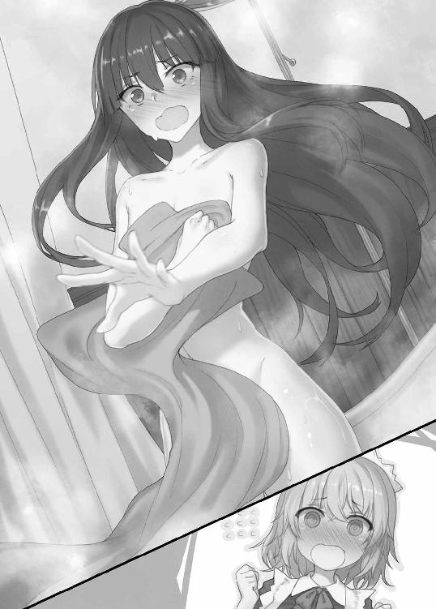

| 魔術破りのリベンジ・マギア1. 極東術士の学園攻略 (HJ文庫) | |
| 子子子子子子子 | |
| ホビージャパン (2017) | |

プロローグ 陰陽師・土御門晴栄
「さて――バスの乗り場はここら辺のはずなのだが......」
雑踏の中を一人、この合衆国では珍しい東洋人――土御門晴栄が歩いていた。
身長百六十センチにも満たない小柄な体躯に、背中まで伸ばされた艶やかな黒髪。
スカートから覗く足はスラリと細く、アジア系の人種にしては白くきめ細かい肌。
まだ幼さを感じさせるが精巧に整った顔立ちは、中性的な魅力を漂わせている。
背筋を伸ばして闊歩する姿は、可憐ながらも凛とした雰囲気を放つ人物であると言えた。
「もしかして......迷った、のか？」
ガイドブックを片手に、晴栄は呟きを漏らす。
大きめの旅行鞄を持って歩く姿は、さながら観光客そのものといった風貌だった。
そんな異国の地では少々目立つ晴栄の背後から、唐突に粗暴な声がかけられる。
「よお、嬢ちゃん。なんだ、道にでも迷ったのか？」
「道案内だったら、俺らに任せとけよ。ついでに、観光案内でもしてやろうか？」
「まあ、ちょっと場所変えて話そうや」
すると柄の悪い男たちがゾロゾロと現れ、取り囲むように晴栄へにじり寄ってきた。
「フン......大方、観光客を狙う人さらいの類いか？ まあ、しかし手間が省けた」
屈強な男たちに囲まれても、晴栄は声一つさえ震わせない。
それどころかニヤリと不敵な笑みすらを浮かべて、大胆不敵に言い放つ。
「希望通り、道案内をしてもらおうか。実は今、バス乗り場を探していてな」
「ああ、いいぜぇ。でも――それは俺らを愉しませてもらってから、だけどなぁ！」
男の口元が愉悦に歪むと、そのまま乱暴に晴栄の細腕へと手を伸ばす。
周囲の男たちも目で合図すると、彼らは一気に晴栄へ詰め寄って下卑た笑みを浮かべた。
「木生火、五行の相生をもって火気を生ぜよ――急急如律令」
静かに晴栄が呟くと男の手が触れた瞬間、急に火柱が立ち上がって男を飲み込む。
「ひ、ぎゃぁぁぁ――!?」
炎に包まれると男は悲鳴を上げて、地面へと倒れ込み転がることで消火を試みる。
その甲斐あってか炎は立ち消え、あとにはグッタリと身を投げ出す男の姿が残った。
「フン......大げさだな。身体の表面をほんのちょっと、炙ってやっただけだというのに」
「ひっ......こいつ、なにもないところから炎を出しやがったぞ!?」
「おい、もしかして......この女、魔術師じゃねぇのか？」
悪魔の如く凄惨に嗤う晴栄を見て、他の男たちは顔を見合わせて声を震わせる。
今し方の信じがたい現象も魔術――それを扱う魔術師ならば可能だと。
彼らは畏怖と畏敬の入り混じった瞳で、命乞いをするように晴栄を見る。
「いいや。正確に言えば、僕は魔術師ではない」
晴栄はつまらなそうな顔で、淡々と男たちの言葉を訂正した。
「陰陽師――僕の国......大和皇国では、そう呼ばれている存在だ」
ポカンと呆気にとられる男たちに対して、晴栄はつけ加えるように言う。
「では、早速案内してもらおうか」
無駄話はここまで、と本題を切り出した。
有無を言わせない高圧的な物言いで、君臨する暴君が如く命令を下す。
「魔女たちの園――セイレム魔女学園へとな」
時は文明の転換期となる二十世紀初頭。
めざましい科学技術の発展の裏で、人類は確固たる魔術文明を築き上げていた。
魔術――魔力を用い、超常なる事象を展開する技術の総称。
これを扱う者を人は魔術師と呼び、彼らは常に歴史の裏側で暗躍してきた。
決して表向きには語られないが、魔術師たちの存在こそが歴史を大きく動かしていた。
英国の英国王立協会、独逸の啓明結社、蘇格蘭の王立教団、巴里の九詩神、墺太利の東方聖堂騎士団、合衆国の神智学協会、中華の拳匪、印度の暗殺団、大和の陰陽寮――
これらの魔術組織を例に挙げればきりがないが、より優秀な魔術師の存在こそが国力の象徴とも言える時代となっていた。
必然的に列強各国は国を挙げて魔術師たちの育成に取り組み、こうして世界各国に魔術師の教育機関が点在することとなった。これから晴栄の向かう先もその一つである。
合衆国ニューイングランド地方、マサチューセッツ州ダンバース。
先の出来事から数時間後、晴栄の姿はそこにあった。
「ここが――セイレム魔女学園。現代魔女術の最高学府にして、唯一無二の学術機関か」
外界と内部を隔てる荘厳な校門を見上げて呟きを漏らす。
魔女たちの園――セイレム魔女学園。かつて起きた歴史的冤罪事件『セイレム魔女裁判』。その舞台となったこの場所に、その学舎は存在した。
大和皇国の陰陽道と同様に、独自発展を遂げた特異な魔術体系。それこそが現代魔女術。
晴栄はこの学園に留学するため、遠路はるばる極東の島国からやってきたのだった。
「いいだろう。目的を果たすためならば、僕は道化にも悪鬼にでもなってやる」
校門越しに見える学園を見据え、ニヤリと不敵に笑って独り言つ。
こうして、胸に揺らぐことのない野望を抱いて、晴栄は学園の門を潜っていく。
己が胸に宿った目的――復讐を遂げるまで、その歩みを決して止めることはない。
◇１
学園に到着すると晴栄は、まず学園長室へと通されていた。
来客用のソファーへ座っていると、その対面でにこやかに声をかけられる。
「ようこそ、我が学園へ。ミス・ツチミカド。学園長としてアナタの来訪を歓迎するわ」
真紅のタイトスーツに身を包んだ女性は、スカートから黒のタイツに包まれた脚線美を惜しげもなく晒していた。ぷっくりと厚みをもった唇を吊り上げて、艶やかに笑いかける。
ウェーブがかった透き通るような銀髪をなびかせる彼女こそ、セイレム魔女学園の学園長。現代魔女術の権威とも呼ばれる魔術師、〈魔女の神〉マーガレット・マリーだった。
「手厚い歓迎に感謝するよ、学園長殿。しかし、生憎と僕はここに長居するつもりもない。迅速に問題を解決して、一刻でも早く陰陽寮に帰らせてもらうつもりだ」
晴栄は腕を組んで薄い笑みを浮かべると、悪びれる様子もなく平然と答えた。
黙っていれば大和撫子然とした目を引く容姿だが、ひとたび口を開けば高圧的な物言いとの落差がどこかちぐはぐさを与えている。
「この学園で起こっている事件――生徒の連続失踪、それを解決するのが僕の目的だ」
晴栄がそう口にした瞬間、室内の空気が緊迫していくのが分かる。
しかし、躊躇うことなく本題を切り出す。空気を読んで気遣いをするつもりもない。
「事前に送ってもらった資料には目を通したが......半年ほど前から、この学園では生徒の失踪が発生している。学年も、年齢も、所属学科も、全てがバラバラ。一見すると、失踪者には共通点らしきものは見当たらない。なるほど、捜査が難航するのも合点がいった」
テーブルの上に置かれた資料を眺めると、晴栄は淡々と言葉を続けていく。
その言葉通り現在の魔女学園では、十数名に及ぶ生徒の連続失踪事件が発生していた。
「脱走者、って線なら過去にいなかったわけじゃないわ。この学園には脱走封じの防護壁が備えつけてあるけど、特出した実力者ならそれも越えられるしね。もっとも、そこまで優秀な生徒が、脱走するのはレアケースなんだけれど」
「しかし、今回の失踪者には、壁を越えられるだけの実力はないと？」
「もしかしたら、力を隠してる生徒もいた可能性もあるけど......流石に全員ではないわ」
「力なき者には越えられぬ壁、か......皮肉なものだな」
学園のカリキュラムについていけない落ちこぼれは脱走すらできず、逆に学園内で優遇される成績優秀者はそんな環境を見す見す手放さない。この学園で脱走者が少ない理由だ。
では、失踪した生徒が脱走者でないならば？
「何者かによって拉致された、もしくは殺害された――」
「そういう可能性が高い、と見ているわ」
「だが今日に至るまで、有力な手がかりは掴めていないと？」
「もちろん、ここ数ヶ月は夜間の警備にも力は入れているわ。生徒会や風紀委員を総動員して、現在も捜査を行っているのよ。でも、結果は芳しいものじゃないわ」
マリーは少し疲れの見える苦笑で、小さく溜め息を吐いて答える。
学園長の彼女にとって、これは看過できない事態だ。その心労は晴栄にも想像できる。
「ある日突然、なんの前触れもなくいなくなる――神隠し、とでも言いたくなるな」
「表向きは自主退学、ってことにしてあるけど......これ以上、犯人を野放しにはできないわ。だからアタシは、アナタたち陰陽寮に助力を要請したのよ」
捜査が難航している理由は、再認することができた。
しかし、晴栄の表情は、依然として険しい。
「だが......解せないな。どうして自分たちではなく、極東の魔術師風情に頼る？」
「あら、理由は単純明快よ。だって、アナタたちは犯人に関与していないから」
笑顔で告げるマリーを見て、晴栄は皮肉交じりに口角を吊り上げる。
「ハッ――では、貴方は違うのかな学園長殿？」
「生徒も、教師も、街の住人も。アタシを含めて誰もが容疑者よ。でも、アナタは違う」
この閉鎖された環境では、誰もが等しく疑われている。例外は外部から来た晴栄だけだ。
疑心暗鬼に囚われている彼女たちにとって唯一、身の潔白が証明された人間とも言える。
「......なるほど。しかし、随分と陰陽師を過大評価しているようだが」
「あら、謙遜しないでもいいのよ？ 天文を読み解き、吉凶を予知さえするのは音に聞こえし東洋の秘技――こと痕跡を読み解くのは、アナタたち陰陽師の得意分野でしょ？」
「よくご存じなことで」
「そうでなければ、依頼はしないわ。それに以前から、陰陽道には興味があったのよね」
皮肉めいた物言いにも、マリーは余裕のある笑みを崩さない。
「探偵の真似事など趣味ではないが......それが僕に求められた役割だというならば、甘んじて受け入れよう。〈天文博士〉の名に恥じぬように、せいぜい役目は果たしてみせるさ」
「ええ、期待してるわよ。なんて言ったってツチミカドのご当主様推薦、なんですから」
晴栄が所属しているのは大和皇国においての魔術師、陰陽師を束ねる機関である陰陽寮。
〈天文博士〉とは、その中でも特に優秀な陰陽師に与えられる〈四博士〉という役職の一つ。
晴栄は十五歳という若さで、その一角に任命されていた。
「こうして交流も持てたことだし、せっかくだから仲良くしましょう？ 今回の件をきっかけに、魔女学園と陰陽寮の間に友好関係を結べればとも思っているのですもの」
「友好関係、ねぇ......まあ、すんなりと行けばいいのだが」
魔術師たちの世界は排他的だ。別体系からの流入を嫌い、自らが修める術技を信奉する。
それは教育機関も同様だ。人種も、思想も、宗教も、分け隔てなく門戸を開く魔女学園は他に類を見ない存在だった。だからこそ、逆に中立を保ってきたのだが――
「せいぜい寝首をかかれないように、よろしく頼みたいものだな」
「大丈夫よ。アタシたちは、きっと上手くやっていけると思うわ」
どういう風の吹き回しか、魔女学園は陰陽寮に捜査の協力を要請してきた。
中立を貫いてきた魔女学園とのパイプは、陰陽寮としても喉から手が出る程に欲しい。
だからこそ、晴栄を派遣することにより事件解決という功績を打ち立て、魔女学園に恩を売ろうと目論んでいるのだ。その後の立ち回り次第では、同盟を結ぶ可能性もあり得る。
もし同盟が成立すれば、徒党を組むという考えを持たない他の組織とは違い、魔女学園と陰陽寮は他より抜きん出ることができる。陰陽寮にとっては、海外進出の第一歩だ。
つまり今回の留学の裏には、その橋渡しの意味が隠されていた。
「でも――」
政治的な意図を理解した晴栄はため息を吐くが、マリーはニヤリと意味深に微笑む。
どこか淫靡かつ不気味な笑みを見た瞬間、ゾクリと晴栄の背筋に悪寒が走った。
「まさか来てくれたのがこんな美少女だなんて......これは嬉しい誤算ね」
マリーは晴栄の目の前まで迫り、ズイッと顔を近づける。
「アタシも外見にはうるさい方だけど......貴方も我が校の生徒たちに引けを取らないくらいに可憐で、魅力的よ。ええ、それはもう。思わず食べてしまいたいくらいに」
白魚のように細く繊細な指が、晴栄の顔に触れる。
ヒヤリとした指は輪郭をなぞるように蠢き、その感触に全身が粟立つのを覚えた。
「な、ななな、なにをひゅる!?」
先ほどまでの余裕が嘘のように、晴栄は慌てふためき抗議の声を上げる。
「んー、なにって......やだ、ハルナってば。こういうのって、口にするのは野暮よ？」
マリーはニッコリと微笑んだまま、指を徐々に顔から肩へと下げていく。
「ああ、大丈夫大丈夫。アタシ、こう見えても両性愛者だから」
「そういう問題じゃない！」
「じゃあ、どういう問題なのかしら？」
キョトンとした表情で、マリーは不思議そうに首を傾げる。
「会ったばかりの人間、それも一応は客人に手を出そうとするな！」
「え？ こんな可愛い子が目の前にいるのに、手を出さないとか頭大丈夫??」
「僕はお前の頭の方が心配だ！」
晴栄は力尽くでマリーを押し退けて、サッと距離を取る。
「これが本当にこの学園のトップかつ、魔女術の権威とはとても思えないぞ......」
「あら、失礼ね」
子犬のように身を震わせる姿を見ると、マリーは心外だと言わんばかりに目を細める。
彼女はかつて埃及の大灯台と呼ばれる組織に属し、失伝されかけていた古来魔女術を再編成して、独自に現代魔女術という分野を立ち上げた高名な魔術師である。
後に独立して、このセイレム魔女学園を設立。世界各国から魔女術を修めし者、また魔女術を求める者を集め、後進を育成するために指導者として門戸を開いてきた。
一方、魔術師の世界において彼女は奇人とも称されている。中世黒魔術と混同されがちな魔女術に対する印象も手伝って、黒い噂も絶えないことは晴栄も理解していた。
それは面白おかしく脚色された実態のない噂話の類いかと思ってもいたが、目の前にいる人物はどう見ても奇人変人の類いで間違いないようだ――と認識を改めざるを得ない。
「ちなみに――」
晴栄がそんな思考を巡らせていると、マリーは思い出したように口を開く。
「アタシはタチよ、ハルナ☆」
「そんなことは誰も聞いていないだろうが!?」
ウィンクをするマリーを見て、晴栄は脊髄反射の如くツッコミを入れるのだった。
◇２
どうでもいい軽口を交えて、陰陽寮での暮らしを根掘り葉掘りと聞かれ続けて数時間。
結局、学園長室をあとにしたのは、完全に夜の帳が下りきった頃だった。
「はぁ......疲れた。まったく、なんなんだあの女は」
憔悴しきった顔で校舎を出ると、晴栄は自分にあてがわれた宿泊施設に向かって行く。
「しかし――ここは本当に、学園に都市が内包されているな」
キョロキョロと物珍しげに周囲を見渡す。
このセイレム魔女学園は周囲をグルリと壁に囲まれていて、外界との接触は断絶されている。高さ五メートルを優に超えるレンガ積みの壁には強固な結界術式が施されていて、外界からの侵入者を頑なに拒んでいた。
都市内部には商業施設や農場も完備されていて、学園の外に出ずとも自給自足での生活が可能となっている。故に学園都市、そう称されることもある。
「脱走封じ、か......もっとも、外部からの侵入者にとっても、同様に脅威だろうがな」
この学園は原則的に、部外者の立ち入りを禁じている。
例外は晴栄のように学園長のマリーが許可した者のみで、学園の生徒やその関係者以外は原則的に足を踏み入れることが叶わない場所でもある。
それは学園内部の秘匿技術を守るためであり、だからこそ侵入者への警戒は怠らない。
生徒にとっては大きく門戸が開かれた学園であるが、外部の人間にとっては真逆の印象を与えるだろう。しかし、外部からの干渉を防いだだけではまだ不十分だ。
内部からいたずらに術技を持ち出す者も、同様に警戒しなければならない。
その結果がこの防壁だと理解すると、晴栄は「皮肉なものだな」と呟きを漏らした。
「さて......そろそろ着いてもおかしくはないのだが」
校舎がある中央区画から東に進み、生徒たちの住む寮がある居住区画へ足を踏み入れる。
しかし、全ての寮を素通りすると、居住区画の南端へと向かって歩いていく。
「――ここ、か」
寮が連なる区画から少し外れた場所に、その屋敷は存在していた。
古めかしい印象を与えるヴィクトリア様式の建物を見上げると、静かに呟きを漏らす。
この建物は生徒が暮らす寮とは別に、来客のために用意された宿泊施設らしい。
学園設立当初は外部から招いた講師たちを住まわせていたが、やがて学園を卒業した生え抜きの講師たちと入れ替わっていくにつれて、彼らは姿を消していくことになる。
そのまま学園に残った講師は教員区画に定住するようになり、必然的にこの外来者宿泊施設はひっそりと役割を終えていたとのことだった。
「話を聞いた時は、どんなあばら屋かと思ったが......案外、手入れが行き届いているな」
晴栄が魔女学園に留学する際、提示した条件の一つに『寮ではなく一軒家を宿泊施設として提供すること』があった。
陰陽師にとって住まいとは身を守る要塞であり、術技を研鑽する修行の場でもある。
寮の一室となればその多くに制限がかかり、本来の実力が発揮できない可能性があった。
しかし、この屋敷には小さいながら庭もあり、居を構える最低限の条件は満たしている。
「さて――」
満足そうに頷くと、玄関の扉に手をかける。
「とりあえず、今日は色々とありすぎた......いい加減、熱い風呂が恋しくなってきたぞ」
今日は執拗にマリーからつきまとわれ、慣れない環境も手伝ってか疲労を感じていた。
ここ数日の間は極東の地から船を乗り継ぎ移動に費やしていたので、暫く湯船に浸かっていなかったからか。熱い風呂がいい加減に恋しくなっていた。
しかし、いつの間にか屋敷内の明かりが灯っていることに、晴栄は気づいていなかった。
◇３
「お――お帰りなさいませ、ご主人様！」
扉を開け放つと、そこにはメイドの姿があった。
黒を基調としたメイド服に身を包んでいる少女は、スカートの裾を持ってぎこちなく一礼をする。しかし、表情に浮かんでいるのは、どこか引きつったような笑み。
「............」
突然の出来事に、晴栄は思わず動きを止めて沈黙する。
だが次の瞬間には何事もなかったかのように、少女を素通りして歩いて行く。
「ちょ――ちょっと待ってくださいっ！ む、無視しないでくださいっ!!」
「......誰だ、君は？」
「えーっと......わ、私は、ティチュ・マレフィキウムと申します。この学園への滞在中、ツチミカド様の身の回りのお世話を仰せつかった者です」
あたふたと忙しなく視線を右往左往させ、少女はおずおずと名前を告げる。
晴栄はティチュと名乗った少女を値踏みするように観察し始めた。
まず目を引くのは、電灯の光を浴びてキラキラと輝く亜麻色の髪。肌の色は浅黒く、俗に言う暗黒大陸――中東の出身者、もしくはその血を引く人間であると推察できる。
女性にしては小柄であるが、メイド服の下からでも肉付きのいい肢体が覗える。
特に胸部と臀部は女性的な膨らみをこれでもかと主張していて、幼い顔立ちや小さな体躯とはアンバランスな艶めかしさを感じさせていた。
「結構だ。僕に世話係など必要ない」
ひとしきり観察を終えると、晴栄は無感情な声でピシャリと言い放つ。
「えぇぇ!? そ、そんなぁ......」
予想外の答えだったのか、ティチュは素っ頓狂な声を上げてしまった。
「こ、ここっ、困りますっ！ もし、追い返されたなんてメイド長に知られたら......わ、私、お仕置きされちゃいます!!」
はわわ、と慌てふためきながら動揺するティチュ。
彼女はそのまま縋るような目で晴栄を見る。
「も、もし、知らぬ間になにか気分を害させてしまったのならごめんなさい！ 謝ります！ すぐにでも直しますから！ お願いしますぅ......!!」
「君のことは関係ないから、少しは落ち着いたらどうだ。学園長に何を言われたかは知らないが、自分のことくらいは自分でできる......ただ、それだけだ。他意はない」
宥めるような口調で、大きなため息と共に晴栄は説明をしていく。
――これではまるで捨て犬だ、と目の前のティチュを見て内心で苦々しく呟きを漏らす。
「え、そのぉ......でもぉ――」
「安心しろ。学園長には、僕から説明しておこう。だから君は大手を振って帰るといい」
「ほ、本当ですかぁ？ よ、よかったぁ......」
その言葉で不安が払拭されたのか、ティチュはホッと安堵の息を漏らした。
「あ......でも、お夕飯は用意させて頂きましたので、是非とも召し上がってください」
思い出したように口にすると、ティチュはニッコリと笑いかける。
初めて目にするティチュの自然な笑顔を見ると、晴栄はどこかむず痒い心地になった。
「そういうことならば、頂こうか」
ここで無下に追い払っても、また面倒な反応が返ってくるに違いない。
そんな確信めいた推察をすると、晴栄は素直に同意することにした。
◇４
「そういえば――」
食事を平らげたあと、ふと疑問に思ったことを尋ねてみる。
ティチュが用意していた料理は、日本人の晴栄にとっても満足いく味だった。
だからいつの間にか、先ほどよりも上機嫌になっているが、当人に自覚はない。
「君はどうして、使用人のような真似をしている？」
ティチュの容姿から察するに、まだ晴栄と大きく変わりない年齢だろう。
だとすれば学園の生徒だと考えるのが普通だが、実際に彼女はメイド服に身を包みこうして使用人のような真似をしている。話を聞いてみると、長らく使われていなかったこの屋敷を人が住めるまで掃除と手入れをしたのは彼女だったそうだ。
「ええ、っと......」
台所で洗い物をしていたティチュは、どこか気まずそうに言葉を濁す。
「私は、その――〝準学生〟......ですので」
「準学生？」
聞き覚えのない言葉に、晴栄は怪訝そうな表情を浮かべる。
「このセイレム魔女学園には、二種類の学生が存在します。まずは、一般学生。これは入試を合格した正規の学生ですね。学園の入試は魔女術への適性がなければ、まず受かることはできません。当然、魔術の世界に明るくない人間なら、門前払いされるでしょう」
どこか自嘲するように苦笑いし、ティチュは説明を続ける。
魔術を使うためには魔力と呼ばれる精神エネルギーが必要になるが、全ての人間が平等に魔力を精製できるわけではない。魔術の資質とは、遺伝によるところが大きい。
晴栄のように魔術を修めてきた家系に生まれた者ならばまだしも、それ以外の一般人が潜在的に資質を有している可能性は数百分の一とも言われている。
「でも、魔術の素養がなくても、学園に入学する手段があります。それが準学生制度です。その代わりに、一般学生よりも莫大な入学金と授業料が課せられるんですけどね」
「なるほど。つまりは、体のいい〝出資者〟というわけか」
ティチュの説明を聞くと、そこで全てを察したように呟きを漏らす。
「魔術の研鑽や修得には、莫大な資金が必要になってくる。設備、教材、触媒......例を挙げればきりがないが、ここの規模ともなれば莫大な額となるだろう。そこで魔女学園のブランドが欲しい人間を募って、資金繰りをするわけだ。フン、所詮は体のいい金づるか」
「でも、私みたいな一般家庭で育った人間には、そんな大金は支払えません......だから、こうやって学園の労働力となることで、学費を工面してるんです」
「ハッ――まるで奴隷だ。そこまでして魔女術にしがみつくのか、僕には理解できない」
「私には......私にはどうしても、魔女術が必要なんです」
悪意の込められた皮肉を受けても、ティチュは困ったような笑みを崩さない。
「実は故郷に、病を患った母がいるんです。お医者さんにも散々診てもらったんですけど、現代の医学では治療できないみたいで......そんな時、この魔女学園の話を耳にして」
視線を床へと落として、ポツリとティチュは言葉を続ける。
「この学園には薬学科もあるみたいなので、授業料が貯まったらまずはそこで勉強したいんです。生活費を差し引くと、なかなかお金は貯まらないですけど......故郷で私を待っている母のことを思うと、辛いお仕事も頑張れるんですっ！」
言い終わると、ティチュは一転して明るい調子で話を締めくくった。
苦境に立たされてもなお気丈に笑うその顔を見ると、晴栄は静かに口を開いた。
「......症状は？」
「え――」
「君の母親がかかっている病気、その症状は？ と聞いているんだ」
「ええっと......微熱が引かなくて、常に身体に怠さが出るみたいで......最初は風邪みたいに軽い症状だったんですけど、段々と衰弱していって今では立つこともできなくて......」
「悪夢は見ていないか？ 特定の誰かでなくていい、とにかく誰かが母親の夢の中に出てきていないか？」
「え、なんで分かるんですか......？ 確かにお母さんは、夢の中で誰かに首を絞められてるって......でも、ごめんなさい。それは黒い影みたいで、誰かは分からないみたいです」
どこか確信めいた物言いに、ティチュは驚いたように目を丸くする。
「そうか......」
「あ、あの......ツチミカド様は、母の症状に心当たりがあるのですか？」
「いや、気のせいだったようだ。さっきの質問は忘れてくれ」
「そ、そうですか......」
静かに否定されると、ティチュは見て分かるほどに落胆する。
「力になれなくて悪い。さあ、あとのことは自分でできるから、君はもう帰るといい」
「い、いえ！ こちらこそ、変な話をしてしまって申し訳ありませんでしたっ......!!」
ティチュは謝罪されると慌てて首を振って、大仰な仕草でとんでもないと答えた。
「で、では、そろそろ失礼させて頂きます。日用品の置き場については、さっき説明した通りですので。もし、他になにか分からないことがあれば、気軽にお聞きくださいっ！」
「ああ、分かった。それと......必要ならば、寮まで送っていくが？」
「だ、大丈夫ですから！ ツチミカド様にそこまでして頂くわけにはいきませんっ!!」
ティチュは最後に確認をして、ペコリと恭しく頭を下げて帰って行く。
「それではツチミカド様、おやすみなさいませ」
「ああ、気をつけて帰るように」
視界から消えていくティチュの姿を見送ると、どこか物憂げにため息を吐く。
「まったく――なにをやっているんだ、僕は」
晴栄にはティチュの母親の病状がどんなものか、おおよその予想がついていた。
その対処方法もまた同時に。だからこそ、心が揺れた。揺れてしまった。
自分ならばそれができると、救いの手を差し伸べたい衝動に駆られた。
「僕は目的のため、ここにやって来たんだぞ？ 一時の感傷に流されて、関係のないことに首を突っ込んでなんの利益がある。そんな余裕は、今の僕に残されてはいない」
しかし、自嘲気味に笑う。土御門晴栄という人間は、どこまでも利己的な人間だ。
これまでも己のために何人もの敵対者を排し、躊躇なく他人を蹴落とすことで成功を掴んできた。この若さで〈天文博士〉の地位を獲得したことがその証拠である。
「この僕が人助け？ 笑わせるな、柄じゃないんだよ」
自らの甘さを再認すると、それを切り捨てるように呟きを漏らす。
「僕は目的を果たすためならば、喜んで他人を切り捨てる。今までも、これからも」
晴栄の見立てでは、ティチュは恐らく念願叶って薬学科に編入することはない。
膨大な学費を稼ぎ終わり魔女術を学ぼうとする頃には、母親の命は尽きているだろう。
「だからどうした？ 見知らぬ他人が死のうが生きようが、そんなことはどうでもいい」
――僕にはやり遂げねばならないことがあるのだから。
自分が遥か遠い異国の地まで訪れた理由を再認すると、立ち上がってリビングをあとにする。一瞬、脳内に先ほどのティチュの顔が過るが――
「僕は土御門の家に復讐を果たす――ただ、それだけだ」
それを振り払うと、自らに言い聞かせるように呟きを漏らすのだった。
◇５
「ふぅ――」
久しぶりの湯船に入ると、晴栄は大きく息を吐いた。
肩までどっぷりと湯に浸かると、全身に熱が染みいっていくのが分かる。
「なんだ、思ったよりも本格的じゃないか」
心地よさに声を漏らすと、表情は自然と緩んでいた。
「やはり、風呂はいい......心が洗われるようだ」
今日は晴栄にとって、目まぐるしい一日だった。
学園までの長旅で蓄積した疲労に加え、学園長室ではマリーにつきまとわれ、屋敷に着けばメイド姿の少女が待ち受けているという有様だ。
「まったく......入学早々からこれでは、先が思いやられるな」
やれやれと盛大にため息を吐く。
一日でも早く事件を解決して陰陽寮に帰るという目標を掲げている以上、初日とはいえ一向に捜査の進展が見られないのはあまり芳しくない状況だ。
「まあ、明日からは余計な邪魔も入らないだろう。せいぜい、好きにやらせてもらうさ」
湯船から立ち上がると、ニヤリと不敵に笑って呟きを漏らす。
これから待ち受ける受難をどこか楽しむように、口元を歪に吊り上げ浴室から出て行く。
しかし――
「あ――」
「なっ――」
ドアを開けてバスタオルに手をかけた瞬間、どこかで聞き覚えのある声が聞こえてきた。
それは本来、ここにいてはいけない人間の声だった。この場にいてはマズい人間だ。
「きゃ、キャアァァァ――ッ!!」
「うっ、うわあぁぁぁ――っ!?」
一瞬の沈黙のあとに、互いの悲鳴が浴室内に反響する。
晴栄は咄嗟にバスタオルを掴んで、混乱しながらも自分の裸体を即座に隠す。
風呂上がりにもかかわらず、その顔からは一切の血の気が消え失せてしまう。
「あ、あの、あのあの......私、替えのバスタオルを出すのを忘れてて......それ、で......」
そんな晴栄を見て、顔を青ざめさせ挙動不審になっていたのはメイド服姿の少女――
先ほどまで顔を合わせていたティチュだった。
手に持ったバスタオルを見る限り、言葉通り屋敷を出たあとに替えのバスタオルを出していなかったことに気づいて戻ってきたのだろう。
そこで入浴していた晴栄と入れ替わる形で屋敷に入り、この洗面所までやってきたのだ。
それ自体にはなんら問題はない。彼女はただ、自らの仕事を全うしただけなのだから。
ただし、問題があるのは――
「え、えっと、そのぉ――」
今にも泣き出しそうな表情で、必死に言葉を吐き出していくティチュ。
視線の先はタオルに隠された晴栄の下半身に向けられていて、そこにはあるはずのないものが存在している。先ほど、彼女はそれを目の当たりにしてしまった。
「も、もしかして、ツチミカド様って......男の人、だったんですか？」
ティチュの口からその言葉が出た瞬間、晴栄の頭の中が真っ白になっていく。
後頭部を思い切り殴られたような錯覚を覚えると、意識が遠のいていくようだった。
――ああ......そもそもどうして、こんなことになったのだろうか？
走馬燈のように脳内を過るのは、彼がこの学園へ訪れることになった経緯だった。

◇１
時は遡り、およそ一月前。京都の土御門家では、とある会合が行われていた。
参加しているのは、土御門とそれに連なる陰陽師たち。誰も彼もが陰陽寮では役職に就いていて、陰陽寮という組織において土御門が実権を握っていることが見て取れる。
「さて――」
まず始めに重々しく口を開いたのは、この会合の主宰者――
陰陽宗家が筆頭、土御門家が当主である土御門晴親だった。
陰陽寮では長官として組織を統轄する陰陽頭であり、全ての陰陽師の頂点に君臨する。
「此度は招集に応じて頂き誠に感謝である。当家を代表して、諸君らへ礼を述べよう」
齢七十を越える老体はやせ細り、完全に色素が抜け落ちた白髪と相まって枯木のような印象を与える。しかし、その瞳に宿る暗い光は対峙する者の全てを見透かすように鋭く、静かに放たれた声は有無を言わせない威圧感すら醸し出していた。
「今日、集ってもらったのは、皆から意見を募りたい故である。では......晴雄」
一同を睥睨するように見渡すと、晴親は傍らの男に視線を向ける。
「実は先日、合衆国のセイレム魔女学園から我々に要請がありました。『現在、学園内で発生している生徒の連続失踪事件の解決に、陰陽寮の力を貸して欲しい』とね」
晴親の言葉に応えて説明を始めたのは、彼の息子である土御門晴雄。
陰陽寮では陰陽頭を補佐する役職である陰陽助の地位に就き、実質的に陰陽寮の副官の役割を担っている。晴雄は陰陽師たちのまとめ役である〈陰陽博士〉も兼任しているので、陰陽頭である晴親に次ぐ権力を有していることになる。
言わば土御門家の次期当主で、それはやがて陰陽寮の頂点に君臨することを意味する。
「おお、それは真ですか兄上！ これはしたり、ついに国外にも我らが土御門の名を知らしめる時が来たということですな!!」
晴雄の言葉を聞くと、土御門晴綱は歓喜したように声を上げる。
彼は晴親が側室に産ませた子であり、晴雄とは異母兄弟の関係にあった。
「本来なら〈陰陽博士〉たる兄上が出向くのが一番かと思われますが、しかし多忙なご様子。なればその大役、この晴綱にお任せ願いたい！ 必ずや期待に応えましょう！」
「晴綱殿。あまり身のほどを弁えぬ発言で、兄上を困らせぬようにと忠言申し上げる」
晴雄に取り入ろうと躍起になる晴綱を見て、ピシャリと牽制するように冷ややかな声。
これまでのやり取りを黙って聞いていた晴栄は、うんざりとした表情で口を開いた。
「貴様......どういう意味だ、晴栄ぁ？」
「どうもこうも、そのままの意味ですよ。率直に言って、晴綱殿では力不足と言っているのです。あなた以上の陰陽師など、陰陽寮には掃いて捨てるほどいるのですから」
「はる、なぁ――妾の子の分際で、この〈暦博士〉たる俺を嘲るか......!?」
「貴方こそ〈天文博士〉たる僕に意見すると？ 官位を上げてからご意見願いたいですな」
〈暦博士〉は四博士の一角に数えられるが、その地位は四博士の頂点に君臨する〈陰陽博士〉と並ぶ〈天文博士〉には及ばない。つまるところ、陰陽寮内の地位では晴綱より晴栄の方が高いことになる。それを再認させるように、晴栄は嘲りに口角を吊り上げていた。
「それと――母上を侮辱する物言い、訂正願いましょうか？ 公的にはあなたの母君も僕の母上も同じ側室でしょう。その言い様では、自らの母親も貶める発言となりましょう」
晴綱の言うとおり、晴栄は正室の息子ではない。しかし、それは晴綱も同様だった。
土御門家の当主である晴親の息子は、正室の子である晴雄、側室の子である晴綱、そして別の側室の子である晴栄の三人。
正統な生まれで陰陽師として優れた実力を持つ晴雄は、名実共に次期当主との呼び声が高い。だが次点として、晴綱と晴栄のどちらを据えるかは評価が分かれていた。
正規の側室の息子だが、陰陽師としては凡人の域を脱しない晴綱。特殊な出生により長らく嫡子として扱われていなかったが、天性の才能と血の滲むような努力で三年前に齢十二にして〈天文博士〉の座へと登り詰めた天才である晴栄。互いにコンプレックスを抱え合うが故に、顔を合わせればこうして罵り合うことが避けられなかった。
「――静粛に。晴綱、晴栄。いい加減に弁えよ、当主殿の御前であるぞ？」
静かに、だが威圧するように響くのは、晴雄の声だった。
「も、申し訳ありませぬ兄上......つい、晴栄の挑発に乗ってしまい汗顔の至りです......」
晴雄の叱咤を受けて、晴綱はハッと我に返り冷や汗をかきながら謝罪する。
「僕はただ、事実を述べたまでなのですがね」
晴栄がボソッと呟きを漏らすと、晴綱はキッと恨みがましく睨みつけた。
「兄上。この場で意見を募る、ということはその話は一筋縄ではいかないのでは？」
気を取り直して晴栄が尋ねると、晴雄は頷いて答える。
「今回の打診にあたって、魔女学園が提示された要望が一つだけある」
「なんと......こちらに協力を求めながら、厚かましくも条件を出すとは」
「まあ、そう言うな晴綱。先方の要求は、あの学園の在り方を鑑みれば正当性がある」
晴綱を宥めるように言うと、晴雄は改めてその〝条件〟を口にした。
「魔女術とは曰く、女性のみが授かる魔術。ならば必然として、魔女学園には女性のみが在籍する。つまり――派遣する陰陽師は女性を、というのがあちらの要望だ。それも年齢は、学生として在籍するに相応しい年頃が望ましいそうだ」
晴雄がそれを口にすると、周囲の人間たちは顔を見合わせて口々に囁き合う。
「妥当な要求ですね。事件の調査に乗り出す以上、失踪した生徒と同じ立場で潜入できるのが望ましい。教師としてという線もありますが、生徒であった方が捜査はやりやすい」
女性しか在籍しない学園に男性を派遣すれば、どんな理由をこじつけても悪目立ちすることは否めない。そうなっては、調査にも支障を来すかもしれない。
だから被害者と同じ立場で潜入できるのが好ましい。だが、そうなると問題があった。
「しかし......女性、それも学生という年齢となれば、自ずと候補は絞られましょう」
晴栄の懸念はそこだった。陰陽師の人口は、圧倒的に男性の方が多い。そうなると必然的に女性の陰陽師の人数は少なく、学生として通用する年齢となると数は限られる。
「――――」
晴栄の言葉を聞くと、周囲の視線は一点に集まっていく。
そこには座禅を組んで目を瞑り、微動だにせず話をただ静かに聞く少女の姿があった。
肩口まで伸びた栗色の髪をサイドテールにまとめ、山伏のように着込んだ袈裟からは筋肉質だが女性的な柔らかさを感じさせる肢体が見えている。
彼女こそ陰陽宗家が一角である賀茂家の次期当主、賀茂鴨女だった。
「確かに鴨女ならば、実力的には申し分ありませんが......」
衆目に晒されながらも微動だにしない鴨女を見ると、晴栄が言いにくそうに言葉を濁す。
役小角を開祖とする密教系陰陽道を修める賀茂家は、遡れば土御門の祖先である安倍晴明の師匠となった賀茂忠行の家柄である。今でこそ陰陽寮の実権を土御門に譲ったが、歴史でいえば陰陽宗家の中でも屈指であり、優秀な陰陽師を輩出し続けている名門だ。
実際、鴨女は悪鬼調伏などの実戦においては、当代最強とも名高い晴雄にさえ迫るとさえ評されている。実力であれば申し分ないのだ。しかし、晴栄の表情は晴れない。
「――――」
しばらく沈黙が続くが、鴨女は一向に動く気配はない。
とうとう嫌な予感が確信に変わった晴栄は、立ち上がって鴨女の元に歩いて行く。
「――――」
「鴨女」
「――――」
「おい、鴨女」
「――――」
「起きろ――この大馬鹿者が！」
反応が返ってこないとついに覚悟を決め、思い切り後頭部を叩いて怒号を上げた。
「って――うわぁぁぁ!? じっちゃん、ゴメン！ 寝てない！ 寝てないってば!!」
すると鴨女はビクッと身体を震わせ、叫び声を上げながら両手を合わせて拝み倒す。
「あれ......晴坊じゃん。なんでいんの？ ウチ、山ごもりの最中じゃなかったっけ？」
「お目覚めか、大馬鹿者......ここは土御門の家で、お前は会合に参加しに来たんだろ」
「ああ、そっかそっか。なんか大事な会合があるとかで、じっちゃんに無理やり下山させられたんだったっけ。いやー、思い出せてよかったよかった」
あっけらかんと手を打って納得する鴨女に、晴栄は苦虫を噛み潰したような顔をした。
「お前はその大事な会合に、居眠りしていたけどな......」
「いやー、だってさー......ぶっちゃけ、退屈だったし」
「ぶっちゃけるな！ お前......仮にも賀茂家の次期当主が、そんな様でどうするんだ？」
「えー、そもそもウチが次期当主になったのも、じっちゃんに当主になれば美味いものが食えるって聞いたからだしー。ぶっちゃけ、このあとの食事会が本番でしょ？」
「お前を見てると、本当に権力争いとか虚しくなってくるよ......」
悪びれる様子もなく平然と答える鴨女を見て、晴栄は大きくため息を吐く。
鴨女は陰陽師としては一流だが、それ以外のことに関してはずぼらな人間だった。
放っておけば山ごもりの修行に明け暮れ、悪鬼調伏という大義名分で全国を漫遊。家業は現当主である祖父に一任し、陰謀が渦巻く陰陽師の権力闘争とは程遠い存在でもあった。
幼なじみとして長年それを見てきた晴栄は、その奔放さを嫌と言うほど理解している。
「......鴨女君。もう一度、最初から説明した方がいいだろうか？」
鴨女の妄挙を見て唖然とする一同だったが、晴雄はコホンと咳払いをして尋ねる。
「いえいえ。その心配には及びませんよ、晴雄さん」
鴨女は鷹揚に首を横に振ると、両手の人差し指を左右のこめかみに当てた。
「はぁん、なるほど......うんうん、そういうことかー」
円を描くように人差し指を動かしていくと、鴨女は納得するように呟きを漏らす。
これは鴨女の特技であり、意識が途切れていた時に聞いた音声を脳内で遡っているらしい。道教における技術らしいが、晴栄はこれを居眠りの時に発揮している姿しか知らない。
「あのー、晴雄さん。これって多分、ウチ以上の適任がいると思いますよ？」
「ほお......それは鴨女君以上の、かな？」
「ええ、もちろん。ウチはその人を推薦しようと思います」
「それでは――鴨女君の推薦する人物、とは誰だろうか？」
「じゃあ、今から連れてくるんで、ちょっと待っててもらえますか？」
晴雄の問いに鴨女は意味深に笑うと、何故か晴栄の手を取って部屋を出て行こうとする。
「お、おい――どうして僕も一緒に行かなきゃならないんだ!?」
強引に手を引かれて部屋から連れ出されると、思わず抗議の声を上げる。
「んっふっふ～、いいからいいから～♪」
しかし、鴨女は抗議など知らん顔で、グイグイと晴栄を引っ張っていった。
◇２
「そんじゃあ、お邪魔しまーっす」
結局、鴨女たちがやって来たのは、晴栄の部屋だった。
勝手知ったると遠慮もなく扉を開けると、鴨女は部屋の中に入っていく。
「晴坊の部屋まで上がったの久しぶりだね。昔は毎日みたいに、入り浸ってたんだけど」
「それで......結局、お前以外の適任っていうのは誰なんだ？」
晴栄は自分も部屋に入ると扉を閉めて、いい加減に真意を説明しろと催促する。
「そう言えば昔に、さ......ウチらってさ、結婚式ごっことかしたことあるじゃん？」
鴨女は答えをはぐらかして、どこか懐かしむように呟きを漏らす。
確かに晴栄と鴨女は歳が近いこともあって、幼い頃はよく一緒に遊んでいた。
二つ年上の鴨女はまだ晴栄が嫡子として認められていなかった頃、唯一彼と交流を持っていた人間だ。家の人間から疎まれ、自分の部屋に閉じこもっていた晴栄を外に連れ出すのはいつだって鴨女の役目だった。
「あの時のこと――晴坊は覚えてる......？」
フッと気恥ずかしそうに微笑んで、顔を赤らめる鴨女。
普段は豪放磊落としているので異性として意識していなかったが、こうして改めて見ると鴨女は整った容姿をしている。端的に言って晴栄は、今の鴨女に魅力を感じていた。
「ね、晴坊......目、瞑って？」
「え、あ、いや......今はそんなことしてる場合じゃ――」
互いの視線が混じり合うと、鴨女は囁くように言う。
「お願い......目、瞑って欲しいな？」
「......うん、分かったよ」
どこか懇願するように耳元で囁かれると、晴栄は覚悟を決めて目を閉じた。
こんなことをしてる場合かと自問自答を繰り返すが、女子にここまでさせて恥をかかせるわけにはいかない。その一心で、ギュッと目を瞑る。
「ヒャッハー！ メイクの時間だぁぁぁ――!!」
瞬間――室内に一陣の風が吹いた。
「......って、風？」
晴栄が覚悟していた事態は訪れず、高速で顔になにかが塗りたくられている感覚がある。
「んっふっふ～、やっぱり鴨女ちゃんの見立ては正しかったようですよん」
混乱する晴栄に構うことなく、鴨女はニヤニヤと笑いながら満足そうに呟きを漏らす。
「ねえねえ、晴坊。ちょっと鏡、見てみなって」
鴨女に促されて目を開けると、晴栄はそのまま鏡を見た。
「鏡、だと......って――なんだこれはぁぁぁ!?」
すると――そこには、一人の美少女がいた。
絹のように艶やかな黒髪を腰元まで伸ばし、きめ細かい白い肌をさらけ出し、黒水晶のようにつぶらな瞳が鏡越しに晴栄を見つめている。
「ちょ、ちょっと待て！ これが僕か！ 僕なのか!?」
驚愕の表情を浮かべると、鏡の中の美少女も同様に驚愕の表情を浮かべる。
よくよく見てみれば多少の化粧は施されているが、どう見ても晴栄本人だった。
いつもは後ろで一括りに縛っている長髪はそのまま降ろされていて、母親にそっくりな中性的な顔立ちもこうしてみれば女性としても充分に通用するだろう。
「ふざけるな！ お前、ふざけるなよ！ いいか、大事なことだから二回言ったぞ!!」
「うわー......ここまで似合ってると、逆にドン引きするかも。ウチ、自信なくすわー」
「だったら、どうしてこんな真似をした!?」
「てへ☆ ペロ♪」
納得がいかない晴栄が抗議の声を上げると、鴨女はてへっと舌を出して誤魔化した。
同時に晴栄の脳内には、昔日の思い出が駆け巡っていく。
『よーし、じゃあ鴨女がお婿さん役やるから、晴坊はお嫁さん役ね！』
『えー......い、嫌だよぉ......僕、男の子なのにぃ......』
『うっさい！ 晴坊はウチより女っぽいんだから、お嫁さん役なの！』
『えぇー、そんなぁ......』
確かに幼い頃、晴栄と鴨女はおままごとの延長で結婚式ごっこをしていた。
しかし、新郎はいつだって鴨女の役で、晴栄はもっぱら新婦の役をやらされていたのだ。
――あの時のこと......晴坊は覚えてる？
先ほどの台詞はこの前振りで、晴栄はとんでもない勘違いをしていたらしい。
「うう......こんな姿を見られたら、僕はもうお嫁さんをもらえない......」
「大丈夫。もしお嫁さんが見つかんなかったら、ウチがお嫁さんになったげるから」
「お こ と わ り だ ！」
「まあ、それは冗談として――」
「冗談で僕はここまで弄ばれたのか......」
閑話休題と本題に入ろうとする鴨女を見て、晴栄は虚ろな目で呟きを漏らす。
「どう？ これなら魔女学園にも潜入できるんじゃない？」
「鴨女――まさか、お前は最初から......」
微笑みながら問いかけてくる鴨女を見て、ハッとしたような表情をする。
「まあ、素材がいいから、ナチュラルメイクでも充分に通用すると思うよ。あはは、女の子っぽくないウチが言っても、あんま説得力ないかもだけどさ」
「いや......ありがとう、鴨女。これならば、いけるかもしれない」
静かに頭を振ると、晴栄は鏡に映る自分を見据えた。
情けない姿ではあるが、潜入にはこれ以上なく適している。
「でも......どうして、ここまで僕に肩入れするんだ？」
「んー......ホラ、ウチって切った張ったの悪鬼調伏は得意だけど、調査とかそういう細かいことは苦手だしねー。ぶっちゃけ、面ど――いや、そういうのは晴坊の得意分野かと思ってさ。うんうん、適材適所ってやつ？ そんな感じ。いやー今、良いこと言ったなー」
ここまでお膳立てしてくれた真意を問うと、鴨女はあっけらかんと答える。
途中で本音が漏れていたが、それは晴栄に対する鴨女の信頼を表していた。
「それにウチは晴坊にとって、お姉さんみたいなもんだしね。正直、晴坊の目的には賛同できないけどさ......まあ、弟分の力になってあげたいのは、お姉さんの宿命なのよ」
「鴨女......」
どこか複雑そうな表情で、困ったように笑う鴨女。
幼い頃から鴨女は、晴栄にとって唯一とも呼べる友人だった。心の拠り所だった母親を亡くしたあと、土御門家で孤立無援となった晴栄を支え続けたのもまた鴨女だった。
だからこそ、晴栄は嘘偽りなく彼女に己が抱く決意を語ったことがある。
――どんな手を使ってでも当主となり、自らの手で完膚無きまでにこの家を終わらせる。
土御門という家を断絶することが、晴栄にとって生涯を費やしてでも果たすべき復讐だった。権力という力に狂い、自らの母親を殺したこの腐敗しきった一族に引導を渡す。
そのために晴栄は死に物狂いで陰陽道を学び、今の地位にまで登り詰めた。
「ホラ、じゃあ晴雄さんたちのところに行こ？ ウチの方から推薦はしとくからさ」
鴨女は立ち上がると、手を差し出して笑いかける。
昔と変わらないその姿を見て、晴栄は昔日の光景を幻視する。
部屋でうずくまっていた自分に、いつも手を差し伸べてくれた彼女――
「ああ、分かった......正直、気乗りはしないが、僕の野望のためだ」
あの時のようにその手を取ると、晴栄は立ち上がって歩き出す。
いつの間にか違えてしまった道と志を見ない振りして、二人は戻って行くのだった。
◇３
そして時はまた、現在へと戻る。
浴室での邂逅のあと、晴栄の姿はリビングにあった。
「――いったい、どうしてこうなった......」
風呂上がりで上気していた顔は真っ青に冷め切り、濡れた髪は乾くことなくそのままである。かろうじて寝間着に着替えてはいるが、慌てて取り繕った様子が見て取れる。
「え、ええっと......そのぉ......」
対面のソファーに座るティチュは、まるでこの世の終わりのように落胆する晴栄を見て、なんと声をかけたらいいか躊躇していた。
挙動不審に視線を慌ただしく巡らせ、今にも泣き出しそうな表情で情けない声を漏らす。
「恥を忍んで目的のために、ここまでやって来たというのに......初日でもう正体が露見しただと？ ふざけるな、笑えもしない......なにをやっているんだ、僕は......」
歯を食いしばって、悔恨の嘆きを漏らすことしかできなかった。
晴栄は自分がどんな決意を覚悟を持って、今回の任務に取り組んでいたのか思い出す。
目的通り事件を解決して魔女学園とのパイプを確立すれば、次期当主である晴雄に貸しを作り、目下の敵である晴綱を出し抜けるはずだった。
「僕は......僕には、失敗など許されないはずなのに......それなのに......」
「あ、あの......ツチミカド様？ 顔色が悪いですけど、大丈夫ですか......？」
顔面蒼白でブツブツと独り言を漏らす様子を見て、ティチュは心配そうに尋ねる。
「ハッ！ 大丈夫なわけがあるか。僕の命運は今、お前に握られているのだからな」
自嘲するように鼻で笑うと、盛大に皮肉を込めて晴栄は答える。
「ここは魔女学園、文字通り女しか在籍できない場所だ。その規則を破って、僕はここにいる。これが露見すれば追放は免れない。他人の命運を手に握っている感想はどうだ？」
男の身で学園に潜入したことが露呈すれば、信用問題にすら発展する。
晴栄はマリーに、性別のことを話していない。となれば非難の矛先は晴栄を派遣した陰陽寮へと向かい、信用は地に墜ち、もはや両者の交流は断絶されるだろう。
そうなれば、陰陽寮に晴栄の居場所はもうない。今まで築き上げてきた地位も、血の滲むような努力も、昔日の誓いも、全てが無駄になってしまうのだ。
「そ、そんなぁ！ わ、わた、私、誰にも喋ったりしませんっ!!」
「どうだかな......僕は他人を信用していない。どんな善人であっても、目先の利益の前には目が眩むものだ。今はそうだとしても、いずれ必ずその誘惑の前に屈するだろうよ」
晴栄は懐疑に満ちた視線を送り、吐き捨てるように答えた。
「要求があるならば、とっとと言え。これは僕の犯した失態だ。不当な要求であったとしても、交渉のテーブルに着くならば最大限は譲歩しよう」
「ほ、本当に誰にも言いません！ 信じてくださいよぉ......」
ティチュを始末することも考えたが、完璧に痕跡を残さず始末することは難しい。
ただでさえ今は失踪事件の最中だ。自分自身を追い込むような真似はできない。
魔術で記憶を改竄する方法も考えたが、あとで第三者に記憶をサルベージされれば面倒だ。本人に自覚がない以上、感知も叶わず一方的に弱みを握られることになる。
「（どうやら嘘は吐いていないようだ......だが――）」
ここまでのやり取りを経て、晴栄は内心で確信めいた呟きを漏らす。
おそらく生来の性格によるものだろうが、彼女には他人を脅すという発想が存在しない。
「（ここで釘を刺しておかなければ、後々に面倒なことになる。明確な敵対者よりも、懐を知られている間柄の方が厄介だ。だからこそ、どうにか懐柔する必要がある）」
ティチュをこのまま帰すわけにはいかない。たとえこの場は彼女の善意で事なきを得ても、秘密を知られたままでは晴栄の泣き所となることには変わりない。
魔術で無理やり記憶を覗かれたり、大金を積まれ目が眩んだり、病床の母親を人質に取られるかもしれない。
そういったリスクがある以上、ティチュを野放しにすることはできない。
「――取引だ。僕ならば、君の母親を助けられるかもしれない」
「え――それ、って......？」
しばらく沈黙して思考を巡らせると、晴栄は静かに〝取引材料〟を提示する。
「先ほど君から聞いた症状に、僕は心当たりがある。医者に診せても原因が分からないのも当然だ。何故ならそれは、〝呪術〟によるものだからだ」
「呪術......ですか？」
「呪術とは魔術の分類の一つで、主に魔力を用いて他者に害を与えるものが多く該当する。暗黒大陸では、ブードゥーの黒魔術の方が有名か。陰陽道では密教、道教、修験道、神道、古神道、これらを始めとする様々な呪術を取り扱っている。その中でも、憎い相手を呪い殺す術を怨敵調伏法と呼んでいるんだ」
怨敵調伏、または呪殺法。陰陽道において、悪魔――邪悪な霊的存在を降伏させて悪人や法敵を調伏、あるいは呪殺する際に用いられる術である。
特徴としては術者本人が直接手を下さずとも、これをかけられた対象は術に応じた効果を被り、度合いによっては命を落とす。こういった効果を持つ術式は世界中にも多く存在し、ティチュが語った病状を鑑みるに呪術による症状と考えるのが妥当だった。
「そ、それじゃあ......母は――お母さんは助かるんですか!?」
「実際に検診してみなければ断言はできないが、余程に深刻な症状でない限り解呪は可能だろう。この学園での役目を果たし次第、君の母親に会ってやる」
「ほ、本当ですか......!?」
あくまで冷静な表情で頷くと、ティチュは安堵の息と共にヘナヘナと座り込む。
「ありがとう、ございます......ツチミカド様。本当に、ありがとうございます......っ!!」
気づけばティチュは大粒の涙をポロポロと零し、嗚咽混じりに感謝の言葉を述べる。
「か、勘違いするな――これは〝人質〟だ」
そんなティチュの姿を見ると、晴栄は思わず狼狽えてしまう。
しかし、動揺を即座に押さえ込むと、晴栄は忠告するように言葉を続けた。
「分かっただろう？ 僕を裏切れば君の母親は助からない。本当に母親を救いたければ、馬鹿な考えは持たないことだ。せいぜい尻尾を振って、僕の機嫌を損ねないようにしろ」
釘を刺すように言い放つと、意地悪く笑ってみせる。
ティチュのような人間にとって、自身の保身よりもこうして彼女にとって大切な第三者を絡め取った方が効果的な交渉になる。
「はい......だって、ツチミカド様は私にとっての恩人です。だから、私にできることなら、なんだってしてみせますっ！」
しかし――目の前のティチュは、笑っていた。
溢れ出す涙を服の袖で拭い、グチャグチャに泣き濡らした顔で笑う。
その表情に恐れや戸惑いといった感情は存在せず、ただ恩人へと向ける感謝のみがある。
「――――」
晴栄は絶句した。「信じられない」と目を大きく見開いて、眼前の少女に恐怖する。
自分はただ脅しているはずなのに。自己の目的のために利用しようとしているだけなのに。どうしてそこまで純粋に、感謝することができる？
恐怖するはずだろう。畏怖するはずだろう。なのにどうして、そんな顔で笑う？
「............」
「あ、あの......ツチミカド様？」
ティチュから目を逸らすと、晴栄はリビングに備えつけられた電話を取る。
短縮番号をダイヤルしコール音が三回鳴ったあと、受話器を取る音が聞こえる。
『はぁ......はぁ......はぁ......お嬢ちゃん、今どんな色のパンツはいてるのぉ？』
次いでスピーカーから聞こえてきたのは、荒い吐息と興奮したような声だった。
晴栄は即座に受話器を叩きつけて通話を打ち切るが、すぐに呼び出し音が聞こえてくる。
『も～、なんでいきなり電話を切っちゃうのぉ？ マリー、激おこプンプン丸だゾ☆』
受話器から聞こえてくる声――学園長のマリーは、電話越しに頬を膨らませて抗議する。
「どう聞いても不審者にしか思えない人間が電話に出れば、誰だってああする」
『もう、いけずぅ！ それで......どうしたの、こんな時間に？ もしかして、寂しくて眠れない？ どこ住み？ 何歳？ 声可愛いね？ 会える？ 彼氏いる？ てか――』
「別に寂しくもなんともないから、謹んでお断りさせてもらう」
晴栄はそれを無理やり遮ると、ようやく本題を切り出した。
「今日、こちらに寄越した学生がいるだろう？ ティチュ・マレフィキウムという名だ」
『ええっと......ああ、はいはい。彼女がどうかしたの？ もしかしてメイド服プレイに目覚めたのかしら？ だったら明日から、アタシがメイド服を着てご奉仕に行くけど――』
「......あれの学費を僕が肩代わりする。だから、捜査の助手として使って構わないな？」
『ふぅん、別に構わないけど......助手が必要ならこちらで手配することも可能よ？』
「いや、彼女でなければダメだ。金額はそちらの言い値で構わない」
マリーからすればもっと優秀な生徒を助手に据える方が理に適っているのだが、晴栄にとってはティチュでなければ意味がない。それを悟らせないように言葉を続ける。
「では、明日から僕と同様の扱いにしてくれ。住まいの方も寮からこちらに住まわせる」
『やだ、ハルナってばアグレッシブ......これがメイド服の力なのね！ そうなのね!?』
「用件は以上だ。夜分遅くに失礼したな」
受話器越しに勝手に盛り上がっているマリーには反応せずに、端的に伝達事項を告げると通話を打ち切った。あとに残ったのは、どうしようもない疲労感だった。
「え？ ええっと......その、どういうこと......でしょう、か？」
「聞いての通り――今からお前の身柄は、僕の預かりとなった」
晴栄は狼狽えるティチュを見て、大きな溜め息と共に渋面をつくる。
「お前が学園に借用している入学費、それからこれから必要になる学費を僕が立て替えておくと言ってるんだ。喜べよ、明日から晴れてこの学園の正規生徒になれるぞ？」
「え、えぇぇぇ――!? そ、そ、そ、そんなダメですってば！ 悪いです！ 私、そんな大金、すぐにお返しなんてできないですよぉ......」
「フン......ただで僕が施しを与えるとでも？ 安心しろ、そんなつもりは毛頭ない」
パタパタと慌てふためき目を回して混乱する姿を見て、晴栄は警告するように続けた。
「金ならば返す必要はない、そんなもの、いくらでも工面できるからな。その代わり、お前にはここに住んでもらう。学園に滞在中は、決して僕の目から逃れられないと思え」
「一緒に......住む??」
「言っただろう〝身柄を預かる〟、と。お前のような思考の読めない人間を野放しにしておくのは危険だ。なら自分の手元に置き、逐一監視していた方がマシというものだ」
苦渋に満ちた表情で、晴栄は苦々しく告げる。
ティチュ・マレフィキウムという少女は、彼にとって未知数の存在だ。
思考がまったく読めない以上、認めざるを得ない。
だからこそ、このまま野放しにはできない。後顧の憂いは、自らの手で摘み取らなければならない――そう判断した晴栄は、ティチュを自分の監視下に置くことを決断した。
「明日から学園に通うが、お前も付いてこい。学園の案内くらいはできるだろう？」
「あ、はい。それくらいでしたら......」
「ただ今後は、使用人の真似事をする必要はない。お前はもう学費のために労働する必要はないし、僕は身の回りのことは自分でやる。そっちはそっちで、勝手にすればいい。怪しい真似をしなければ、こちらからは干渉するつもりはない」
「そ、そんな......それくらいはやります。やらせてください！」
「くどいぞ。お前は馬鹿なことは考えず、ただ付き従っていればいい。そうしていれば、僕の目的は果たされる。お前の悲願も叶う。これで理解できたか？ 反論は不要だ」
僅かに顔をしかめ、先ほどよりも強い語調で言い聞かせるように繰り返す。
今度はティチュも反論することができずに、しゅんとした表情で顔を俯かせた。
「まったく......おかしなヤツだ。念願叶って自由の身になれたというのに、そんな顔をする必要がどこにある？」
意気消沈してしまったティチュを見ると、再び大きく嘆息してしまう。
僅かに罪悪感めいたものを感じ、晴栄自身もティチュとの距離感を掴みかねていた。
「まあいい、登校前にまたここへ来い。荷物は好きなタイミングで持ち込めばいい。空いてる部屋ならば、好きに使って構わない」
迷いを振り払って無理やりにでも納得させると、ため息混じりに話を切り上げる。
「それと手始めに、呪術の効力を妨げる呪符を渡す。これを送って母親に肌身離さず持たせれば、これ以上容態は悪化しないはずだ。あとで僕の部屋へ取りに来い」
「あ、ありがとうございますっ！ 本当に、なんてお礼を言えばいいか......」
「安心しろ。お前が裏切ったりしない限り、治療は最善を尽くす。この〈天文博士〉である土御門晴栄の名に誓って約束しよう。だから努々、変な気は起こさないことだな」
「は、はい。ツチミカド様、どうか母のことをよろしくお願いします......！」
最後に事務的な口調で晴栄が告げると、ティチュは深々と頭を下げる。
そんなティチュの姿を見て、晴栄は明日からの学園生活に頭を悩ませるのだった。
学園を訪れた際には予想もしなかった展開に、初日から気が重いことこの上ない。
しかし、この時――
心の奥底ではどこか安堵してしまっていることに、晴栄自身は気付いていなかった。
◇１
翌朝。晴栄は鏡の前に座り、櫛で自身の髪を梳かしていた。腰元まで伸ばしている黒髪は朝日を浴びてキラキラと輝き、櫛を通していくとより一層に艶を増していく。
「――これでよし、っと」
髪の手入れは、晴栄にとっての日課だった。彼の母親はこの黒髪をいたく気に入っていて、褒められるのが嬉しくて昔から髪を伸ばし続けていた。母親と死別した現在ではこの髪が母子を繋ぐ縁であり、晴栄がなかなか切れずにいる原因だった。
「まったく、スカートというのは落ち着かないな......」
寝間着を脱いで制服に着替えていくと、うんざりした様子でため息を吐く。
学園の制服は紺を基調としたブレザーとスカートの構成であり、生まれてこの方スカートなどはいたことのない人間にとっては、酷く落ち着かない心地だった。
「足は妙にスースーするし、こんなに足をさらけ出して......正気の沙汰とは思えん」
スカートから覗く自身の生足を見て、思わず顔をしかめた。
特に手入れもなくすべすべな足は一見すれば女子そのもので、さらにソックスをはいてしまえば違和感など消え去ってしまうだろう。
「ふむ――案外、悪くないじゃないか」
シャツとブレザーに袖を通して制服一式に着替え終わると、晴栄は鏡に映る己を見る。
鏡の中に映っているのはどう見ても黒髪が美しい女学生であり、まさか男が女装しているとは誰が思うだろうか。薄く化粧は施してあるが、これはあくまで素材を活かすナチュラルメイク。鴨女から教わった付け焼き刃ではあるが、違和感は微塵も感じない。
「ふふっ――って、僕はなにをしているんだぁぁぁ!?」
鏡の前でいくつかポーズを取って得意満面の晴栄だったが、ふと我に返ると鏡にガンガンと頭を打ち付けて後悔の叫びを上げた。
「自画自賛してる場合か!? 女装だぞ！ これは恥ずべきであって誇ってどうする......」
ここ最近は常に女装をしていて感覚が麻痺していたが、晴栄の性別は男であり女装して悦に入る趣味など存在しない。あくまで学園に潜入する手段として女装をしているのだ。
『いい？ 晴坊。女装の神髄はね......いかに自分を女の子と思い込むか――だよ』
この数週間、晴栄の女装の指導に徹底してきた鴨女の言葉を思い出す。
『服装や化粧はもちろん、歩き方や食事なんかの所作でも女子力ってのは滲み出るの』
『だから徹底的に、自分を女の子だと思い込むの。自然と感じられるような可愛さを目指して、ひたすらに努力するの。考えるんじゃなくて、感じるんだよ！』
『晴坊の女子力はそんなものじゃないでしょ!? どうした！ もっと熱くなれよ!!』
完璧な女装をものにするため、二人は血の滲むような努力を重ねた。時には拳で鴨女は女子力を語り、素人である晴栄を教育した。正直な話、後半からは完全に悪ノリだったが、もうあとには引き返せなかった。女子力が皆無な鴨女に講釈を垂れられるのは屈辱だったが、来る任務のためにそれを耐え凌ぎ女子力なるものを身につけたのだった。
「は、はは......その結果が、昨日の有様だったのだがな......」
正気に戻った晴栄は、昨日の出来事を思い出して表情を引きつらせる。
あそこまで辛く苦しい思いをしてまで身につけた女装術も、たった一日で露見してしまった。率直に言って、最悪の出だしと言わざるを得ない。
「はぁ、惨めだ......これが彼の〈天文博士〉の姿だというのだから、とんだお笑いぐさだ」
鏡に映る自分の姿を再び見て、悲嘆するように声を漏らした。
史上最年少で〈天文博士〉の地位まで登りつめた男は、今こうして女装をして悦に入っている。その事実を自覚してしまうと、どんどん自分が惨めに思えてきた。
「まあいい、今日から本格的に調査の開始だ......気分は切り替えていかないとな」
しばらく落ち込んでいたが、いつまでもこうしているわけにもいかない。
まずは朝食を用意して、学校に行く用意をしようとする。
そのために登校時間より、かなり早い時間に起きたのだった。
「ん――？」
部屋から出てリビングに向かって行くと、なにやら香ばしい匂いが漂ってくる。
不思議に思った晴栄は、匂いのするキッチンへと向かって行った。
「あ――ツチミカド様。おはようございますっ！」
キッチンでフライパンを握っていたティチュは、物音に気づくとこちらを振り返る。
「......ああ、その、なんだ。お、おはよう」
咄嗟に挨拶を返すことができず、しどろもどろになりながら挨拶を述べる。
晴栄が記憶する限り、朝一番に誰かから笑顔で挨拶されたのは久方ぶりだった。
「もう少しでできますから、ちょっと待っててくださいね」
「ちょっと待て、もしかして......それは僕の分も含まれているのか？」
挨拶を終えるとティチュは視線をフライパンに戻し、いい具合に焼き色のついているソーセージをさらに転がしていく。
「当たり前じゃないですか。えへへー、今日はミソスープにも挑戦してみたんですっ！」
「そういう問題じゃない。昨日、僕は言ったはずだ。〝自分のことは自分でできる〟と」
「だって、一人分を作るのも二人分を作るのも、大して変わりませんよ？ むしろ、洗い物の手間や光熱費的には、まとめて作っちゃった方が経済的ですっ！」
そんな晴栄の様子など露知らず、ティチュは上機嫌に言葉を続ける。
喉まで迫り上がってきた抗議の言葉を飲み込むと、晴栄は大きくため息を吐いた。
「さあ、できました～！ 今からそっちに運びますねっ！」
全ての調理が終わったのか、ティチュはパタパタと慌ただしげにキッチン内を動き回る。
料理を盛って食卓まで配膳する姿を見ると、晴栄は黙って椅子に座り肩を竦めた。
「じゃ～ん！ 今日の朝食はソーセージエッグ、トースト、それからミソスープです！」
「見事に和洋折衷だな」
「はい！ ツチミカド様に喜んでもらいたくて、大和の料理をと思いましてっ」
皮肉混じりの言葉にも、ティチュは満面の笑みで答える。
「よく味噌なんて用意できたな。この国では、お目にかかれないと思っていたが」
「学園長先生がどうやら、大和皇国の食材を手配してくれたみたいなんです。ミソ、ソイソース、ナットー、ミリン、カツオブシ......とにかく、たくさんあるんです」
食卓に並ぶ味噌汁を見ると、感心したように呟きを漏らす。
「それで――お味の方は......？」
味噌汁の椀に手をかけると、ティチュは緊張した面持ちでゴクリと固唾を呑む。
「............」
「............（ドキドキ）」
「――不味い」
味噌汁を一口飲むと、開口一番に率直な感想を述べた。
「味噌の味はするが、それだけだ。多分、出汁を取っていないだろう？ 味噌汁は出汁を取って、それを味噌に合わせる。これではまるで旨みもないし、風味も感じられない」
「あぅ......ごめんなさい。私、勉強不足でした......」
淡々と指摘を続けていくと、ティチュはしょんぼりと気落ちした表情で顔を俯かせる。
「い、今すぐ作り直――」
「ただ――」
ティチュは味噌汁を下げようとするが、晴栄はそれを遮るように言葉を続けた。
「具に入っているかんらんは悪くない。これは新鮮な味わいだ」
確かにこの味噌汁は、お世辞にも美味しいとは言えない。
しかし、どうしてか晴栄の心は満たされていた。久しぶりに口にした故郷の料理だからなのか、それとも別の要因か。胸に染みいるように温かな味噌汁に不思議と満足していた。
「（そう言えば......誰かと一緒に朝食を食べるなんて、いつ以来だろうか）」
母親が亡くなって以来、晴栄は土御門の家で誰とも一緒に食事をしていない。
会食などには出席するが、普段は基本的に自室へと料理を運ばせていた。
なのでこうして、誰かと一緒に朝食を取るという感覚を久しく忘れていた。
「昨日も思ったが、お前の料理は悪くない。もし、大和食の調理で分からないところがあれば、なるべく僕に聞け。知ってることなら答えよう」
唖然としているティチュを見て一言。それから特に文句も言わずに料理を平らげる。
「あ――はいっ！」
ティチュはそれをポカンとした表情で聞くが、やがて弾けるような笑みを浮かべる。
そして再び椅子に座ると、自分も食事を続けていくのだった。
◇２
セイレム魔女学園一年十五組。教室の隅に机を並べて、ティチュと晴栄は座っている。
朝食を食べたあと、晴栄とティチュは学園へと登校していた。
事前に学園長へ申請した通り、今日は失踪した生徒のクラスで授業を受ける予定である。
「............」
「あのぉー......」
「............」
「あのぉー......ツチミカド様？」
すまし顔で教科書を読んでいる晴栄とは対照的に、ティチュは今にも泣き出しそうな表情で必死に声をかける。
「前々から思っていたが、その呼び方は止めろ」
「......え？」
「嫌いなんだ、自分の名字が。だから、何度も呼ばれたくはない」
教科書から顔を上げると、晴栄は視線を窓の方へ向けながら答えた。
いつもと違い陰のある表情に、ティチュは思わず言葉を詰まらせる。
「え、あっ、はい......じゃ、じゃあ、なんて呼べばいいでしょうか？」
「名字以外ならば、お前の好きに呼べばいい」
「で、でもぉ......私なんかがお名前で呼ぶなんて、どう考えても場違いですし......」
ツンツンと両手の人差し指を突き合わせて、ティチュは戸惑いの言葉を吐露する。
「僕が気にする必要はないと言っている。別に呼びたければ、呼び捨てでも構わない」
「む、無理ですっ！ せ、せめて、様をつけて......ハルナ様、とかじゃダメですか？」
「好きにしろ。僕の方からは特に異議はない」
「そ、それじゃ......えーっと――ハルナ様。え、えへへ......」
戸惑いながらもティチュが名前を呼ぶと、晴栄は答えることなく横目で視線を送る。
一瞬だけ憂いを帯びた表情が崩れ、代わりにどこかむず痒そうなものへと変わった。
誤魔化すように視線を教科書へと戻すが、ティチュも照れくさそうにはにかんでいた。
「ねえ、なんだか臭わなぁい？」
そんなやり取りをしていると、教室の入り口の方から声が聞こえてきた。
どうやら何人かの生徒がたむろしているらしく、ある程度距離が離れている晴栄たちにも聞こえるような声で、これ見よがしに会話を続ける。
「この田舎くさぁい臭いって、アレじゃない？ そう、例えば極東の島国っぽい感じぃ」
「アハハ、なにそれぇ？ ピンポイントすぎて、マジでウケるんだけど～！」
ゲラゲラと下卑た笑い声が教室に響く。
嘲笑、侮蔑、好奇。抱く感情には個人差があるが、教室内にいる生徒たちの視線は晴栄たちに注がれていた。
「あ、うぅ......」
数多の視線に晒されると、ティチュは情けない声を上げて俯いてしまう。
表情に浮かんでいるのは羞恥、そしてなにも言い返すことのできない悔しさだった。
「フン......くだらないな。この程度は通過儀礼だろうに。気にするだけ損というものだ」
ティチュの様子を一瞥すると、さもつまらなそうな表情でページをめくる。
しかし元はと言えば、この教室内の雰囲気は晴栄のせいでもあった。
『大和皇国の陰陽寮より留学してきた、土御門晴栄だ』
『もっとも......』
『この名前は別段、覚えてもらわなくて結構だ。僕も君たちと和気藹々とした学園生活を送るつもりなど毛頭ないのだからな。目的を果たせば、早々と帰らせてもらうつもりだ』
『では、短い付き合いになるとは思うが、せいぜいよろしく頼もうか』
自己紹介を促された晴栄は、開口一番にこんな挨拶を言い放った。
教師や生徒たちが唖然とする中、どこ吹く風で勝手に席へと座ってしまう。
続くティチュは混乱してまともな挨拶ができず、一瞬にして二人は孤立してしまった。
「そういえば、横にいるヤツって準学生じゃない？」
「あー、本当だ。あたし、寮の掃除してるの見たことあるよ」
「つーかさぁ、なんで準学生がうちらの教室にいんの？」
「あ、もしかして......留学生の付き人でもやってんじゃない？」
「うぇー、マジかよ......正式な生徒でもないくせに、教室まで入ってくんなっての」
しばらく晴栄を詰る雑言が続くと、次第に関心はティチュへと移っていく。
準学生は寮の清掃や食事の用意などの雑務をこなしているので、一般生徒たちにもその姿は知れ渡っている。だからこそ無反応の晴栄から、矛先はティチュへと向かって行く。
「ちっ――いい加減、耳障りだ。少しばかり、灸を据えてやろうか」
「わ、わわっ！ ちょっと待ってください!! 放っておけって言ったのは、ハルナ様ですよね!?」
読んでいた教科書を叩きつける晴栄を、ティチュはあたふたと必死に諫めようとした。
「ええい、離せ！ あのような連中は、放っておくとつけ上がる類いだ！」
「急にどうしたんですか!? さっきまでは、全然気にしてなかったじゃないですか！」
「フン......まったく、ここはお前の顔を立てて引き下がってやる」
ティチュの制止にようやく冷静になったのか、鼻を鳴らすと不承不承と席に着く。
「みなさん、おはようございます」
そんなやり取りをしていると、始業のチャイムと同時に教師が教室へと入ってくる。
たむろしていた生徒たちは蜘蛛の子を散らすように席に着くと、やがて授業が始まった。
◇３
「魔術の行使には通常、魔力を用います。ただ魔力を使えばいいわけではなく、術式と呼ばれるある種の回路に魔力を注ぐことで発動します。古くは儀式によってのみ魔術は行使されてきましたが、現代では術式の圧縮化が進み、結果として魔術師は力ある言葉を唱える動作――詠唱によって魔術を行使することが可能となりました。これにより複雑な魔法陣の描画、没入を促す香や薬物の用意など、儀式にかかる手間から解放されたのです」
教室内にはチョークの音と、抑揚のある教師の声が響いていた。
「術式とは機関そのもの。術式に魔力を注げば、魔術が発動します。詠唱はそのためのトリガーです。現代魔術においてはいかに強力かつ多彩な術式を修得し、それを状況によって切り替え、複合し、柔軟に戦況へ対応させる技術が求められています」
教師は教科書を片手に講義すると、次々と黒板に要点を板書していく。
「え、えと......うーん......??」
「さっきからいったい、なにを唸っている？」
「そのぉ......授業の内容が、よく分からなくて......」
「難しく考えるな。魔術の行使など機関操作と同じだ。動力である魔力を注ぎ、スイッチである詠唱を行えば、予め定まった魔術が発動する。だが、あくまでそれを操作するのは人間だ。全自動というわけにもいかない。つまりは結局、扱う人間次第ということだ」
「なるほど......ありがとうございますっ、流石はハルナ様ですね！」
要領を得たティチュは、囁くように礼を述べる。
「ではそんな術式について、掘り下げてみましょう。術式は儀式の代替である以上、神話的な根源が存在します。つまりは、元ネタですね。雷を起こすならば雷神、火を燃やすならば火神、と言った具合に......術式の魔術的効果の元になる神格を原型と称します」
二人のやり取りに構うことなく、授業は進んでいった。
ティチュは今度こそ置いて行かれないように、せっせとノートを取っていく。
「どのような神格を術式の原型とするか、これは魔術系統によって大きく異なります。言わば、原型とは個人の信仰そのもの。よって特色が生まれるのは必然なのです。それでは、魔女術における原型の特色を......誰か分かる人はいますか？」
授業がしばらく進むと、教師は生徒たちに対して問いかける。
「せんせぇ～せっかくだからぁ、留学生さんに答えてもらったらどうですかぁ？」
先ほど晴栄たちに因縁をつけていた生徒は、ニヤニヤと口元に笑いを浮かべてわざとらしく声を上げた。彼女と顔を見合わせて、周囲の生徒たちもクスクスと嘲るように笑う。
その言葉には『自分たちの学んでいることが、極東人風情に理解できるはずもない』という本音が見え隠れしていた。
「――古来魔女術において原型とされるのは、男神や女神、もしくは有角神といった地母神。つまりは、精霊信仰、汎神論、多神論の側面が強調されています。これは一つの神格を原型に据える一神教や、固有の分類に限定する魔術系統とは真逆の思想です」
晴栄はその様子を一瞥すると、流暢な口振りでつらつらと解答を述べていく。
「現代魔女術では、これに北欧や中東の神話をも魔術体系に加えることにより、より多様的かつ汎用的な進化を遂げていきました。こういった経緯により、魔女術は膨大な数の神格を内包し、術式の組み合わせの自由度においては屈指の柔軟さを誇っています」
淀みなく答えを口にする晴栄を見て、教室内の人間はポカンと呆け面を晒していた。
「まあ、少し話が逸れましたが......問いへの回答は、こんなものでよろしいですか？」
このあとに続けられるであろう内容まで答え終わると、晴栄は無感情な声で問う。
「あ、はい......その通りです。ありがとうございました」
教師はその言葉で我に返ると、冷静になるように努めて授業を再開した。
「では次に――先ほど話に出た通り、魔女術とは多神論、つまりは地母神への信仰が基盤になっています。では、逆に固有の信仰対象に拘る魔術体系の例を......そうですね。サラ・グッドさん、答えられますか？」
「えっ――ええ、っとぉ......」
サラと呼ばれた先ほどの生徒は、慌てて教科書から必死に解答を拾おうと目を走らせる。
「カバラ、ドルイド、十字教といった北欧系の魔術体系は、固定の原型を使用する傾向にあります。例えば、北欧での最大派閥と呼ばれるカバラ系の魔術師は、北欧神話に限定する縛りを持っています。これは土着信仰こそ至高とされる北欧系の魔術師に見られる傾向で、他の神格を排することによって安定性と効率化を向上させる意味合いがあります」
しばらくサラがまごついていると、不意に晴栄が口を開いた。
「――と、まあ......こんなところでしょうか？ 横槍を入れてしまい、申し訳ない」
ひとしきり答え終わると、形式上だけ謝罪を述べる。
「なにせ、あまりにも無様な反応だったものでね」
そして最後に横目でサラを一瞥すると、ニヤリと邪悪な笑みを浮かべて挑発した。
「～～～～～ッ!?」
羞恥と怒りで顔を紅潮させたサラは、授業が終わるまで晴栄を睨みつけるのだった。
◇４
「――ねぇ、留学生。アンタさぁ、ちょっと調子に乗ってんじゃないのぉ？」
授業が終わると、サラは数人の取り巻きを引き連れて晴栄の席へとやってきた。
怒りに満ちた足取りと不機嫌そうな声を聞くと、ティチュはひっと小さく悲鳴を上げる。
「はて、なんのことやら？ 僕はただ、授業に参加していただけなのだが」
「ハッ、辺境の田舎者が粋がってんじゃないっての！」
「ここは魔女術を学ぶ場所だってのに、なんでオンミョージだっけ？ 極東の呪術師が来てるんだよ。場違いだって分かんない？」
「しかも、準学生なんて引き連れちゃって......さっきから教室が奴隷臭いんだけどぉ？」
晴栄の席を取り囲んで、サラたちは口々に罵詈雑言を浴びせる。
強烈な悪意を真正面から受けたティチュは、顔を俯かせ目に涙を溜めていく。
「なるほど。では――お前たちはその辺境の田舎者で極東の呪術師にすら劣る、と？」
晴栄は涼しい顔で彼女たちの悪態を聞き流すと、心の底から不思議そうに問いかける。
「逆に疑問なのだが、どうしてあの程度の問題が分からない？ 僕が魔女術に関して学び始めたのは数週間前だが、教科書を読んだのは今日が初めてだ。しかし、別段難しいとは思わなかった。あの程度は基礎中の基礎......少なくとも魔女術を学びに通っている人間が、答えに困る問題だとはとても思えないのだが」
理解できないと眉をひそめて、晴栄は淡々と言葉を続けた。
「まあ、悔しい気持ちは察してやろう。お前たちが学んできた数ヶ月は、僕にとって一日で事足りるような些事だったのだからな。人生において我々人間が与えられている時間は有限だ。しかし、その時間が等価値であるとは限らない。残念だったな、君たちの数ヶ月は、僕の僅か数時間にも劣るようだぞ？ さあ、それが理解できたならこんなところで無駄な時間を浪費していないで、早く席に戻って予習でもしていた方が有意義だ」
「は、はぁ？ マジで意味分かんないんですけどぉ！」
「もういい、行こっ！」
「ちっ......まあ、調子に乗ってられんのも、あと少しだけだから」
サラたちの表情は血の気の引いた蒼白から、怒りで一気に紅潮していく。
しかし、言い返すことができずに、捨て台詞めいた言葉を残して立ち去ろうとする。
「ああ、それとだな......お前たちは知らないだろうが――こいつの作る料理は美味い。少なくとも僕にとっては、お前たちよりも遥かに価値があると思うのだがね」
去って行くサラたちの背中に、晴栄は思い出したように言葉を投げかける。
「はぁ？ なにソレ？ ンなこと知るか、っての！」
「......え？」
サラたちはキッと晴栄を睨みつけるも、それ以上の反論はせずに乱暴な足取りで席へと戻っていく。ティチュはその様子を見て、ポカンと呆けた表情をしていた。
「まったく......人を馬鹿にする暇があったら、もう少し自省しろ。勉学が足りんぞ」
「あっ、あの――」
やれやれと嘆息するように呟くと、ティチュはおそるおそる問いかける。
「さっき......その、褒めてくれた......んですか？」
「はぁ？ ......ああ、そのことか」
晴栄はその問いを聞くと、「しまった」と苦々しい表情を浮かべてしまう。
「まあ、アレだ......ヤツらを言い負かすためにも、お前のことも言われっぱなしでは反論素材になる。かといって、特に褒めるところなど他になかったからな」
「はぅ......そんなぁ......」
「さあ、お前も次の授業の用意をしろ。もう始業まで時間がないからな」
この話はここで終いだ、と晴栄はティチュを急かすように言葉を続ける。
「あ――は、はい」
ティチュもその言葉を聞くと、慌てて次の授業の用意を始める。
「それと、だな――」
そんなティチュを横目で一瞥すると、晴栄はつけ加えるように言葉を続けた。
「お前はもう正式にこの学園の生徒だ。なにを言われようと、胸を張っていればいい」
消え入るような小さい声だったが、その言葉は確かにティチュの耳へと届いた。
それを聞いた瞬間、先ほどまでの惨めさや申し訳なさが、すっと消えていくのが分かる。
「――はい、ハルナ様！」
弾けるような笑顔でティチュが答えると、晴栄は僅かにだが口元を緩めるのだった。
◇５
放課後、晴栄とティチュは生徒会室を訪れていた。
中に通された二人は、来客用のソファーに腰かけている。
「はじめまして、ミス・ツチミカド。わたしが生徒会長のドリーン・グレイです」
その対面に座る人物――セイレム魔女学園の生徒会長を務めるドリーンは、鷹揚に笑いながら二人を歓迎した。
ドリーンは肩口ほどまである髪を三つ編みに結い、それをサイドに流している。服装は魔女学園の制服に加え、水色のケープを羽織っていた。
ニコニコと目を細め柔和に笑う姿から、温厚な印象を与える人物だった。
「こちらこそ、お初にお目にかかる。多忙なところ、急な面会に応じて頂き感謝するよ」
「いえ、お気になさらず。学園長先生が直々に依頼した、とあれば無下にはできません」
社交辞令を言い終わると、晴栄はニヤリと笑う。
「僕個人としても、学園において優秀な成績を収める七人の魔女、七虹の魔女――その一角である〈水操の魔女〉殿に会えるのは楽しみだったのでね。聞けば学園の中でも、調薬と調香の腕に関して右に出る者がいないとか。先日も新たな魔香を開発したとか」
七虹の魔女。赤、橙、黄、緑、水、青、紫。虹の色に因んだ七つの異名は、この学園おける成績優秀者に与えられる。その中の〈水操の魔女〉こそ、目の前のドリーンだった。
彼女は魔法薬学に長け、学生の身でありながら新種の魔法薬を数多く開発している。
中でも顕著なのが魔香の発明。古代の儀式において、香とは精神へ働きかけ没入を促すために必要不可欠な道具だった。しかし術式の圧縮化に伴い、やがてそれも廃れていく。
現代魔術では大仰な儀式は必要ない。ただ術式に沿って力ある言葉を詠唱すればいい。
しかし、香は精神に働きかけ、魔術の作用を助ける効果がある。ドリーンはこれに目をつけ、魔術の効能を最大限に引き出す香りを調香し、それを魔香と銘打って発表した。
特に治癒魔術で効能を発揮し、これを焚くことで通常よりも密度の高い治療が行える。
古来の手法をアレンジし現代に蘇らせた手腕は、温故知新の偉業だとも讃えられていた。
「七虹の魔女、ですか。生憎とあれは生徒間での噂話みたいなものですし、わたしは器ではないと思いますよ。それこそ、わたし以上に相応しい方は、大勢いらっしゃいます」
肝心の本人は苦笑いを浮かべているが、その手腕は晴栄も知っている。
「謙遜も過ぎれば傲慢だぞ。この学園でお前程の魔女はそうはいないだろう？」
「スターホーク先生......」
二人が会話に興じていると、一人の女性が銀のトレイを持って現れた。
赤いメッシュの入った白髪をショートボブに切り揃え、ジャケットとガウチョパンツを身にまとった彼女は、凛々しい笑みを口元に湛えながらドリーンを窘める。
「はじめまして、ツチミカド。生徒会顧問のスターホーク・ヴァリアンテだ」
「こちらこそはじめまして、ヴァリアンテ女史。ご高名はかねがね聞いているよ」
スターホーク・ヴァリアンテ。彼女は学園長のマリーに次ぐ魔女と呼び声が高い。
マリーが〈魔女の神〉と讃えられているように、彼女もまた最後の魔女と呼ばれている。
講師として多くの魔女を世に送り出し、自身も魔術師として数々の功績を残していた。
学者肌のマリーと異なり、伝統的魔女術を継承する家系に生まれた彼女は純血統の魔女であり、血筋を重視する実践派の代表的な存在で〈魔女の母〉と賞賛されていた。
徹底的な実力主義者であり、準学生制度を提案したのも彼女だと噂されている。
年齢は七十を越えていると囁かれているが、目の前の彼女は二十代後半にしか見えない。
「ところで、紅茶はお好きかね？ とっておきのアールグレイを淹れたのだが」
「あ、はひっ！ 紅茶、大好きですっ!!」
「僕は緑茶の方が好みだがな」
「ハ、ハルナ様!? ここは素直に空気を読まないと......」
「ははっ、いいじゃないか。正直な人間は嫌いじゃないよ」
テーブルの上にカップを置いていたスターホークは、気にする風もなく笑う。
「だが、まあそう言わずに飲んでくれ。これはドリーの実家が作った茶葉でな」
「会長さんのお家って、茶園を経営しているんですか？」
「ええ、そうなんです。アールグレイって銘柄も『グレイ伯爵』、って意味なんですよ」
「うわー......すごいですぅ......」
気恥ずかしげに答えるドリーンを見て、ティチュは感動したように声を漏らす。
「う、うわ～！ 美味しいですっ!!」
「......まあ、悪くないな」
「うふふっ、喜んで頂けたようでなによりです」
「アールグレイは香りが強いが、ミルクティーにするのには最適だからな」
カップに口をつける二人の反応を見て、ドリーンとスターホークは笑い合う。
「さて、本題だが――」
紅茶を飲み終わると、晴栄は本題を切り出した。
「失踪者の件、ですね」
「学園長から聞いていると思うが、君が期待しているような成果は上がっていない。この部屋に我々二人しかいなかったのが証拠だ。他の役員は風紀委員と連携して警邏中だよ」
「ご苦労なことだな。だが、想定内だ。最初から有力な証拠など期待していない」
不躾な物言いに、スターホークは怪訝そうに表情をしかめる。
「他に用件がある、とでも言いたそうだな？」
「率直に言えば、失踪者の部屋を調べたい」
「ミス・ツチミカド。生憎ですが......失踪者方の部屋の捜査は、既に済んでいます」
「それでも、だ。まだ手がかりが残っているかもしれない。それとも――」
晴栄はドリーンとスターホークを見て、挑発するように笑った。
「僕に部屋を見られると、なにか困ることでもあるとでも？」
「そんなはずはないだろう。馬鹿馬鹿しい」
「まあまあ、先生。ミス・ツチミカドも、悪気があって言ったのではないでしょう」
少しカチンと来た様子のスターホークをドリーンが宥める。
「我々は等しく疑われています。潔白を証明するには、犯人を捕まえるしかありません」
「失礼な物言いだったかな。だとすれば、謝罪しよう」
「いいえ。貴方が真剣に捜査に臨んでいることが分かりました。わたしも同じです」
ドリーンは頭を振って、憂うような表情を浮かべる。
「一日でも早く、学園の平和を取り戻したいのです。それが生徒会長の責務ですから」
「......部屋の件は了解した。すぐにでも、寮母の方々に連絡しておこう」
「ご協力、感謝する。では、馳走になったな」
「ご、ご馳走様でしたっ！」
立ち上がると、晴栄は出口に向かって歩いて行く。
「いえいえ。もし他にもご協力できることがあれば、遠慮なくお申しつけください」
スターホークは少し釈然とせず、ドリーンはたおやかに微笑みながら見送る。
「あ――ティチュ・マレフィキウムさん。少し、いいですか？」
「へ？ え......わ、私ですか？」
晴栄のあとを追って出て行こうとするティチュに、ドリーンは声をかける。
「よろしければ、これを持って行って頂けませんか？」
「えっーと......これは？」
「ティーセットです。余計なお世話かもしれませんが......紅茶には気分を落ち着かせる効能があります。捜査が行き詰まるようでしたら、これを飲んで気分転換してください」
「わぁ～！ 会長さん、ありがとうございますっ!!」
「実は月に一度、私の主催でお茶会も開いているんです。お二人とも、よろしければ是非お越しくださいね。きっと他のみなさんも、歓迎してくれると思いますから」
「はい！ でしたら今度、ハルナ様にも話してみますねっ！」
紙袋を胸に抱えペコリと一礼すると、ティチュは今度こそ晴栄の元へと駆けていく。
ドリーンはその背中を見送りながら、小さく手を振るのだった。
◇１
生徒会室をあとにすると、晴栄とティチュは校舎から出て帰路についていた。
しかし、二人が校舎を出てしばらく歩いていると、背後から声をかけられる。
「――お待ちなさい」
晴栄とティチュが振り返ると、そこには数人の生徒がいた。
「貴方がハルナ・ツチミカドですの？」
凛とした通りのいい声で言葉を続けたのは、背後に数人の生徒を従えている少女だった。
たおやかなボリュームを持つプラチナブロンドの髪はツインテール状に括られていて、毛先はロールを描いている。見据える瞳は、瑠璃を連想させるような碧眼。
端整な顔立ちと、均整の取れたプロポーション。まるで仏蘭西人形を連想させるような美少女であったが、まとっている雰囲気からは敵愾心がありありと感じられた。
「......そうだ、と言ったら？」
「素直に謝罪をするか、力尽くで謝罪させられるか――どちらかを選んでもらいますわ」
「やれやれ......生憎と僕には身に覚えがないのだが」
「まあ、惚ける気でして？ これだから、東洋の蛮族は信用に足らないのですわ」
軽く嘆息して正直に答えると、少女はキッと晴栄を睨みつける。
「フランセス様！ この女で間違いありません！」
会話に割って入ったのは、教室で晴栄に突っかかってきた生徒――サラ・グッドだった。
「やはり、ですの。聞き及んだ話では貴方、彼女を公衆の面前で辱めたとか。友人として、そのように非道な真似は見過ごせませんわ」
「辱められたのは僕の方なのだが......まあ、弁解したところで信じるわけもないか」
フランセスの背に隠れニヤニヤと笑うサラを見て、教室での捨て台詞を思い出す。
思えばあの時から、今回のお礼参りは計画されていたのだ。
「さあ、覚悟はよろしくって？ 高貴なる義務を負いし、フィッツロイ家の娘たるフランセス・フィッツロイが責務を全うさせて頂きますわ！」
「ほぉ......フィッツロイと言えば、二十の特権貴族の一つか」
晴栄はフィッツロイの名前に心当たりがあるのか、興味深そうに目を細める。
「あら、ご存じでして？ 極東の島国にまで知れ渡っているとは、些か驚きですわね」
「欧州において絶大な影響力を有する魔術の名門、誇り高き歴史を有した高貴なる血族たちの頂点に君臨する二十の名家――それが特権貴族。フィッツロイの爵位は子爵だったな。その気になれば、園の学府に鳴り物入りで入学できたろうに。何故こんな場所にいる？」
これらの名家の存在は、欧州の魔術社会を象徴する存在だと言える。
血の濃さこそが尊ばれ、積み上げてきた歴史こそが価値を持つ徹底的な貴族社会である欧州の魔術師たちにとって、彼らの名はもっとも恐れるべきものだ。だから、その名前は極東の地にも轟いている。
特権貴族は、他の魔術系統を邪道として見下している。そのフィッツロイ家の人間が、どうして新興の魔術体系である魔女術を学びにきたのか。それが晴栄の関心を引いていた。
「......それは貴方には関係ないことでしてよ」
問われると、フランセスは僅かに表情を強張らせる。
「まあ、その通りだな。おおかた魔女術を修得して、継承魔術に組み込む腹づもりか。遠路遥々ご苦労なことだ。しかし、目的のために異邦までやって来ているのは僕も同じか」
「では、場所を変えてもよろしくて？ この先に演習施設がありますの」
フランセスの視線の先を追うと、そこには訓練用の演習施設が見えた。
「決着はそこで、か......了解した。すぐにでも行こう」
その意図を察すると、二つ返事で頷いて歩き出す。
「ちょ、ちょっと待ってください......！」
しかし、服の裾を掴んで、ティチュは必死に制止の声を上げる。
「フランセス様って、一年でも首席で入学した人なんですよっ!? そんな人を相手に、勝負だなんて......き、危険すぎますっ！」
事実、フランセスは今年度の首席入学者であり、入学してから同級生や上級生に勝負を挑まれ、例外なくそれらの挑戦者を返り討ちにしている。
そんな相手から売られた喧嘩を買うなど無謀である、とティチュは訴えかけた。
「あ、あのっ――フランセス様！」
ティチュは晴栄とフランセスの間に入ると、覚悟を決めて声を上げた。
「ハ、ハルナ様はまだこの学園に来たばかりで、その、色々と慣れてなくて......あの、だから、もしお友達を傷つけてしまったのなら、謝ります！ ですから――」
必死に懇願するティチュの声は、恐怖に震えている。
つい先日まで準学生だった彼女にとって、フランセスは文字通り雲の上の人間だった。
こうして面と向かって立ち向かう行為も、ティチュにとって恐ろしいことだ。
しかし、晴栄のためにも、ここで事を荒立てるわけにはいかない。
だから恐怖心をどうにか押し殺して、必死にフランセスへと訴えかける。
「............。貴方――」
そんなティチュを見て、フランセスは気勢を削がれたように言い淀むが、
「ハッ――バッカじゃないのぉ？ 準学生ごときがチョーシ乗ってンじゃないっての！」
「なっ......!? サラ、それはいくらなんでも――」
横合いから飛び出してきたサラは、怒号と共にティチュを突き飛ばした。
その光景を目の当たりにしたフランセスは、目を見開いて戸惑うように声を上げる。
「あうっ――って、あれ？ ハルナ、様......？」
突き飛ばされたティチュは後ろへとよろめくが、咄嗟に晴栄がそれを受け止める。
覚悟していた衝撃が訪れないことに気付き、ティチュはおそるおそる背後を振り向いた。
「いいだろう。正直に言えば、乗り気ではなかったが......その喧嘩――陰陽宗家が筆頭、土御門家序列第三位、〈天文博士〉土御門晴栄が買ってやる」
ティチュを抱き留めながら、晴栄は静かに口を開いた。
淡々としながらも、耳にした者を凍てつかせる絶対零度の声。対峙する者を射殺すがごとく鋭い眼差し。隠すことなくありありと感じられる濃密な殺気。
それを誰よりも近くで感じるティチュは、晴栄が本気で怒っていると理解した。
「フ、フランセス様！ あんなの放って置いて、先に行ってしまいましょう！」
蛇に睨まれた蛙のように硬直していたサラだったが、晴栄の視線から逃れるように他の取り巻きを率いて、フランセスと共にこの場から一刻も早く逃れようとする。
「いえ、ですが......しかし――」
フランセスは後ろ髪を引かれるように晴栄たちを見るが、そのままサラたちと一緒に演習場へと向かっていった。
「あ、あの......ハルナ様、ゴメンなさい」
フランセスたちが去ると、ティチュは顔を俯かせてポツリと小さく漏らす。
「......どうして、お前が謝る必要がある？」
「え......？ だ、だって......結局、私のせいで話が拗れちゃいましたし......」
ティチュはどうにか事を穏便に収めたかったが、結果として火に油を注いでしまった。
それを自覚しているからこそ、表情は晴栄への申し訳なさで暗く沈んでいる。
「いいか、一度しか言わないぞ......お前が謝る必要はない」
晴栄はティチュを立たせると咳払いをして、言い聞かせるように口を開く。
「お前にとってあの女に立ち向かうのには、相当な勇気を要したはずだ。実際、震えていたしな。しかし、結局お前は立ち向かうことを選んだ。それも自分自身のためじゃない。僕のために、だ。そんな人間を一方的に非難できるほど、僕の目は曇っていない」
首席入学者と準学生。両者は対極の待遇であり、ティチュの性格ではそもそもフランセスに立ち向かうという選択肢は存在しなかったはずだ。
しかし、ティチュは晴栄のために、立ち向かうことを選んだ。
足を竦ませる恐怖心を押し殺し、強大な敵に身を挺して訴えかけた。
ティチュ・マレフィキウムという少女の強さ、その一端を晴栄は垣間見た。
「――合格だ。今のお前ならば、僕の助手に相応しいと認めよう」
ポンとティチュの頭に手を置くと、晴栄は僅かに口元を緩めていた。
「ハルナ、様――」
労いの言葉をかけられると、ティチュの目から一滴の涙が溢れ出る。
不意に訪れた安堵によって、今まで必死に押さえ込んでいた感情が漏れてしまう。
晴栄はそれを見るとポケットからハンカチを取り出し、そのまま無言で差し出した。
「......まあ、これも連中に僕の実力を知らしめるいい機会じゃないか」
涙を拭うティチュから視線を逸らすと、晴栄は話題を変えるように言う。
「教室での一件のように、これからの調査でいちいち因縁をつけられては面倒だ。だから、連中のリーダー格であろう奴を叩きのめせば、もう馬鹿な真似をする輩は減るだろう」
感情に任せた思いつきではないと、流暢に対決を受けた理由を述べていく。
そんな晴栄を見て、ティチュは思わずクスッと笑みを漏らした。
「安心しろ僕は負けないさ。少なくとも、目的を果たすまではな」
「はい。私......ハルナ様ならフランセス様にだって勝てるって信じてますっ！」
最後にティチュの不安を断つように、一切の澱みもなく言い放つ。
不敵に笑う晴栄の顔を見て、ティチュは笑顔で頷くのだった。
◇２
そして、数十分後。
演習施設は大勢の生徒たちで溢れていた。
「ねえ、聞いた？ あの留学生、フランセス様に挑むんですって」
「バカね。よりにもよって、あの〈雷神姫〉を相手取るなんて」
「あーあ、きっと無事じゃ済まないわよ」
彼女たちの大半は、侮蔑と憐憫の入り混じった視線を晴栄に送っている。
「準備はよろしくって？」
「ああ、いつでも結構だ」
観衆が向ける奇異の視線を無視すると、晴栄はフランセスと対峙する。
鉄製の籠手を装着して臨戦態勢に入るフランセスとは対照的に、晴栄は武器の類いは持たずに徒手空拳だった。
「轟く雷鳴を引き連れし鳴神よ、万物を打ち砕く戦槌の加護を我に――」
フランセスは晴栄を見据えると、ネックレスを首から外す。
続いて言葉を紡いでいくと、ネックレスが眩い光を放っていく。
それは詠唱――外界に働きかける力ある言葉であり、術式を発動させるトリガーだ。
「破壊と再生の祝福はここに――雷神の戦槌！」
声高に叫んだ瞬間、電撃が走ると同時にネックレスは巨大な鉄槌へと変貌を遂げた。
フランセスはそれを掴むと、晴栄へと向かって駆け出す。
「はぁぁぁ――！」
武器の重量を感じさせない動きで一足飛びに接近すると、フランセスは身の丈以上はある鉄槌を軽々しく振るう。晴栄は咄嗟に後方へと飛び退いた。
「――ッチ......！」
瞬時に雷鳴が轟く。雷をまとい轟音を響かせる破壊の暴風が、晴栄の前方へと襲いかかった。すると先程まで立っていた大地に、クレーターじみた大穴が生まれる。
「さあ、自らの過ちを認めるのは今のうちでしてよ!?」
再び鉄槌を構えると、フランセスは追撃を開始する。
牽制でさえも致命傷になりかねない破壊の一撃は、晴栄に休む暇を与えない。
「ハルナ様っ......!?」
防戦一方になる晴栄を見て、ティチュは悲鳴じみた声を上げた。
一見、かなりの重量である鉄槌だが、術式で身体能力を強化しているのか、フランセスの身のこなしは軽やかだった。だからこそ、絶えることなく連撃は続いていく。
「臨兵闘者皆陣列在前――天理叶いて天人合一となれば天神地祇感応を成す」
しかし、晴栄はフランセスの動きを上回る俊敏さで、難なく攻撃を躱していく。
「ふむふむ......これはあれね。九字切り、ってヤツかしら？」
「へ......あ、あの、あなたは？」
祈るように戦況を見守る中、ティチュの隣から感心するような呟きが聞こえてくる。
「ああ、気にしないで。通りすがりの学園長だから」
「学園長って......えぇぇぇ――!? もしかして、あのマーガレット・マリー様ですか？」
「なんかハルナが面白そうなことしてるみたいだから、執務を放り出して来ちゃった☆」
いつの間にかそこにいたマリーは、悪びれる様子もなくウィンクする。
「あ、あの......学園長先生は、陰陽道が分かるんですか？」
「ノンノン♪ マリーって呼んでくれなきゃ、教えてあ・げ・な・い・ゾ？」
「え、えーっと......マリーさん、はハルナ様の術式が分かるんですか？」
「まあ、詳しいことは専門外だけど、基本的なことならね」
マリーはフランセスの攻撃を躱し続ける晴栄に目を向ける。
「あれは早九字護身法、って言う印の結び方でね。ああやって魔術的な意味を持つ九つのジェスチャーを組み合わせることで、詠唱の代わりに術式を発動してるのよ。言ってみれば、あの印の一つ一つが圧縮された詠唱ね。数秘術で言うところの省略法が近いかしら」
「えーっと、つまり......詠唱をジェスチャーで補っているんですか？」
「その通り。ああも連続で攻撃されたら、いちいち呪文を詠唱なんてできないしね」
マリーの言うとおり、晴栄は印を結びながら回避をしている。
これは陰陽道における兎歩の法と呼ばれる呪術的歩行法で、特殊な足運びと共に真言の九字を唱えることによって飛躍的に身体能力を向上させる術式である。
「金剋木、五行の相剋をもって木気を食らえ――急急如律令！」
フランセスの怒濤の追撃をかいくぐると、晴栄は魔力を練り上げて術式を放つ。
すると晴栄とフランセスの間に、巨大な鉄の円柱が出現した。
「なるほど、考えたわね。陰陽五行説で万物は木・火・土・金・水の五種類に分けられるけど、雷は木気に分類されるのよね」
「それって......相性が悪い、ってことですか？」
「簡単に言えばそんな感じね。五行は互いに影響を与え合い、相性によって力を増幅させたり逆に打ち消し合うわ。これを相剋――木気を打ち消す場合は、金気が効果的なのよ」
マリーの予想は正しかった。
晴栄は金気を帯びた円柱を出現させ、避雷針の如く雷撃の軌道を逸らそうとしている。
「そんなもの――効きませんわよ！」
「――ッ......!?」
フランセスは叫びを上げると、出現した円柱ごと打ち砕いて鉄槌を晴栄に振り下ろす。
猛りへ呼応するように鉄槌の纏う雷撃は強さを増し、打ち砕かれた円柱に見切りをつけると晴栄は即座に距離を取って追撃から逃れる。晴栄の目論見は、呆気なく打ち砕かれた。
「......なるほど、トールの鉄槌か。そういえば、フィッツロイの魔術体系はカバラ系の北欧魔術だったな。北欧神話でも最強とされる神格を原型に据えてきたか」
「ええ、その通りですの。この雷神の戦槌は、あらゆるものを打ち砕く破壊の権化。ギャラリーのみなさんには悪いですが、早々に終わらせてもらいますわ」
雷撃の迸る鉄槌を肩に担ぐと、フランセスは優雅に微笑んでみせる。
自信に満ちた表情からも分かるように、これは彼女にとって切り札とも呼べる代物だ。
これを持ち出したということは、最初から全身全霊で晴栄を叩き潰す気概を意味する。
「え？ ええ?? マ、マリーさん！ どうして、なんですか!?」
「あちゃー......まあ、こうなる気はしたけど、やっぱりかー」
術式を打ち破られた晴栄を見て、ティチュは混乱するように問いかける。
「魔術を用いて作製された道具を魔具、その中でも戦闘に特化したものを術装って言うんだけどね。これらの効果は千差万別だけど、出来のいい魔具は原型となった神格の能力さえも再現するのよ。トールの鉄槌......ミョルニルの場合は雷撃付与、炎熱付与、形態変化、投擲能力、それから――呪術解除」
「呪術解除......ですか？」
「これは雷神トールが冠婚葬祭の場で、ミョルニルを浄化の象徴として扱ったっていう神話が原型の能力ね。簡単に言えば、呪術系統の術式を無効化するわ。ハルナは雷撃を誘導して自分から逸らそうとしたみたいだけど......残念ながら今回は裏目だったわね」
「そ、それってどうすれば――」
「大抵の術式を打ち砕いてしまうミョルニルには、小賢しく立ち回っても無駄よ。同等......もしくは、それ以上の神格をぶつけるしかないわね」
マリーはとある可能性を脳裏に浮かべると、絶体絶命の晴栄を見る。
「ならば、提案しよう。お前の全身全霊の一撃――今から僕が防ぎきってやる、とな」
しかし――晴栄は笑っていた。
挑発的に口元を吊り上げると、大胆不敵に言い放つ。
「なん......ですって？ 今、貴方......いったい、なんと仰いましたの？」
「ハンデをくれてやる......そう言ったんだよ、フランセス。この勝負、最初は僕から仕掛けない。お前の必殺の一撃とやらを見事に耐えきってやろう」
「......分かりましたわ。ならば我が必殺の一撃、その身に存分と刻みなさいな！」
キッと表情を引き締めると、フランセスは鉄槌を握る手の力を強める。
同時に迸る電撃はその強さを増し、鉄槌は煌々と灼熱の輝きを帯びていった。
「浅ましき巨人の王よ。金貨の代わりに一撃を、数多の腕輪の代わりに槌の一撃を、我が赫怒を受けるがいい――霜の巨人への一撃ッ！」
振りかぶるように鉄槌を掲げると、フランセスは跳躍して力の限りそれを投擲した。
すると鉄槌は一条の稲妻へと姿を変え、佇んでいる晴栄に轟音を響かせ来襲する。
「雷神トールの投擲は、一度放たれれば必中！ 貴方に逃れる術はありませんことよ!!」
フランセスの雷神の戦槌は、北欧神話において最強の戦士と称される雷神トールの武器を原型としたものだ。ミョルニルと呼ばれる鉄槌は振るえば雷を放ち、さらに投擲すれば必ず敵を打ち倒し持ち主の手元に戻ってくるという逸話を持つ。
だからこそ、この逸話を再現するこの術式から、晴栄は今までのように逃げ切れない。
「さあて......どうするの、ハルナ。生半可な術式じゃ、この一撃はしのげないわよ？」
「わ、わわっ！ 冷静に分析してる場合じゃないですよぉ～!?」
楽しげに笑うマリーと、混乱極まって目を回すティチュ。
激しさを増す神威の雷撃は、容赦なく晴栄に向かって降り注ぐが――
「東に阿伽多、南に利帝魯、西に須陀光、北に蘇陀摩尼――我雷公旡雷母以威声 五行六甲的兵成、百邪斬断、万精駆逐」
フランセスが鉄槌を投擲した瞬間、晴栄は制服の下から四枚の呪符を取り出す。
一見、ただの紙にしか見えないこの札だが予め術式を込めておくことで、魔力を注ぐのみで本来は儀式を要する大規模な術式を発動することのできる魔具だった。
これを四方に投げると空中で札は静止し、光を放って上空に障壁を展開する。
「避雷咒・雷威雷動便驚人――急急如律令！」
上空で光の盾となった障壁は、迫りくる雷槌に押されることなく拮抗する。
それどころか徐々に雷槌は勢いを失っていき、最後には雷光を四散させてフランセスの手元へと戻って行った。
「そ、んな――」
乾坤一擲の一撃を受けきられると、フランセスの表情は驚愕に支配される。
信じられないものを見たように目を見開き、晴栄をただ見ていることしかできない。
「今度はさっきの即興とは違う。避雷に特化した、道教と仏教の雷神を原型とする複合術式だ。呪符を四枚も使わなければならないのが難点だが......まあ、仕方ないだろう」
愕然とするフランセスとは対照的に、平然とした様子で呟きを漏らす。
「あっ、ははははははははっ、ははははははははははっ、ははははははははは――ッ!!」
「や、やったー！ ......って、どうしたんですかマリーさん!?」
「あー、お腹痛い......いや、だってね。ハルナってば、相当の負けず嫌いって思ってさ」
抱腹絶倒とばかりに笑うマリーは、目尻に滲む涙を拭って答える。
「確かに同等の神格をぶつければ、とは言ったけど――まさか、六つの神格を同じ術式に組み込むなんて、思ってもみなかったわ。しかも、どれもがトールにも勝るとも劣らない雷神なんだから傑作よ傑作。雷公と雷母は中国神話でしょうけど、残りは仏教かしら？」
「一つの術式に六つって......そ、そんなこと可能なんですか？」
「まあ、普通に組めば無理ね。原型に据えた神格同士が干渉して、術式がバラバラになっちゃうから。でもハルナの場合は、あの札に独立した四つの原型を入れて、それを解放して複合させる時にさらに二つの原型を自前で供給してるの」
「つまり......普通じゃできないんですか？」
「ええ、きっと陰陽道独自の技法ね。幸い全ての神格が雷神で統一されてるから乖離はしないけど、あれを攻撃用に転用するのは無理ね。ただの強力な盾として展開できるだけ。しかも、雷以外にはてんで効果がないだろうから、ピーキー過ぎるってば」
腹を抱えて苦しそうに、マリーはクツクツと笑いを噛み殺す。
「さて――では、こちらの反撃とさせてもらおうか」
まだショックから立ち直れていないフランセスを見て、晴栄はニヤリと不敵に笑う。
「前一騰蛇火神家在巳主驚恐怖畏凶将――天霊霊地霊霊十二天将急急如律令」
再び呪符を取り出すと、晴栄はそれに魔力を込めていく。
蛇の形をしたそれが燃えるように輝きを放つと、フランセスに向かって投げつける。
「我が十二天将が一柱、騰蛇よ。此度は世界蛇の姿を成して雷神を食らえ」
晴栄が命じると呪符は眩い閃光を放ち、身の丈五メートルは越える大蛇が姿を現す。
これこそ式神と呼ばれる陰陽道における使い魔である。神霊を依り代に降ろすことによって使役する術式であり、騰蛇は彼の安倍晴明が使役したとされる十二天将の一柱だった。
「――ッ、クッ......こん、のぉ！」
騰蛇は咆哮を上げて襲いかかると、フランセスは我に返って鉄槌にて迎撃をする。
しかし、フランセスの一撃を受けても騰蛇は怯まず、再び顎を開いて襲いかかった。
「ハッ――三度、殴ったな？」
必死の攻防を繰り広げるフランセスと騰蛇を見て、晴栄は邪悪にほくそ笑んだ。
フランセスが三度目の迎撃を打ち込んだところで、騰蛇は悲鳴じみた叫びを上げて姿を消していく。しかしその瞬間に彼女はよろめいて、後方へと九歩下がっていった。
「綜べて綜べよ、金剛童子。膝ひっしと綜べよ童子、膝ひっしと綜べよ童子、搦めよ童子。不動明王の正末の本誓願を以てし、この悪魔を搦めとれとの大誓願なり。搦めとりたまわずんば、不動明王の御不覚、これに過ぎず」
晴栄が真言を詠唱していくと、フランセスの足元に光芒が立ち上がる。
「つなぎ留めたる津まかいの綱、行者解かずんば、とくべからず――臨兵闘者皆陣列在前」
「な――なんですの、これは!?」
模様を描いていく図形は魔法陣となり、フランセスは一瞬にしてその中に捕らわれた。
九字を切り終えると、魔法陣から眩い光芒が立ち上がりフランセスを飲み込んでいく。
「大聖不動明王――空縛りの術」
「キャァァァ――ッ!?」
フランセスは光に包まれると、全身に電流が駆け巡っていくような衝撃を覚える。
やがて光は消え去っていき、あとには地面に膝を突くフランセスの姿があった。
「――ッ、ゥ......身体に、力が......」
「勝負あり、だな」
苦悶に歪む表情で苦々しく声を漏らす姿を見て、晴栄はフランセスへ歩み寄っていく。
「馬鹿なことを......わたくしはまだ、負けてなど――!?」
負けを認めていないフランセスはキッと睨みつけて鉄槌を手に取るが、そこで違和感に気づく。先程まで軽々と持ち上げていた鉄槌が、今は持ち上げることすらできなかった。
「止めておけ。さっきのは修験道における護身法の一つ、不動法。魔具へ供給している魔力を逆流させることにより、一時的にだが魔具を無力化するものだ。だから〝今の〟お前では、トールのミョルニルは使えないだろう？」
膝を突くフランセスを見下ろして、晴栄は淡々と説明を続けた。
「貴方、どうしてそれを知ってますの......!?」
それを聞いたフランセスは、目を見開いて唖然と問いかける。
「北欧神話において、トールはミョルニルを使う際に二つの道具を必要とした。まずは腕力を何倍にも増強する力の帯、次に超高温で発熱するミョルニルを握るための鉄製の籠手である鋼鉄の手套。つまりこれらは三位一体の魔具であり、どれが欠けても本来の力は発揮できない。だから、一つでも連係を崩せばご覧の有様だ」
フランセスの問いに答えるように、晴栄は続けていく。
雷神の槌としての能力を再現した術装であるミョルニル。
それを補助するための魔具である力の帯と鋼鉄の手套。
強力無比なミョルニルを攻略するために、晴栄はこれらの連係を崩すことを狙った。
「あっちゃー......残念だけど、上手い具合にハマっちゃったわね」
「え......それって、どういう意味ですか？」
晴栄とフランセスを横目に、マリーは混乱するティチュへ説明する。
「強力な術式には、原型となる神格が存在するの。これは神話の条件を再現することによって、それになぞらえた力を引き出しやすくすることを目的としているわ。でも――」
フランセスに当てはめて考えれば、彼女は神話においてトールが用いていた道具を再現することによって、強力な術式を組み上げていた。
「それは原型となる神格の〝弱点〟をも再現してしまう、ってことでもあるの」
ハルナはそこを上手く突いたのね、とマリーはつけ加える。
「ハッ――お前こそ僕が知らないとでも思ったか？ 雷神トールは北欧神話でも屈指の神格。となれば必然、原型に据える魔術師は多いだろう。だから、対策は講じていた。雷避けの呪いも、天敵である世界蛇を模した式神も、予めこうなることを予想していたのさ」
トールの最期はヨルムンガンドと呼ばれる大蛇と戦い、それを倒したあとに自分も毒を食らって九歩退いて死んだというものだ。晴栄はこの弱点を再現することによって、フランセスを九歩退かせ予め設置していた己の術式に誘導していた。
「別に勘違いはしないで欲しいのだが......これはトールに限った話じゃない。有名どころへの対策は既に用意しているからな。これはその中の一つ、といったところだ」
「ありえませんわ......どうして、極東人がそこまで北欧魔術に精通していますの？」
晴栄の戦法は予め敵の術式を予想し、それに対する対抗式をあてがうというものだ。
それは敵の手札を知り尽くしていなければ不可能だ。異国の、それも極東の島国に住んでいた人間が、どうして自分たちの魔術を知り得たのか？ フランセスには疑問だった。
「陰陽道は大陸から伝来した陰陽家の思想が基盤になっているが、占術・天文学の知識を消化しつつ神道、道教、仏教、暦道、呪術、風水、呪禁道、密教、宿曜道――数え始めればきりがないが、様々な体系の影響を受け大和独自の発展を遂げた魔術体系の総称だ」
フランセスの疑問に答えるように、晴栄はつらつらと陰陽道のあらましを述べていく。
「分かるか？ つまり......陰陽道には、特定の型は存在しない。時代によって柔軟に発想を変え、あらゆる流行に適応することによって魔術体系を築き上げてきた。だから、必要とあれば西洋魔術であろうと、中東呪術であろうと、錬金術であろうと、大陸仙術であろうと、貪欲に学び己が力へと変えていく。それが僕の考える陰陽師の在り方だ」
言葉通り晴栄は古今東西、あらゆる魔術に精通している。
陰陽道という括りに拘らず、手に入る知識を貪欲に求め己の糧へと変えていく。
その結果として、この若さで〈天文博士〉の地位へと登り詰めることができたのだった。
「それに比べて、お前はどうだ？ 相手を極東の呪術師と侮り、ろくに相手の対策も講じずに慢心して挑んだ結果がこの様だ。陰陽師の中にはそういった連中も少なくはないが、己の修める魔術に陶酔して自ら視野を狭めているようでは話にならないな。お前はいったい、この魔女学園で何を学んできた？」
だからこそ、晴栄は努力を怠る人間を嫌悪する。
固定観念に囚われるなど愚の骨頂であり、唾棄すべき悪行だと軽蔑していた。
「『混沌と複雑さの中に安逸を見出す努力をせよ。多くの世界を歩む巫覡の如くたれ。多様の世界に於いて強さと健やかさと安楽を感知せよ』――かつてお前たちの学園長、マーガレット・マリーが残した言葉であり、これに全てが集約されている。魔女術の在り方は、僕の考える陰陽道の在り方に近いものがある。時代によって形を変えかつての悪しきイメージさえ己が体系に組み込み、結果として分類に縛られない原型を用いた術式を多数生み出している。だからこそ、魔女術を学んだ者の実力を見るのは楽しみだったのだが......」
晴栄の表情は、怒りから失望へと色を変えていた。
魔女術は迫害されていた過去すらも内包し、あらゆる女神とそれに連なる男神を原型に据えることによって、形に囚われない魔術体系を確立していた。
これは『自らの信奉する神格こそ至高であり、他は邪道である』という己の魔術体系に固執する北欧系の魔術体系とは対極の思想であり、陰陽道の柔軟さに近いものがあった。
だから晴栄も期待を募らせていたが、見事に裏切られてしまう結果となってしまった。
「正直、期待外れだったな。お前は魔術師としては一流かもしれないが、魔女としては三流もいいところだ。今のお前では、僕を倒すことなど到底できないだろうさ」
どこか軽蔑するような冷めた瞳で、淡々と無感情に晴栄は言う。
「あ、貴方......わたくしを誰だと？ こんな辱めをして、どうなるか――」
「フィッツロイ家の令嬢？ ハッ！ 知ったことか。僕は一個人として、フランセス・フィッツロイという人間に言っているんだ。特権貴族だろうが、優秀な魔術師だろうが、そんなことは関係ない。この学園においては、僕もお前も対等な生徒同士だ。だからこそ、遠慮なく言わせてもらう。自分の才能を自分で潰すような真似はするな。家柄や立場に酔う人間ほど、醜悪なものは存在しない。フランセス。僕はお前に言っているんだよ」
今度こそ言い返せなくなったフランセスは、顔を俯かせて動かなくなってしまう。
「フン......帰るぞ、ティチュ」
打ちのめされたようなフランセスを見て僅かに罪悪感を感じるが、晴栄は踵を返して歩き去ろうとする。その際、ポカンと戦況を見守っていたティチュに声をかける。
「あ、ちょ......ちょっと待ってくださいっ！」
晴栄の声で我に返ったティチュは、慌ててその背中を追っていくのだった。
「あ、あの......マリーさん。色々とありがと――」
「やだ、あれってアタシが本に書いたことじゃない♥ マリー、照れちゃう♥ でもでもぉ......さっきみたく罵られたいなぁ♥ ハルナにだったら、メスブタ呼ばわりされてもぉ――」
「えーっと......し、失礼しましたっ！」
誰もいない空間を向いて身体をよじらせるマリーを見て、ティチュは表情を強張らせる。
見てはいけないものだと判断すれば、脱兎の如く立ち去って行ったのだった。
「え、ちょ......ねぇ、ちょっと待ってよ！」
「あの極東人が勝ったの？ え、それってフランセス様が負けたってことぉ!?」
「信じられない......うわー。ショックぅ......」
「――ああ、ハルナお姉様......素敵！」
「は？ え、えぇ!? アンタ、いきなりなに言ってんのよ......」
「でも、なんかちょっとカッコ良くなかった？」
「うん、実はあたしも――」
晴栄が去って行ったあと、観衆たちからどよめきが湧く。
彼女たちはようやく、この大番狂わせとなった勝負の決着を受け入れたのだった。
◇３
演習施設をあとにした二人は、当初の予定より遅れて帰路へついていた。
「す、すごかったですね！ さっきは私、ビックリしちゃいましたっ!!」
足取りも軽く歩いていく晴栄の隣で、はしゃぐようにティチュは声を上げる。
「フッ......当然だ。生憎とそこらの学生とは、踏んできた場数が違うからな」
「だって、あのフランセス様に勝っちゃうなんて......ハルナ様ってお強いんですねっ！」
「まあ、歴代最年少で〈天文博士〉の座に登り詰めた実力は伊達ではない、ということだ」
興奮冷めやらぬティチュの讃辞を受けると、フフンと得意満面で答える。
「そうだ、僕は強い――だというのに、今は女装して女子校に潜り込んでいるとはな......ははっ、滑稽だな。惨めだろ？ 笑えよ、せめて笑い飛ばしてくれ」
「ど、どうしたんですか、いきなりっ!?」
急にテンションの下がった晴栄を見て、ティチュは驚きながらツッコミを入れた。
「ハルナ様は惨めなんかじゃありませんっ！ とっても可愛らしいです!!」
「......ああ、うん。正直、素直に喜べないんだが」
グッと力強く断言するティチュを見て、晴栄はどこか複雑そうに視線を逸らした。
「まあ......これで連中も余計な真似は自重するだろう。明日からは、調査に専念できる」
今の自分の姿を脳の片隅に追いやると、晴栄はどこか安堵したように言う。
「あの場にいた連中だけでも事足りたが、どうせならもう少し話が知れ渡れば立ち回りやすくもなる。ただの極東からの留学生扱いでは舐められるからな。ある程度の実力者を下したとあれば、調査の際も邪険にはされないだろう」
しかし、肩を竦めると面倒そうに、
「だが、フランセスの恨みは買ってしまったがな。もし、再戦を挑まれた時のためにも、ある程度は策を練り直しておかねば。油断すれば、今度は僕が足をすくわれかねん」
「え......あの、やけに警戒してるんですね」
表情を引き締めて呟く晴栄を見て、ティチュは意外そうに言葉を漏らす。
「あ、いえ......別にフランセス様が弱かったとか、そういうんじゃないです。ただ、圧勝しているように見えたのに、用心深いなぁ......っと、思って」
「勘違いするな。先ほどの戦いは、あくまで相手の手札が想定内だっただけだ」
窘めるような口調で、晴栄はティチュに言う。
「フランセス・フィッツロイ――アレは強い。向こうがこちらの対策を講じ、最初から本気でかかってくれば、ああは簡単に勝てなかっただろうさ。まあ、あの手のタイプはプライドが高い傾向にあるから、あえて切り札を受けきって心を折ってやるのが一番だがな」
「............」
「なんだ、なにか言いたいことでもあるのか？」
「あ、いえ......そういうわけじゃないんですけどぉ......」
横目で視線を送りながら問う晴栄に、ティチュは気まずそうに答える。
「フランセス様のこと、よく見てるんですね」
「別に......僕はただ、思ったことを言っているだけだ。さっきも言ったが、魔術師としてならフランセス・フィッツロイは一流だよ」
しばらく逡巡するように沈黙すると、言葉を濁しながら答える。
「さっき僕が難なく事なきを得たのは、あくまで相性の問題だ。こちらの用意した手札と、相手の切り札が合致していただけ。読み合いを外せば、あとは地力が物を言う。魔術師としての実力ならば、僕とあいつの間にそう大差はないだろう。勝手に向こうが侮って手を抜いたから一方的に勝負は付いたが、本気になって挑まれればああは行かないだろうさ」
「............」
「おい、なにか僕は変なことでも言ったか？」
そんな晴栄の答えを聞くと、ティチュはパチパチと目を瞬かせる。
「あ、いえ――ハルナ様って、やっぱりいい人だなって。えへへ」
「はぁ？ いきなりなにを言ってるんだ、お前は」
顔をしかめる晴栄に、ティチュはえへへと微笑みかける。
「だって......あの時の言葉も、本当にそう思ってるから言ったんですよね？」
あの時、フランセスへ投げかけた言葉は悪意などではなく、心から彼女の才能を惜しんでいるから。それを確信すると、ティチュの胸から先ほどまでの恐れは消えていた。
「ハルナ様が誰かのために怒れる人って分かって、私なんだか嬉しいですっ！」
「別に僕は......ただ、生まれ持った境遇に甘えている人間が嫌いなだけだ。運命に屈し、努力を怠る人間もまた怠慢だ。そんなものは覆せばいいし、自分次第でどうにでもなる」
「それでも、ですっ」
「フン......あまり、調子に乗るな。助手のくせに生意気だぞ？」
どこかむず痒い心地になった晴栄は、唐突にティチュの頭に手刀を入れる。
「あぅ......えへへ、ごめんなさい」
あくまで軽くだったが、ティチュは間の抜けた悲鳴を上げ、最後には嬉しそうに笑った。
「罰として、今日の夕飯は腕によりをかけろ。不味かったら承知しないからな」
「はい！ 美味しいって言ってもらえるように、頑張りますっ！」
そう言い放つと視線を前方へと戻して、晴栄は早足気味に歩みを速めていく。
ティチュはそのあとを追いかけて、二人は屋敷まで歩いて行くのだった。

◇１
「さて――それでは、始めるか」
翌日。晴栄とティチュの姿は寮のエントランスにあった。
寮母には既に話は通してあり、失踪した生徒の部屋を調査するべく訪れていた。
「き、緊張します......私、お仕事以外で他の寮って、入ったことありませんから」
「別に気構えることもないだろうに」
「だ、だって......今はハルナ様の屋敷に住んでますけど......私は本来、準学生ですから」
「まあ、他の寮生も今頃は授業中だ。鉢合わせる心配もないだろう」
気後れするティチュを宥めるように、晴栄は軽い調子で答えた。
授業に参加せずにここにやって来たのは、余計な横槍を避けるためである。
「着いたな。無駄話はこれまでにして、そろそろ部屋に入るぞ」
「あ......は、はいっ」
話をしているうちに目的の部屋まで辿り着いたらしく、晴栄は部屋に入って行く。
ティチュは緊張でゴクリと固唾を呑むと、恐る恐るそのあとに続いて行った。
「ふむ......特にこれと言って、手がかりになるようなものはないな」
しばらく室内の様子を調べていたが、晴栄はため息混じりに呟きを漏らす。
部屋の中は整理されているが、あくまで年頃の女子が暮らす生活感が感じられる。
机の中や本棚の中身まで隈無く探したが、期待通りの手がかりは見つからなかった。
「......多分、すぐ見つかるような手がかりなら、生徒会の方が見つけているでしょうし」
「探査の術式にも反応はなかった。仕方ない......ここは奥の手を使うか」
「奥の手、ですか？」
「ああ、できれば使いたくはなかったのだが――」
ティチュの言葉に頷くと、覚悟を決めた顔で懐から呪符を取り出した。
ただならぬ雰囲気を感じて、ティチュはゴクリと固唾を呑んでそれを見守る。
「五雷使者、五丁都司、懸空大聖、霹靂轟轟、朝天五岳、鎮定乾坤、敢有不従、令斬汝魂――急急如律令」
犬の形をした呪符を手に呪文を詠唱していくと、淡い光が徐々に宿っていく。
すると晴栄は呪符を投げ放ち、印を結んで術式を発動する。
「契約に従い来たれ、餓狼の牙と狐仙の神通力を宿し獣よ――護法童子・狐狼丸！」
猛々しく言い放った瞬間、呪符から眩い閃光が立ち上がる。
それが部屋の中を覆い尽くすと光は収まっていき、集束していく輝きが人形を象った。
「式神・狐狼丸、契約に従い推参いたしました」
完全に光が収まっていくと、そこには一人の童女の姿が現れる。
煌びやかに輝く黄金色の瞳に、ふんわりとした髪は狐の毛色のような赤みがかった茶髪。
所々にはねているウルフカットは、獣のたてがみを連想させた。
見た目は幼い少女だが、一際目を引く部分がある。髪をかき分けるようにぴょこんと飛び出ているのは獣の耳であり、尾てい骨の辺りから生えているのはふさふさの尻尾。
半獣半人といった容姿の少女に、ティチュの視線は釘づけになった。
「狐狼丸。早速だが――」
狐狼丸と名乗った少女を見ると、晴栄は口を開こうとする。
「ワォォォン――主よ！ ああ、主殿よ！ 久しゅうなぁ!!」
しかし、狐狼丸は驚くべき速さで胸に飛び込み、鳴き声じみた歓喜の叫びを上げる。
「まったく、どうしてもっと早く、この狐狼丸を呼びつけてくれなかったのじゃ!? 狐狼丸は一日に一回は主のご尊顔を拝せねば、寂しさのあまり孤独死してしまうというのに！ ああ、主殿の匂いぃぃぃ......らめぇ、おかしくなってしまうわい♥ 狐狼丸、頭クラクラすりゅぅぅぅ!! クンカクンカ！ スーハースーハー!! グヘヘ......堪らんのぅ」
狐狼丸は晴栄の胸に顔をすり寄せて、矢継ぎ早に言葉を繰り出していく。
「............」
晴栄は一連の反応に対して、ただ死んだ魚のような目でそれに耐えている。
ティチュは、狐狼丸を呼び出す前にどうして晴栄が嫌そうな顔をしていたのか理由を察する。
「え、えーっと......ハルナ様、その子は誰ですか？」
このまま晴栄の精神力が削られていくのを不憫に思い、ティチュは苦笑しながら尋ねる。
「ああ、こいつは護法式の狐狼丸だ。僕の式神でもある」
しがみつく狐狼丸を引きはがすと、晴栄は説明するように答える。
「護法式、ですか？ それって、あの時の蛇と同じってことですか??」
「式神には使役式と自律式の二種類がある。十二天将のように命令式を予め組み込んで術者が操作するものが使役式、狐狼丸のように生体を素体にして思考能力を持ち自律行動が可能なものを自律式。そして、陰陽師が己の身を守るため、側に控えさせておく懐刀と言える式神を護法童子と呼ぶんだ」
ティチュはフランセスとの戦いを思い出す。あの時も晴栄は大蛇を呼び出していた。
「狐狼丸は鼻が利く。僕には気づけないような手がかりも、見つけられる可能性は高い」
「そうなんですか～、ちっちゃいのにすごいですねっ!!」
狐狼丸を呼び出した理由を語ると、ティチュは感心したように声を上げた。
しかしその瞬間、狐狼丸は一転して鋭い目つきでティチュを睨みつける。
「はぁぁぁ～？ 狐狼丸は貴様のような小童よりも、遥かに長生きなんじゃが?? 軽く百歳以上も人生の先輩相手に、なに舐めた口を利いてやがるのかのぅこの小娘が？？？？」
先ほどまでの可愛らしい笑顔は跡形もなく、狐狼丸は因縁をつけるように眉をひそめる。
「というか、貴様はなんじゃ？ 主殿のなんなのじゃ？ 随分と馴れ馴れしいみたいじゃが......この狐狼丸を差し置いて、どの面下げて媚び売ってやがるのかのぅ？ ああん??」
「なにっていうか......一応、助手みたいなことしてるけど」
「助手......じゃと？ キィィィーッ！ この狐狼丸を差し置いて、主殿の助手など憎たらしい!! この卑しい泥棒猫め！！！！ 恥を知れ！！！！！！」
「あ、うん......コロウマルはどっちかと言えば、犬っぽいけどね」
「やかましい！ 誰が上手いことを言えといった!! それと狐狼丸は犬ではない！」
「というか、コロちゃんでいい？ コロウマル、ってなんだか言いづらくて......」
「コロちゃんなどと呼ぶな！ 狐狼丸を気安く呼んでいいのは、主殿だけじゃぞ!!」
「まあまあ、そう言わずに。ハルナ様に仕える者同士、一緒に頑張ろうねコロちゃん？」
「だから、コロちゃんと呼ぶなと言ってるじゃろうが！ この脳みそお花畑娘が!!」
そんな狐狼丸の反応を気にすることなく、ティチュはニッコリと笑いかける。
「あはは、ごめんね～。じゃあ......お座り！」
「（サッ）」
「お手」
「ワン！」
「待て」
「クゥ～ン」
「わ～、すごーい！ 芸達者なんだねっ!!」
「はっ......しまった！ 主殿に求められた時のため、秘密特訓していたのが裏目に!?」
本能の赴くまま実行してしまった狐狼丸は、自らの失態に気づくと牙を剥いて威嚇する。
「ねっ、その耳と尻尾、触ってもいい？ お願いっ、少しでいいから！」
「や、やめろ......狐狼丸のケモ耳を触っていいのは、世界でただ一人主殿だけだと――」
「わ～！ すごいっ、フカフカで気持ちいいっ～!!」
「ぐぎゃぁぁぁ!! き、貴様、勝手に触るなと言っているじゃろう！ この不埒者め......って、ひゃうん!? あ、だ、駄目！ そこはマズいって、ぎょえぇぇぇ――ッ!?」
狐狼丸は断末魔のような悲鳴を上げて、ただされるがままだった。
「ぜぇ......ぜぇ......なんという女......ああ、主殿......狐狼丸は、汚されてしもうた......」
「あぁ～、気持ちよかった～！ コロちゃん、あとでブラッシングしてあげるねっ！」
ティチュは満足そうに顔をツヤツヤとさせるが、狐狼丸はよよよと声を漏らし顔を覆う。
「ああ、弄ばれたこの身を清められるのは、主殿だけ......どうか慈悲を。昂ぶりに火照った身体を治めるためには、獣欲のおもむくままに劣情を狐狼丸に吐き出してくだされ！」
涙を拭う芝居をして濡れた瞳を送り、狐狼丸は熱っぽい表情で誘うように甘く囁く。
「――ん......ああ、終わったか？ それならばいい加減、調査に戻りたいのだが」
だが晴栄はいつのまにか一人で調査を再開していたらしく、素っ気ない調子で答える。
「ふ、ふふふ......見事なまでの塩対応......この狐狼丸、このままでは新たな扉を三枚抜きくらいで開いてしまいそうだわい......だがそれがいい、フヒヒッ......」
狐狼丸が正気に戻ると、晴栄たちは調査を再開した。
「さて、本腰を入れて行くぞ。狐狼丸、この部屋に違和感は感じないか？」
「違和感......ですか？」
「なるほど......確かにこれは〝おかしい〟のぅ」
鼻をヒクヒク動かすと、狐狼丸は納得したように頷いた。
「この部屋は魔女を目指す者の部屋だ。魔術の練習や触媒の手入れなどは少なからず行っているはずだ。だというのに、まったく魔術の痕跡がないのは流石におかしいだろう？」
「不自然なまでに魔力の残滓すら存在しませぬな。狐狼丸の鼻にも感知できませぬ」
「狐狼丸の鼻は魔力を臭いとして感知できる。だがその嗅覚にも感知できないとなると、余程念入りに証拠隠滅を図ったのだろう。皮肉な話だが慎重さが逆に仇となったわけだ」
「なるほど......」
晴栄は念入りに探知を行ったが、結果として魔力の痕跡は検知されなかった。
晴栄以上に魔力を探知することに長けている狐狼丸も同様だったことを鑑みて、第三者によってなんらかの証拠隠滅が図られたと推察したのだった。
「狐狼丸。この部屋の中で、住人の〝臭い〟が一番強いものはなんだ？」
「くふふっ、了解しましたぞ。この狐狼丸に任されよ！」
晴栄が命じると、狐狼丸は得意満面に笑ってみせる。
「クンクン......クンカクンカ......」
「ハルナ様。コロちゃんはなにをやってるんですか？」
「狐狼丸には、この部屋の住人の臭いを探らせている。具体的に言えば、失踪の直前に触っていたものだ。魔力の痕跡は消せても、流石に人間に感知できない臭いまでは消していないだろうからな。それが分かりさえすれば、手がかりになるかもしれない」
「すごいですね！ 流石は犬だね、コロちゃん！」
狐狼丸は犬のように鼻をひくつかせ、部屋の中を丹念に嗅ぎ回る。
ティチュは賞賛の声を上げるが、狐狼丸は不名誉な讃辞にギロリと睨みつけた。
「主殿。この部屋の中で一番臭いが強いのは、これですな」
狐狼丸はしばらく探査を続けていると、とある缶を持ってくる。
「これは......なにかの缶か？」
晴栄はそれを見ると、訝しげに目を細めて呟きを漏らした。
「あ、それってもしかして......紅茶の缶、じゃないですか？」
晴栄に倣って缶を見たティチュは、心当たりがあったのか声を上げる。
「給仕のお仕事をしてる時、確かこんな感じの缶を見たことがあるような......あ、ホラ。ここに文字が書いてあるじゃないですか？ これって多分、銘柄のことですよっ」
「ふむ......紅茶、か。まさか失踪前に心を落ち着かせるため、これを飲んでいたということではないだろうな？」
紅茶に関して明るくない晴栄は苦笑気味に呟きを漏らす。
「あ、そう言えば――紅茶で思い出したんですけど......最近、生徒の間で流行ってるお呪いがあるんです。ハルナ様はご存じですか？」
「お呪い？ いや、生憎と知らないな。どういったものなんだ？」
思い出したように尋ねるティチュだが、お呪いと聞くと晴栄は怪訝そうに顔をしかめる。
「えっと......私もそこまで詳しいわけじゃないんですけど、紅茶を美味しく淹れられるお呪いみたいです。具体的なやり方は、その、知らないんですけど」
「お呪い、か......まあいい、この缶は持ち帰って分析するとしよう」
内容からして事件との関連性は薄いと判断すると、缶を懐にしまい込む。
この缶からは特に魔術的痕跡は検知されないが、なにか手がかりになる可能性はある。
「さあ、この部屋での調査はこれまでだ。次の失踪者の部屋に行くとしよう」
「はい、分かりましたっ！」
「お任せくだされ、主殿！」
この部屋での手がかりはもうないと判断すると、ティチュと狐狼丸にその旨を伝える。
二人は元気よく返事をして、そのあとについて行くのだった。
◇２
「はぁ......結局、あのあとは進展なかったね、コロちゃん」
今日の調査を終えて屋敷へと帰ったティチュは、夕飯の支度をしながらため息を吐いた。
晴栄たちは失踪者たちの部屋を順に回ったが、特に有力な手がかりは得られなかった。
「黙れ、愚か者めが。何度コロちゃんと呼ぶな、と言えば分かるんじゃ？」
リビングで尻尾の手入れをしていた狐狼丸は、不機嫌そうな声で答える。
本来ならば式神は必要時以外は魔力を節約するために呪符の状態に戻しておくが、今回はティチュが狐狼丸と話がしたいと頼み込んだので、そのまま使役状態を保っていた。
「まったく......主殿がいないのに顕現していても、狐狼丸は暇なだけじゃわい」
尻尾の手入れも終わってしまい、狐狼丸はやれやれと面倒臭そうにため息を吐く。
「まあまあ、そんなこと言わないでよ」
肝心の晴栄は部屋から持ち帰った品々の検証を行っている最中で、帰ってきてから部屋にこもっている。結果として、狐狼丸とティチュは二人きりの状態だった。
「そうだ、コロちゃんもお腹空いたでしょ？ はい、一足先にご飯だよっ」
不機嫌な狐狼丸の機嫌を取るように、ティチュは狐狼丸用の食事を持ってくる。
「だから、コロちゃんと言うなと――なんじゃ、これは？」
皿になみなみと盛られた茶色い物体を見ると、狐狼丸は眉をひそめて問いかけた。
「ふっふっふっ～♪ いいから、ちょっと食べてみてよ？」
「まったく、得体の知れぬものを......不味かったら承知せんぞ。ええい、南無三！」
ニコニコと笑いながら勧めるティチュを見て、狐狼丸は断っても面倒なことになると判断する。覚悟を決めて粒状のそれを手で摘まむと、思い切って口の中へと放り込んだ。
「な――なんじゃ、これは......!?」
それを口内で噛み砕いた瞬間、狐狼丸に衝撃が走る。
「外はカリカリ、中はモフモフ......噛む度に口内に濃厚な味わいが――美味い！ 美味いぞ、これは!! 狐狼丸も数百年は生きておるが、こんなに美味い食事は初めてじゃ!?」
歓喜の声を上げ怒濤の勢いで食事を続けると、狐狼丸はあっという間に平らげてしまう。
「ふぅ......いやぁ、満足満足。礼を言うぞ、小娘。ここまで美味い食事は初めてじゃ」
「えへへ～、喜んでもらってよかったぁ」
ご機嫌で腹を擦る狐狼丸はお礼を述べると、ティチュは嬉しそうに笑いかける。
「ちょっと奮発して、高めのドッグフードを買ってきてよかったよっ」
「ほぉ......なんじゃ、その〝どっぐふぅど〟というのは？」
「うん。ドッグフードっていうのはね、こっちでの犬用の餌のことなんだけど――」
「なんてもの食わすんじゃ貴様ぁぁぁ――っ!?」
笑顔で説明するティチュの言葉を聞くと、狐狼丸は怒りを爆発させて叫ぶ。
「狐狼丸は！ 犬ではないと！ 何度言えば！ 分かるんじゃ！ この痴れ者が！」
「あ、いた！ 痛い！ 痛いってば、コロちゃん!?」
ポカポカと狐狼丸に殴られると、ティチュは悲鳴を上げる。
完全に善意で行っていたので、どうして狐狼丸が怒っているか分からない様子だった。
「ぜぇぜぇぜぇ......まったく、貴様という奴は。主殿とは大違いじゃぞ」
「うぅー、ごめんなさい......次はちゃんと人間用のご飯作るからぁ......」
やがて殴り疲れたのか息絶え絶えになって、狐狼丸はティチュを非難するように見る。
「でも、ハルナ様とコロちゃんって仲がいいんだねっ」
「......まあ、そうじゃな。なにせ主殿は狐狼丸の命の恩人、じゃからのぉ」
床に伏したまま視線を向けてティチュが言うと、狐狼丸は満更でもなさげに答える。
もうコロちゃん呼ばわりは諦めたようだった。
「そう......あれは、雨が降りしきる日のことじゃった――」
どこか遠くを見るように、狐狼丸は在りし日に想いを巡らせる。
五年前のある日、晴栄と初めて出会った時のことを回想するのだった。
◇３
狐狼丸は生前、妖狐の母と人狼の間に生まれた存在だった。
大和皇国では異なる種族の間に生まれた存在を鵺と呼び、人間に害を与える化生であると定義づけられている。しかも、狐狼丸の両親の妖狐と人狼は第一級指定災獣に指定され、狐狼丸が物心つく頃には既に陰陽師によって討伐されていた。
その子供である狐狼丸は同様に陰陽師から狙われ、生涯の大半を逃亡に費やした。
幸いだったのは狐狼丸が両親の資質を余すところなく受け継ぎ、妖狐の膨大な魔力と人狼の強靱な身体を有していたことだった。その強大な力で数多の陰陽師たちを退けてきた狐狼丸だったが、ついに最期の時を迎えることになる。
当時はまだ〈陰陽博士〉の座についていなかった晴栄の兄・晴雄によって、狐狼丸は致命傷を受けたのだった。晴雄はこの時点で当代最強と讃えられ、その実力は伝説の陰陽師・安倍晴明に匹敵するとも称されていた。
三日三晩に渡る死闘の末に命からがら逃げ出した狐狼丸だったが、その命の灯火は今にも消えそうになっていた。辿り着いた京の山奥にて、狐狼丸はひっそりと死を迎えようとしていた。
「お前......死ぬのか？」
朦朧と薄れゆく意識の中、狐狼丸に声をかける人間がいた。
それは齢十に届くかといった年頃の少年で、彼の服装に狐狼丸は見覚えがあった。
「キサ、マァ――陰陽師、かァァァ!?」
最後の力を振り絞って、狐狼丸は咆哮する。
生涯の大半、命を脅かされてきた陰陽師を狐狼丸は憎んでいた。
父を、母を、自分から奪っていった彼らの存在を心の底から憎悪していた。
だから、そんな不倶戴天の敵に最期を看取られるなど、狐狼丸にとって屈辱以外のなにものでもなかった。常人なら即死するような瘴気を放つ狐狼丸を少年は微動だにせず見る。
「ああ、僕は陰陽師だ。もっとも、今はまだ見習い......陰陽生の身、だがな」
少年は淡々と感情のこもらない声で答える。
その目には生気が宿っておらず、死んだ魚の目を連想させるような濁った瞳だった。
「なあ、聞かせてくれないか。死ぬ、ってのはどういう感じだ？ 僕もついこの間、母上を亡くしたばかりでな。あの時、あの人がなにを思っていたかさっぱり分からないんだ」
瞳に虚無を宿した少年は、死に瀕した狐狼丸に問いかける。
ただ心底理解できないと、失意に染まりきった表情で尋ねる。
「教えてくれ。失意のまま最期の刻を迎えるのはどういう気分だ？ 僕が憎いか？ 殺してやりたいと思うか？ お前を死に追いやった陰陽師が憎いか？」
「ああ、憎いとも......！ 殺してやる！ 殺してやるぞ、人間めが!!」
狐狼丸はその問いに牙を剥いて答え、ふらつきながら少年の頭にかぶりつこうとする。
「なら――交換条件、だ。僕と契約しろ」
狐狼丸の顎が眼前に迫っても、少年は眉一つさえ動かさなかった。
人肉と血が腐敗したような口臭を浴びながら、とある〝提案〟を持ちかける。
「契約......だと？」
「ああ、そうだ。僕はお前に復讐の機会を与えてやる、と言っているんだ」
少年は狐狼丸の身体に刻まれた傷痕を見て、淡々と言葉を述べる。
「僕には今のお前の命を助けることはできない。その呪詛は土御門晴雄の特別製だ。たとえ奴から逃れようと、一度負った傷は決して癒えず肉体は徐々に腐り落ちていく」
事実、狐狼丸の負った傷は時間と共に悪化していた。そもそもただの傷程度なら、小一時間あれば全快する肉体である。ここまでの深手を負ったのは生まれて初めてでもあった。
「しかし......肉体は無理でも、魂ならば救うことができる。奴の悪趣味な呪詛も、流石に霊魂までは侵せないからな。まあ、つまりは――僕の式神となれ、鵺よ」
「式神、だと......？ この我に陰陽師の下僕になれと、貴様はそう言うのか!?」
予想外の言葉に、狐狼丸は呆気にとられたように声を漏らす。
しかし、すぐにその表情は憤怒に染まり、血反吐を吐いて怨念の哮りを上げる。
「ふざ、けるなァァァ――！ 我が肉体だけでは飽き足らず、この魂まで陵辱するか外道めが！ 父と母では物足りず、我の心身さえも嬲り尽くさねば気が済まぬかよ!?」
狐狼丸にとって、陰陽師とは生まれながらの怨敵である。
陰陽師は化生の存在を看過せず、また化生も自らの命を脅かす陰陽師を許容しない。
両者の間は埋めようのない溝で隔たれていて、顔を合わせれば殺し合いは避けられない。
そんな相手の眷属たる式神になるなど、狐狼丸にとっては屈辱以外のなにものでもない。
「僕はお前に復讐の機会をやる、そう言ったはずだが？」
狐狼丸の怒声を真っ向から浴びても、少年は動じずさらに言葉を続ける。
「僕の目的は陰陽宗家、その筆頭である土御門を潰すことだ。それが成功した暁には、お前の好きにしろ。陰陽師を殺そうが、復讐を果たそうが、僕はそれを許容する」
陰陽師が陰陽師を潰す――共食いにも似た目的を口にする少年。
「貴様......正気、か？」
「さて......もしかしたら、僕はとうに狂っているのかもな。それでも目的は変わらない」
俄には信じられない狐狼丸は怪訝そうに問いかけるが、肝心の少年はただ淡々と答える。
「我が復讐する陰陽師の中には当然貴様も含まれている。それを承知で宣うかよ？」
「僕を殺したければ殺せ。ただそれは、土御門を完膚なきまでに潰したあとになるが」
脅すような言葉にも、少年はどこ吹く風で淡泊な答えを返す。
まるで自らの命すら勘定に入れていない危うさに、狐狼丸は不思議と興味を抱き始める。
「いいだろう......ただし、陰陽師は皆須く殺し尽くす。だから、貴様は最後に殺すことにする。それまで協力してやるが、我が怨念は復讐を果たさぬ限り不滅だと努々忘れるな」
「分かった。目的を果たしたあとは、僕の命はお前のものだ。好きにしろ」
喉を鳴らしてただ軍門に降るのではなく、自らの復讐のために利用するのだと忠告した。
「生物を式とするには、名前が要る。お前、名はなんという？」
指先の皮を噛み切り血液で呪符に文字を書くと、少年は狐狼丸に問いかける。
「......狐狼丸。母なる狐に、父なる狼。その宝として丸、という意味だ」
「そうか......いい名、だな」
ポツリと呟きを漏らすと、少年は無表情を崩す。
少し寂しげな薄い笑みには、どこか過去を懐かしむような悲哀が滲む。
「汝、妖狐の母と人狼の父より生まれし獣よ。盟約を交わし我が盾となり矛となれ――陰陽師、土御門晴栄が命ずる」
しかし、それも一瞬のことだった。
すぐに少年の顔からは表情は消え失せ、機械のごとく無機質な声で誓約の言葉を告げる。
「其が名は狐狼丸――汝が霊魂は不滅なり。ここに契約は成就した」
こうして、狐狼丸は少年と契約を結び彼の式神となった。
復讐者と復讐者は手を取り合い、破滅へと向かって歩み始めることとなる。
それは同時に――在りし日の晴栄と狐狼丸の出会いでもあったのだった。
◇４
晴栄との出会いを語り終えると、二人は涙を流しながら乾杯していた。
「うん......コロちゃんも大変だったんだねぇ......今とキャラが違い過ぎるよぅ」
「まぁ、のぉ......こう見えてもこの狐狼丸、昔はワルだったんじゃよ」
「でも、ハルナ様と出会って、人生変わったんだよねぇ......」
「うう、そうなんじゃよ......あのまま、ツッパって生きてたら今頃どうなってたか......」
ティチュはかなり感銘したのか、グズグズに泣き濡らした表情で相槌を打つ。
「私もね、ハルナ様に出会えてよかったよぉ......」
「なんじゃ、お主も主殿に救われたクチか？」
「そうなんだよぉ～ハルナ様がいなかったら、どうなってたことか......」
狐狼丸の身の上話を、ティチュは己の境遇と重ねていた。
ティチュも、狐狼丸も、晴栄との出会いによって、確かに救われていたのだ。
「はっは～ん......さてはお主、主殿に惚れておるな？」
「へっ......え、えぇぇぇ――ッ!? ちょ、ちょっと待ってよ、コロちゃん！」
「なんじゃ、隠さんでもよかろうに。お主の反応を見ていれば、丸わかりじゃわい」
「そ、それはぁ......そのぅ......あぅ」
ニヤニヤと悪戯っぽく笑うと、狐狼丸はからかうように指摘する。
ティチュはみるみる顔を赤らめ、しどろもどろになりながら顔を俯かせてしまう。
「確かに、好きか嫌いかで言えば......好き、だよ？ ハルナ様と一緒にいると、毎日が楽しいから。ちょっとイジワルなところもあるけど本当は優しいし、褒めてもらえると胸がポカポカ～って温かくなるから。だから、少しでもお役に立ちたい、って思うんだ」
「まあ、主殿は表面上は取っ付きにくいが、一度縁を持った者には面倒見が良いからのぅ......例えるならば、雨の日に捨てられている仔猫に遭遇すれば、あーだこーだ文句を言いつつなんだかんだ連れ帰って世話を焼く性格じゃな」
「うん......その、最初はちょっと恐かったけど。今は全然大丈夫だし！」
「当たり前じゃわい！ あの方は狐狼丸にとって、最高の主じゃからな!!」
二人は満面に喜色を湛えて、晴栄の良いところを挙げていく。
互いに同じ主に仕える身として、気付けば意気投合していた。
「すまんのぉ......狐狼丸はお主を誤解していたようじゃわい」
「いいんだよぉ～......私たち、もう友達だよね??」
「なにを水臭いことを！ 狐狼丸とお主はズッ友じゃよ!!」
「いぇーい～！ ハルナ様、サイコ～!!」
「主殿、最高じゃ～！」
そのまま盛り上がった二人は、互いにハイタッチをして晴栄を讃え合う。
「まあ、主殿の心は最終的に、正妻である狐狼丸が射止めるがの！ 正妻である狐狼丸が射止めるがの！ よいか、大事なことなので二回――」
「あ、でも......そう言えば――」
「ごく当然のように流しおって......で、どうしたんじゃ？ 狐狼丸と主殿の思い出話がまだ聞き足りないかのぅ??」
ティチュは思い出したように声を上げると、狐狼丸は小首を傾げて続きを促す。
「最初の方にハルナ様のお母さんが亡くなった、って言ってたけど......」
「あ～......それは、じゃなぁ......」
狐狼丸は気まずそうに視線を逸らし、どう言ったものかと言葉を濁す。
「私たち、友達だよね......？ 隠し事はなし、だよね？」
「むぅ～......こればっかりは、流石に狐狼丸の口からはのぅ......」
ティチュは懇願するように続けるが、狐狼丸は頑なに話そうとしない。
困ったように視線を泳がせていると――
「むっ――おい、小娘。電話が鳴っておるぞ？ 主殿への連絡やもしれん！」
「むぅ～......あとで絶対、話してよねっ」
あからさまにホッとする狐狼丸を見て、ティチュは納得いかない様子で受話器を取る。
「はい、もしもし......」
「夜分遅くに失礼致しますわ。そちら、ミス・ツチミカドのお宅でよろしくて？」
「ええ、そうですけど――ハルナ様にお繋ぎしましょうか？」
受話器を取ると、どこか聞き覚えのある声が聞こえてくる。
「......いいえ。それには及びませんわ」
「え......でも、ハルナ様にご用件があるんじゃ」
「では一言......伝言をお願いできますかしら？」
どこか躊躇いがちに、電話越しの声は言う。
「明日の正午、時計台の下で待つと......そう、お伝え頂けます？」
「あ、はい......分かりました。では、お名前をお伺いしても――」
「ああ、わたくしとしたことが......申し訳ありませんわ」
強張った声で言伝を頼まれると、不思議に思いながらも了承した。
そして最後、思い出したように肝心の名前を尋ねる。
「わたくしはフランセス。フランセス・フィッツロイ――そうあの方にお伝えくださいな」
◇１
「......そろそろ時間、だな」
休日となり賑わいを見せる街並みの中、晴栄は時計台を見上げながら呟いた。
ちょうどその時、小走りで駆けてくるフランセスの姿が視界に入ってくる。
「はぁ......はぁ......はぁ......ゴメンなさい、待たせてしまいまして？」
待ち合わせ場所である時計台の下で待っていた晴栄は、その姿を見ると視線を向ける。
「フッ――ようやく来たか、待ち侘びたぞ。いや......まあ、五分程度しか待ってないが」
不敵に笑って答えるが、息を切らせる姿を見ると皮肉の切れ味が悪くなってしまう。
「あら......ふふっ、お優しいのですわね。その心遣い、感謝いたしますわ」
そんな晴栄の様子を見て、フランセスはクスリと笑みを零した。
先日とは打って変わって柔らかな物腰に毒気を抜かれるが、仕切り直すように宣告する。
「さあ、ご託はいい――では、とっとと始めようか。街中を指定してくるとは驚きだが、生憎と僕も暇ではないからな。すぐに済ませて、調査に戻らせてもらうとしよう」
ティチュの話では昨晩、フランセスは電話で晴栄に会いたいと言伝したらしい。
ならばこれはリベンジマッチを仕掛けてくるのが目的、と見当をつけていた。
だから戦闘に備え、服装もパンツルックにジャケットを着込んだラフな格好をしてきた。
「そうですわね。それでは、早速行きましょうか」
戦闘態勢に入っている晴栄とは対照的に、フランセスは優雅に微笑むとその手を取る。
そのまま手を引くと、フランセスは晴栄を引っ張って歩き出した。
「え、あ、おい......ちょ、ちょっと待て――」
晴栄は予想外の行動に混乱し、動揺と共に声を漏らしてただされるがままになる。
「いったい、どういうつもりだ!? お前は僕に再戦を挑むつもりじゃなかったのか！」
手を引かれながら必死に思考を巡らせ、抗議するように問いかける。
最初に顔を合わせた時も、そして今現在も、フランセスからは敵意を感じない。
先日のような苛烈な敵愾心は微塵も存在せず、まるで親しい友人へ接するような対応だ。
よく見てみれば、服装もフリルやリボンがふんだんにあしらわれたゴシック調のワンピースであり、厚底のロッキンホースの靴も戦闘には適していない。
今日の彼女からは、これから戦闘に臨もうとする気概がまったく伝わってこなかった。
「え？ どうして、ですの......？」
「いや、だってだな......僕はお前を公衆の面前で叩きのめしたんだぞ？ だから名誉挽回の意味合いで、お友達とやらの仇を討つと考えるのは不思議ではないだろう」
「ああ、ごめんなさい。わたくしとしたことが、すっかり舞い上がってしまって......言い忘れてしまいましたわ。今日の目的は、貴方に街の案内をさせて頂こうと思いましたの」
ハッと気づいたように口へ手を当てると、フランセスは謝罪と共に目的を告げる。
「街の案内？ お前が、か？」
予想だにしなかった呼び出しの理由を聞くと、晴栄は驚愕したように目を丸くした。
「実はあのあと、サラたちを問い詰めてみましたの。そうしたら、最初に言いがかりをつけたのはあの子たちが先で、貴方はただそれに言い返しただけだと分かったのですわ」
そっと目を伏せると、フランセスはポツリポツリと事の真相を語っていく。
彼女はサラと晴栄の発言に齟齬を感じたらしく、事の真相を問い質したらしい。
「貴方にはとても失礼な言いがかりをしてしまいましたわ。謝って許して頂けるとは思っていませんが、どうか謝罪はさせて欲しいのですの。本当にごめんなさい」
顔を上げて真っ直ぐ晴栄の瞳を見据えると、フランセスは深々と頭を下げて謝罪する。
ただでさえ目立つ彼女が頭を下げると、道を行き交う人々は何事かと歩みを止めていた。
「はぁ......まあ、そんなことだろうと思っていたが。顔を上げろ、僕は他人に謝罪させ悦に入る趣味はない」
周囲の視線が刺さると流石にばつが悪くなり、ため息混じりに声をかける。
「しかし、わたくしは話の真贋も見定めずに、貴方や極東を貶めるような真似を......今では恥ずかしく思っていますわ。だからせめて、お詫びをさせて頂こうと思いましたの」
顔を上げたフランセスは、どこか申し訳なさそうに肩を落とす。
「それに、諫めようとしてくれた貴方のお友達にも酷いことを......彼女にもいずれ、謝罪の場を設けて謝らせて頂きますわ」
「どうして、お前がそこまでする？ 実際に手を出したのは、お前ではないというのに」
晴栄はあの時のことを思い出す。
ティチュを罵倒して突き飛ばしたのはサラであり、フランセスはむしろその行動に困惑していた。恐らく、あそこまで強く出るつもりはなかったのだと推察していた。
「いいえ。想定外とは言え、止められなかったわたくしにも責任はありますわ。その過ちから目は逸らしたくありませんし、それが責務を全うするということですの」
「貴族の務め、とでも言いたげだな。もっとも、あいつはそこまで根に持つ性格でもないだろう。まあ、それでも謝罪したいと言うならば、止めはしないがな」
言い逃れをする様子もなく、フランセスは自らの過ちを認め真摯に謝罪をしている。
先日の件に関しても多少の溜飲は下がったので、そろそろ話題を変えようとした。
「で――そのお詫びとやらが街の案内、か？」
「ええ、そうですわ。貴方はここに来て、まだ日が浅いのでしょう？ 同じ一年とは言えど、わたくしの方が先に入学してますから地理には明るいと思いましてよ」
どうして彼女が案内を買って出たかを理解すると、納得したように頷く。
「こんなことでは償いにはならないとは思いますが......やはり、ご迷惑でしたかしら？」
「いや......ここまで出てきて帰るのもアレだ。せっかくだから、案内してくれ」
不安そうに上目遣いで聞いてくるフランセスを見ると、晴栄は観念したように承諾する。
その瞬間、不安で陰っていたフランセスの表情は、一気に晴れ渡っていく。
「では、お任せくださいな！ サロンにブティック、モールにシアター、スイーツや食事。街のオススメスポットをこのフランセス・フィッツロイが案内して差し上げますわ！」
再び晴栄の手を取ると、フランセスは歩き出す。
その笑顔はあらゆる虚飾を取り払ったように無邪気で、心の底から嬉しそうにはしゃぐ姿を見ると、晴栄は軽く嘆息をしながらも小さく口元に微笑みを浮かべるのだった。
◇２
「ふむ......美味いな」
「ふふふっ、でしょう？ このお店はわたくしもお気に入りですの」
それから数時間、二人は街中を見て歩いた。時間も昼時に差し掛かった頃に喫茶店に入ると、フランセスのオススメであるホットサンドと紅茶のセットに舌鼓を打つ。
「しかし、存外と店が多いな。今日だけでは、全てを見て回れないくらいだ」
「そうですわね。この街は魔女学園の生徒たちの生活を支えているだけあって、それなりに物は揃っていますの。魔術用品店などは、我がフィッツロイ家も出資していますわ」
「なるほど、随分と品揃えがいいとは思っていたが......それならば納得だな」
ダンバースの街は商店やレストランを始めとして、洋服店に靴屋、宝石店や雑貨店、それに交じって触媒や儀式用具などの魔術用品を取り扱っている店もあった。
特に魔術用品に関しては物珍しいものが多々あり、晴栄は食い入るように眺めていた。
「フランセス。一つ聞いてもいいか？」
しばらく談笑に興じていると、晴栄は少し表情を引き締めて話を切り出す。
「どうしてお前はここまでする？ 謝意を示すだけならば、他にも方法はあったはずだ」
先日の件に対する謝罪と、今日の件は別問題だ。
もしフランセスが晴栄のことを嫌っているならば、こんなに親身になって街の案内などしないだろう。その理由がずっと、胸につかえていた。
「正直に言ってしまうと......あの時、貴方が叱ってくれてわたくしは嬉しかったのですわ」
どこか複雑な表情で逡巡すると、フランセスはポツリと呟くように答える。
「ひょっとして......お前、マゾヒストの類いか？」
「ち、ちちち――違いますわッ！ わ、わたくしは、ただ......」
引き気味になって顔を強張らせると、フランセスは顔を真っ赤に染めて否定する。
「貴方もご存じの通り、わたくしは魔術の名門であるフィッツロイの人間。ですから生まれてこの方、周囲からはそのように扱われてきましたの。高貴であることを期待され、弱き者を導くことを求められ、背負った義務を果たすことを願われて生きてきましたわ」
どこか遠くを見るように視線を泳がせ、フランセスは昔日を回想していた。
「名門貴族の令嬢......聞こえはいいかもしれませんが、実際はただのお飾りですの。フィッツロイの人間に相応しくあれ――幼い頃からそう言い聞かされ、周囲の期待に応え続けたわたくしに待っていたのは、政略結婚の道具として他家へ嫁ぐこと。家督を継ぐのは長男である弟で、たとえ、いくらわたくしが魔術師として優れていても、意味などなかったのですわ。だから、わたくしは家から逃げ出した。それが......ここにいる理由、ですの」
やがて視線をテーブルの上へと下げると、フランセスは自嘲気味に笑いを漏らす。
出会った時の傲慢さも、戦いの中で見た確固たる自信も、今の彼女には存在しない。
「表向きは魔女術を学んで、それをフィッツロイ家に持ち帰る......そういう名目で、反対を押し切りましたの。でも本当は自分がただ権力を得るための道具などではなく、それ以上に価値のある才能であると証明したかったのですわ。ええ、わたくしは自分がフィッツロイにとって、このまま捨て置くには惜しい存在だと見返したかった！」
膝の上で丸めていた拳をギュッと握ると、フランセスは声を殺しながら叫びを上げる。
その鬼気迫る表情からは怒りと使命感に燃える迫力を感じさせたが、晴栄にはどこか虚勢を張っているようにしか見えなかった。
「でも、本音を言えば......ただ逃げ出したかった。フィッツロイ家とは関係のない、ただのフランセスとして扱われたかったのですわ。だから、家の影響が薄いこのセイレム魔女学園を選びましたの」
僅かに零した笑みは、自らを嘲っていた。
貴族として育てられ、あらゆる責務を果たすことを期待された少女は、そんな自分の弱さを誰よりも嫌悪していたのだろう。
「だけど――いざ入学すると、そんな考えは浅はかだと思い知らされましたの。この魔女学園においてもフィッツロイの名は健在で......わたくしはやはり、名門貴族の娘であることを期待されたのですわ。結局、遠い異国の地まで来ても、逃げることはできなかった」
続けられた言葉の先には、ただ絶望が待っていた。
故郷から離れれば、遠い異国までやってくれば、自分は初めて自由になれる。
ここから新しくやり直せる。ただ一介の少女としての幸せがここから始まる――
ただし、そんな期待は裏切られた。同時に思い知ることになる。自らが囚われているフィッツロイ家という枠組みの大きさと、自分自身がその歯車の一つでしかなかった事実を。
「そう考えたら、おかしくなってしまいましたの。わたくしはやはりフィッツロイの人間で、結局はこの境遇から逃れられない。だからどうせなら最後に、思い切り利用してやろうと思いましたの。権力を笠に着て傲岸不遜に振る舞い、堂々とかつて嫌った家の名前を口にするのは爽快でしたわよ？ 今まで悩んでいたのが馬鹿らしくなるくらい楽しくて――涙が涸れるほどに噎び泣きましたわ。せめて卒業までこうして過ごしたら、あとは家が望むとおり人生を捧げよう......そんな風に思っていましたの」
だから、フランセスは諦めた。
小さな叛逆の芽は潰え、心が折れた彼女は緩やかな執行猶予を甘受する。
かつて憎んでさえいた権力の威を借りて、ただ放蕩に耽った。そうでもしなければ、狂ってしまいそうだったから。周囲が望む貴族令嬢として高貴に振る舞い、寄せられた期待にまた応え続ける。どうしようもなく、彼女は諦めていたのだった。
「でも――貴方だけは違いましたわ。傲慢に振る舞うわたくしをねじ伏せ、上辺だけの言葉ではなく本当に憤ってくれましたわよね？ お前は間違っていると、そう言ってもらえたことがどれだけ嬉しかったか......きっと、貴方には分かりませんわね」
しかし、晴栄だけは違った。
フィッツロイの名にも媚びず、臆さず、あまつさえ彼女以上の傲慢さで真正面から対峙してねじ伏せたのだから。それは彼女にとって、初めての体験だった。
その喜びを口にした瞬間、沈みきっていたフランセスの口元が僅かに綻んでいく。
「フィッツロイ家の娘としてではなく、フランセス・フィッツロイ一個人として。貴方はわたくしに対して真剣に向き合ってくれた。この学園に来て――いいえ......私の人生において、初めてのことでしたの。あの時のことはきっと生涯、忘れることができませんわ」
まるで尊いものを口にするかのように、フランセスは言葉を続ける。
春の雪解けを連想させる柔らかな微笑みに、ただ息を呑んでじっと見入ってしまう。
「だから図々しいのは承知で――貴方とお友達になりたい、そう思ってしまいましたの」
フランセスは自らの胸に手を置いて、気持ちを確かめるように目を瞑る。
そして目を開くと、彼女は心の底からの願いを口にした。
「今日、こうして遊びに誘ったのも、貴方と仲良くなりたかったからですわ。普通のお友達のように二人並んでウィンドウショッピングして、そのあとは喫茶店でご飯を食べて......貴方には悪かったですが、今まで夢だったことが一気に叶ってしまいましたの」
クスリと小さく微笑んで、フランセスは晴栄を見る。
「ご覧の通り、これがわたくしですわ。自分勝手で、傲慢で、わがままで......だけど、どうしようもなく弱くて。こんなわたくしでも、貴方のお友達になる資格はありますの？」
再びフランセスの表情は曇っていく。
彼女は自身の弱さを自覚している。だからそれを負い目に感じ、怯えてしまっている。最後に投げかけられた言葉には、懇願にも似た響きがあった。
二人の間に沈黙が過ぎ、フランセスにはたった数分が一時間ほどにも長く感じる。
「......あの時も言ったが、僕は己の境遇に甘んじている人間が嫌いだ。生まれの不幸を嘆くのみで、努力を怠る人間も同様に愚かであると思っている」
やがて、沈黙を破ったのは、晴栄の辛辣な言葉だった。
「フランセス。お前の人生はお前だけのものだ。たとえ、特権貴族の家に生まれたとしても、それは決して変わらない。自らの不幸を言い訳に、諦めるような真似はするな」
晴栄の表情は厳しい。淡々とした物言いは、底冷えするような迫力を醸し出している。
「僕もお前と変わらないさ。土御門の家は、大和皇国では陰陽師を束ねる家系だ。土御門、賀茂、弓削、蘆屋。これら四家を総じて陰陽宗家と称するが、その実態は筆頭である土御門の独裁体制だ。陰陽寮の大半の役職を占有しているのがいい例だな。欧州での特権貴族には及ばないが、大和内での影響力はその他の追随を許さない名家と讃えられている」
大和皇国において陰陽師とは祭祀を司る陰陽寮に所属する官僚であり、唯一の政府公認の魔術師として占術や呪術を用い災禍を退けてきたカリスマ的存在である。
そんな彼らの頂点に君臨するのが土御門家であり、その影響力は大和に限定すれば他の追随を許さない圧倒的なものとなっている。
「僕はそんな家に生まれた。ただし、僕は土御門の正統な血を継いではいない」
「それは、いったい......どういうことですの？」
疑問に思ったフランセスが問いかけると、晴栄は表情を曇らせたまま答える。
「僕の母は正室や側室といった、正式に土御門家へ迎えられた人間ではなかった。父が仕事の際に見初めて、そのまま家に連れ帰り囲った妾という扱いだった」
フランセスはその言葉の意味を理解すると、口に手を当てて絶句してしまう。
「当然、家の人間からは疎まれたよ。いないものとして扱われ、父も正室と側室に遠慮して家内では関わろうとしなかった。だから、僕たち親子は土御門の家では孤立していた」
「そんな......そんなの、辛すぎますわ......」
酷く平坦な声で淡々と続けると、フランセスは目を伏せ消え入るような声を漏らす。
痛みに耐えるように歪んだ顔は、心の底から晴栄の境遇に心を痛めているようだった。
「やがて、母は病で死んだ。あの人は土御門という家に、権力欲に取り憑かれた奴らに殺されたも同然だ。だから、僕は決めた――必ずこの手で、あの家に引導を渡してやると」
晴栄の表情は、やがて決意に満ちたものへと変わる。
煌々と輝く赫怒を瞳に宿し、揺らぐことのない声は覚悟を決めた復讐者のものだった。
「それからは死ぬ気でやってきた。死に物狂いで陰陽道を学び、数多のライバルを蹴落とし、今では家督継承の序列三位まで登り詰めた。今回の件も全て、僕が後継者争いで優位になるため必要なことだったからだ。絶対に僕は当主へと至り、この手で土御門を潰す」
晴栄はニヤリと口角を歪に吊り上げる。その表情には、憎悪と執着が滲み出ていた。
凄惨な笑みを浮かべる晴栄を見て、フランセスは思わず息を呑んでしまう。
「どうだ、僕は不幸だろう？ 同情に値するほどに、凄惨な人生を過ごしてきただろう？ 可哀想か？ 惨めか？ 哀れか？ 憐憫さえ抱いたんじゃないか？」
嘲りと共に投げかけられた言葉を聞くと、フランセスは心臓を鷲掴みされた心地になる。
言葉通り、彼女は晴栄の境遇に同情していた。
そんな自分の浅はかな考えを見破られると、恥じるように顔を俯かせた。
「だが――それがどうしたという？ 見ず知らずの他人に同情されるなど、僕は真っ平御免だな。不幸に酔いしれるなど、愚か者のすることだ。あえて言ってやろう。そんなものはくそ喰らえ、だと。悲劇に陶酔して、自己欺瞞に耽る人間を僕は軽蔑する」
続けられた言葉には、確固たる自信と意志が感じられる。
土御門晴栄という人間はどん底から這い上がった人間であり、常に自らの意志と実力で結果を勝ち取ってきた。だからこそ、生まれの境遇に甘んじている人間を許容できない。
「僕は自分自身の運命は、いつだって己で勝ち取ってきた。今までも、これからも、僕はそうし続けるだろう。誰に恨まれようが、誰に疎まれようが、誰に蔑まれようが、知らん構わんどうでもいい。大事なのは己がどう生きるかだ。なにを求めて、なんのために戦い、なにを為そうとするのか――それを決めるのは、いつだって自分自身に他ならない」
運命に反逆し続ける少年は言う。全てを決めるのは自分自身である、と。
今まさに顔を俯かせ、運命の前に屈しそうになる少女へ問いを投げかける。
「お前はどうだ、フランセス・フィッツロイ。運命の前に屈し膝を突き、悲劇のヒロインでも気取るつもりか？ その悪趣味な脚本の顛末は、本当にお前が望む展開であるか考えろ。そして、もしお前に運命さえも変える気概があるならば、この手を取るがいい」
晴栄はそういうと、テーブル越しに手を差し伸べる。
「わた、くしは――」
フランセスは顔を上げて差し出された手を見ると、その瞳は迷いの色に揺らぐ。
暫しの逡巡のあとにフランセスは、真っ直ぐに晴栄を見据えて答えを告げる。
「わたくしは、変わりたい。貴方と出会ってからそう思えるようになりましたの。もう諦めるのは散々ですわ。そんなものは――ええ、〝くそ喰らえ〟だと言ってやりますわ」
かつて諦めきっていた少女は、あらゆる不安を取り払って自らが求める願いを口にする。
それは一度は願い挫折したものであり、目の前の人物によって再び見出したものだ。
「いいだろう。これから、お前は僕の〝学友〟だ。生憎と友達ごっこに興じるつもりはないが......まあ、滞在中に知己がいることに越したことはない。せいぜい、僕の役に立て」
そんなフランセスを見ると、晴栄は僅かに口元を緩めて答える。
言葉こそ横柄で尊大なものだったが、それは暗にフランセスを認めたということだった。
「......え、それって――お友達になってくださる、ということですの？」
信じられない、と言いたそうに目を瞬かせるフランセス。
「チッ......それ以外になにがあるというんだ。改めて言わせるな、恥ずかしい」
顔を赤らめると、気恥ずかしそうに答える。
「ふふっ、ハルナってば照れてますの？」
そんな様子を見て、フランセスはおかしそうにクスクスと笑いを零す。
「ば、馬鹿......僕は別に照れてなど――」
心外だと言わんばかりに反論するが、その顔は明らかに紅潮していた。
「うふふっ、可愛いですわね♥」
「だ、黙れ......あまり調子に乗るなよ、フランセス」
頬に手を当てて微笑むフランセスに、晴栄はぶっきらぼうに言う。
「あ、あのハルナ――もしよろしければ......フラン、と呼んでくださいます？ わたくし、お友達ができたらそう呼んで頂くのが夢でしたの」
フランセスはモジモジとしながら逡巡すると、意を決したようにお願いを口にする。
上目遣いで懇願されるように言われると、晴栄は思わず動揺してしまった。
「......フ、フラ、フラン。こ、これで満足......か？」
結局フランセスの頼みも無下にできず、晴栄は視線を逸らして消え入るような声で呼ぶ。
「ええ......ええ、ありがとうですわ！ ハルナ!!」
不安に陰っていたフランセスの表情はその瞬間に満面の笑みとなり、感極まったあまりテーブルを回り込んで晴栄に抱きついてしまう。
「わっ――ば、馬鹿！ 抱きつくな!!」
「いいではありませんの♪ せっかくお友達になれたのですから仲良くしてくださいな」
「こ、これは、そういう問題じゃないだろう!?」
「でも女の子同士では、普通ではなくて？」
「クッ......それは、そうかもしれないが......」
晴栄は振り払おうとするが、フランセスは一向に気にする様子がない。
それどころか反論までされ、女子の常識を持ち出されれば晴栄には言い返せない。
「ふふふっ......では、これからよろしくお願いしますわねハルナ」
最後、幸せそうに笑うフランセスの顔を見ると、これ以上の抵抗もする気も起きない。
こうして二人はこのあとも街を遊び回り、街を出たのは夕方過ぎとなった。
◇３
「ハルナ」
「............」
「ハールーナー」
「............」
「ハ・ル・ナ♪」
「まったく......なにか用か？」
「いいえ、呼んでみただけですわ♥」
街からの帰り道。フランセスと晴栄は、二人並んで帰路についていた。
フランセスは晴栄の腕に自らの腕を絡めると、寄りかかるようにして歩いている。
その表情は明るく、今にでも鼻歌を口ずさみそうな程に上機嫌だった。
「その、なんだ......さっきから、くっつき過ぎじゃないか？」
対する晴栄の表情は困惑気味である。
腕に絡みつくフランセスの肌は心地よさを感じる程に柔らかく、密着する距離からはほのかな香水と彼女自身の匂いが混じり合った香りが鼻腔をくすぐっていく。
気恥ずかしさで顔は紅潮しているが、それを隠す夕日に晴栄は内心で感謝する。
街を出てからというもの、フランセスはずっとこの調子だった。
度々、晴栄も抗議をするのだが――
「あら、お友達同士では普通ではなくて？」
さも当然と言わんばかりに女子の常識を持ち出されると、やはり言い返せない。
無邪気に笑うフランセスを見ると、今も彼女を騙していることに罪悪感が湧いてくる。
相手は同性だと思っているので警戒していないが、実際に晴栄は男である。
邪な感情を必死に押し殺すが、心の奥底ではやはり意識してしまう。
「ねえ、ハルナ......？」
そんな苦悩を知らずか、フランセスは身体を密着させ熱っぽい視線をハルナへと送る。
「わたくし――今日は家に......帰りたくありませんわ」
「――お前はいきなり、なにを言っているんだ......!?」
気恥ずかしげに視線を逸らして、消え入るような声で囁くフランセス。
唐突な爆弾発言に、晴栄は思わず愕然とした表情を浮かべていた。
「ち、違いますわよ？ その、別に変な意味ではなくて......」
その反応を見て誤解を解こうと、フランセスは慌てて訂正しようとする。
「ねえ、ハルナ......今日はその、楽しかった......ですわね？」
不安が滲み出た震える声で、不意にフランセスは問いかける。
「............」
「あ......もしかして、楽しくありませんでしたの？」
晴栄からの返答がないと、フランセスは不安そうに表情を曇らせる。
「まあ、なんだ......その、悪くはなかった」
「本当ですの!?」
「ええい、いちいちやかましいぞ。反応が大げさなんだ、お前は」
そっぽを向いて、晴栄はぶっきらぼうに答える。
夕暮れに照らされる顔は先程より赤らんでいたが、フランセスはそのことに気付かない。
「申し訳ありませんわ......わたくし、こうやってお友達同士で仲良く並んでの帰り道は初めてですの」
はにかむように微笑むと、フランセスはそっと晴栄の手を取る。
「ねえ、ハルナ。明日もわたくしに......会って、もらえますの？」
「いきなりどうした？」
「わたくし、不安ですの。こんな幸せな気持ち初めてだから......このまま家に帰って朝起きたら夢だったんじゃないかと、心配になってきますわ。だから......」
「馬鹿馬鹿しい。だからさっきも、あんなことを言ったのか」
顔を俯かせるフランセスに、晴栄はため息混じりに言う。
「僕はここにいる。夢なんかじゃない。だから、また明日も会えるに決まってるだろう」
柔らかな手を握り返すと、晴栄は当然のように言う。
「ええ......ええ、そうですわよね！」
キョトンとしていたフランセスは破顔すると、鈴を転がしたような声で笑いかける。
「では約束、ですわよ？」
「おいおい、嘘を吐いたら針千本でも飲ませる気か？」
「あら、それもいいですわね♪」
クスクスとさも楽しげに笑うフランセス。苦笑気味の晴栄。
二人は互いの小指を絡ませ指切りをして、明日への約束を交わすのだった。
◇４
フランセスと別れ家に帰って来た晴栄は、ティチュの作った夕飯を食べていた。
しかし、今日のティチュは、様子がおかしかった。
「まったく――いったい、どうしたというんだ？」
大きなため息を吐いて、晴栄は悩ましげに問いかける。
「へ――な、ななな、なにがですかハルナ様!?」
「いや、だから......お前のことだ。僕が帰って来てから、明らかにおかしいだろう」
ぽかんとどこか上の空なティチュだったが、声をかけられると慌てて我に返る。
晴栄が帰って来ると、ティチュはずっとこんな反応だった。
「そ、そんなことないと思いますよ？ 私は、その、いつも通りです！」
「ほう......なるほど。では、砂糖と塩を間違えたり、煮立ったスープを食卓に出したり、ジャガイモの皮を剥き忘れたりするのは、いつも通りでいいんだな？」
「え、えーっと......あの――」
苦笑を浮かべて言い逃れようとするが、晴栄はジト目でピシャリとそれを遮る。
ついに言い訳が利かなくなったのか、ティチュは視線を逸らして言い淀んでしまう。
「そうだ！ わ、私、洗い物してきますね！」
わざとらしく声を上げると、ティチュは逃げ出すように台所へと向かって行く。
その後ろ姿を眺めながら更に嘆息すると、
「まったく......狐狼丸、あいつはどうしたんだ？」
晴栄は姿を消していた狐狼丸へと尋ねる。
「ふっふっふ......主殿、あれはヤキモチを焼いておるのです」
「......はぁ？」
姿を現した狐狼丸はどこか意味深に笑うが、晴栄は怪訝そうに眉をひそめる。
「留守番をしている時に、小娘が申しておりました。なんでも、主殿は本日〝でぇと〟なる逢い引きをしていると。くふふっ、まあ確かに主殿ほどの男ともなれば、西洋人とは言えうら若き女子が放っておくはずもありますまい」
「いや......今日は別にそんな目的で出かけたわけではないのだが」
「またまた、隠さずとも！ まあ、そういうことで主殿が出かけてから、小娘は気もそぞろなのです。あのような有様では、こちらも調子が狂うというもの」
「なるほど......〝それ〟の原因がよく分かった」
よく見てみると、狐狼丸の髪は幾重にも編み込まれ、何個ものリボンが付けられていた。
晴栄が出かけてから、ティチュの手慰みに髪を弄くり回されていたのだと推察する。
「まあ、狐狼丸ほどの正妻となれば、嫉妬などせずに泰然と構えているだけ！ 主殿は結局、この胸の中へと帰ってくるのですからな!! いかがですかな？ この溢れんばかりの圧倒的バブみ！ さあ、存分にオギャってくだされ！！！！」
「とにかく、事情は分かった。感謝するぞ、狐狼丸」
「くふふっ......この華麗な受け流し、最近は癖になってしまいましたわい」
狐狼丸に礼を述べると、晴栄は溜め息を吐いて台所へ向かって行く。
台所に足を踏み入れた瞬間、皿の割れる音が聞こえると、更に溜め息をまたひとつ。
「あっ――どっ、どどどど......どうしようッ!?」
「――慌てるな。手を切って怪我をするぞ？」
洗い物の途中で手を濡らしたまま、ティチュは慌てふためいていた。
晴栄はその背後から声をかけると、割れた皿を拾っていく。
「ハ、ハルナ様......!?」
「いいから、お前は手でも拭いて大人しくしていろ。残りは僕がやる」
腕まくりをしながら言うと、ティチュはしょんぼりと肩を落としてしまう。
「ゴメンなさい......私、お皿割っちゃいました......」
「その程度でしょぼくれるな。僕からすればこんなことでお前が怪我をする方が厄介だ」
しゅんと頭を垂らすティチュを見て、晴栄は「明日からの家事に響いたら僕が困る」とつけ加える。その心遣いを察すると、ティチュは僅かにだが表情を明るくした。
「......で、今日のことが気がかりだったらしいな」
洗い物をしながら晴栄が話を切り出すと、ティチュはビクッと身体を震わせる。
「な、なんのことですか......？」
「惚けるな。狐狼丸から聞いた」
「あぅ......その、ゴメンなさい」
はぐらかそうとするが上手くいかず、やがて観念したように謝罪する。
「一応、報告しておくが......今日はただ、フランセスと出かけただけだ。向こうも前回の非礼を詫びたので、こちらもそれを了承した。明日からの調査で、奴らは僕たちの邪魔立てはしないだろう。ただ、それだけだ」
「そうですか。フランセス様と仲直りできたんですね。良かったです」
「それとだな、あとでお前にも謝罪したいそうだ。機会を見つけて会ってやれ」
「そ、そんな！ 私は全然、気にしてませんし......そのお心遣いだけで嬉しいですっ」
ぎこちない笑顔だが、ティチュは安堵するように息を吐く。
しかし、それも一瞬のことで――
「......やっぱり私、悪い子です」
ティチュは再び表情を沈ませると、消え入るような声で呟きを漏らす。
「ハルナ様が今日、フランセス様とお出かけするって思ったら――いえ、本当は昨日言伝を預かってから、胸の中がモヤモヤしてて......今日だって、ハルナ様は今頃デートしてると思ったら、自分でも分からないんですけど、ずっと落ち着かなかったんです」
己が抱いてしまった感情を恥じるように、ティチュは胸に手を当てて告白する。
「待て待て。今日のあれは断じてデートじゃない。そもそも、あいつにとって僕は同性だろ？ そもそも、前提が成り立たないはずだ」
「あ......なるほど」
ティチュは驚いたように、パチパチと目を瞬かせる。
不測の事態でティチュは晴栄の性別を知っていたが、この魔女学園において土御門晴栄という人物は女性ということになっている。指摘を受けて、その事実に思い至った。
「......というか、僕は実際にフランセスと会うまで、果たし合いかなにかだと思っていたくらいだ。お前もデートなんて、よくも楽観的に思えたものだな」
やれやれと肩を竦めて、晴栄は「馬鹿らしい」と軽口を叩いた。
「――いいえ、ハルナ様。電話越しでのフランセス様の声は、すごく申し訳なさそうで......でも、とっても優しい声でした。だから私、そんな風に思っちゃったんです」
「............」
どこか複雑そうなティチュの物言いに、晴栄は先ほどまでのフランセスの姿を思い出す。
彼女はあの時、なけなしの勇気を振り絞って、晴栄への誘いをティチュへと托した。
それを聞いた時、その言葉に秘められていた想いに、どこか気付いていたのだろうか。
「ホ、ホラ！ ハルナ様とフランセス様だったらお似合いですよ！ 二人とも、とっても綺麗ですし――って、あいたッ!?」
必死で笑顔を作ってティチュは明るい調子で言葉を続けるが、洗い物を終えた晴栄は濡れた手をタオルで拭いて、そのまま額にデコピンをする。
「――いいか。もう一度言うが......僕とアイツはそんなんじゃない。今の僕は事件を解決することを最優先に考えている。フランセスとの協力も、捜査を円滑に行うための手段にしか過ぎない。まあ、それなりに利用価値はありそうだからな。せいぜい、僕のために役立ってもらうだけだ」
ムスッとした表情で諭すように、つらつらと言い分をまくし立てる晴栄。
「――無論、それはお前も同じだ。食事の質は士気に影響する。だからいつまでも、そんな時化た顔をするな。明日はいつも通り、美味い食事にありつけることを祈っているよ」
「............」
最後には早口で締め括るが、ティチュは呆気に取られたようにポカンとしていた。
晴栄はばつが悪そうに口をへの字に曲げ、
「だから......僕には、お前が、必要だ！ 以上、これ以上の反論は聞くつもりはない」
言葉を句切って、ヤケクソ気味につけ加えた。顔が妙に熱いが、気にしないことにする。
それを聞くと、ティチュはパチパチと目を瞬かせ――
「――はい！ 私、明日は腕によりをかけちゃいます!!」
それが遠回しだが褒められているのだと気付くと、ティチュの表情は一瞬で晴れ渡る。
パァァァッと満面の笑みを浮かべると、弾むような声で答えを返した。
いつもの調子に戻ったティチュを見て晴栄は軽く息を吐くが、不意に電話が鳴り響く。
「あっ！ 早く出ないと――」
「いい、僕が出る。どうせ、学園長殿からのくだらない用件だろうしな」
ティチュを手で制すると、晴栄は呼び出し音を鳴らす電話へと手をかける。
「もしもし――」
「こんばんは、ミス・ツチミカド。夜分遅くに失礼致します」
スピーカー越しに聞こえてきたのは、生徒会長であるドリーンの声だった。
「そちらこそ、夜遅くまでお疲れ様だな。それで......用件を聞かせてもらおうか？」
「調査に進展がありましたので、まずご報告を」
「ほぉ、それが朗報だといいのだがな」
ドリーンの声は穏やかだが、それが逆に真意を感じさせずに不気味でさえあった。
どことなく感じた嫌な予感を振り払うように、あえて軽い調子で問いかける。
「ええ、朗報です。ついに我々は、事件の容疑者を突き止めたのです」
「なっ――」
予想だにしない言葉に、晴栄は思わず絶句してしまう。
突然の出来事に、理解が追いついていなかった。
しかし、動揺する晴栄を待つことなく、ドリーンの言葉は続けられる。
「この学園で発生している生徒の連続失踪事件。その容疑者とは――」
その口から告げられたのは――
「フランセス・フィッツロイ。彼女こそ、今回の事件の容疑者です」
つい数時間前に街で会っていた、フランセスの名前だった。
◇５
時は遡って二日前。
フランセスと晴栄が決闘をした日、その深夜一時頃。
真っ当な学生ならば既に寝入っている時刻。サラ・グッドの姿は、自室にはなかった。
「クソッ......クソッ......！ あの女ぁ......ツチミカドォ......!!」
憎悪に顔を歪めると、サラは怨嗟の声を吐き出す。
「舐めた真似、しやがってぇ......あたしを見下しやがってぇ......」
ブツブツとしきりに呟く言葉は、もはや呪詛に近かった。
「お前のせいで、フランセス様にも見捨てられた......クッソ、ふざけんなぁ！」
晴栄との決闘を終えたあと、フランセスはサラに詳しい事情の説明を求めた。
今度はサラの詭弁を素直に信じるのではなくあくまで公平に事情を聴取されると、仲間の一人がついに真実を話してしまったのだった。
「あの極東人風情がぁ......お前のせいで......お前の、せいでぇ――」
あの時のフランセスの様子を思い出す。
まるで、晴栄の肩を持つように。そして、サラたちを疑ってかかるように。
鬼気迫る様子で問い詰められたのは、サラにとって屈辱以外のなにものでもなかった。
「フランセス様は、あたしだけの......あたしだけのもの、なのに――」
偏執的な敬慕の念は、もはや歪みきって妄執へと変貌していた。
真実が露呈した時、今まで慕っていた相手が浮かべた表情は忘れられない。
心の底から失望し、軽蔑するようなフランセスの顔が今も頭の中から消えない。
「あたしは、悪くない......そうだ......あたしはなにも、悪くない......」
自らに言い聞かせるように、サラは自己欺瞞を繰り返す。
「ええ。ええ、そうですとも。サラ・グッドさん。貴方はなにも悪くはないのです」
脳髄を蕩けさせるように甘美な声が、サラの耳元で囁きかける。
寮を飛び出して、行く当てのなかったサラ。
彼女を快く出迎えたその人物は、包み込むような穏やかさで語りかける。
「貴方はただ、彼女を畏敬していただけ......それを咎める人間が、どこにいるのです？」
あらゆる罪を赦す聖母のように、声はサラを肯定する。
「悪いのは......貴方の気持ちに気づけない、彼女なのです」
「悪いのは......フランセス......さ、ま？」
「ええ......ええ、そうですとも」
あらゆる罪を生む悪魔のように、声はサラを誘導する。
「そして......全ての元凶は――」
「悪いのは......りゅう、がくせ......い......」
「さあ、貴方の全てをさらけ出しなさい。貴方の全てを委ねなさい。貴方はもう、考える必要はないのです。あとはわたしが引き受けましょう。貴方の嫉みを請け負いましょう」
「考える......ひつよ、う......な、い......」
サラの瞳から光が消えていく。
虚ろな表情で呟きを漏らすとそのまま虚空を見つめ、ブツブツと独り言を再開する。
「うふ、うふふふふ」
まるで壊れた人形のようになったサラを見て、声は愉悦を噛み締めて笑う。
「うふふふふふふふふふふふふふふふふふふふふふふふふふふふふふふふふふふふふふ」
狂気を孕んだ邪悪な笑い声が、闇夜に木霊する。
こうして、サラ・グッドはもう二度と、学園へ姿を現すことはなかった。
◇１
「どういうことか説明してもらおうか」
あれから生徒会室へ急いで駆けつけた晴栄は、問い質すようにドリーンを見る。
隣には一緒にやって来たティチュが、険悪な雰囲気にオロオロと狼狽えていた。
「どうもこうも、先ほどお話ししたとおりです。フランセス・フィッツロイは今回の事件の容疑者であり、学園側はこれから彼女へ事情聴取を執り行います」
「ふざけるな！ いったい、なんの根拠があるというんだ!?」
「ハ、ハルナ様......お、落ち着いてくださいっ！」
「ハッ――これが落ち着いていられるか！ 捜査は一向に進展していなかったのに、いきなり容疑者が挙がるとはな。余程、急転直下で有力な証拠が見つかったのだろうな？」
怒りを露わにして、皮肉交じりに問いかける。
ドリーンは険しい表情で、静かに口を開いた。
「......サラ・グッドさんが、一昨日の夜から行方不明だったのはご存じですか？」
「なに......？」
真剣な表情で問われると、聞き覚えのある名前に晴栄は眉をひそめる。
「どうやら、彼女は貴方とトラブルを起こしていたようですね。それが原因でフランセスさんと喧嘩をして寮から飛び出して以来、行方が知れていなかったのですが......」
晴栄はフランセスの言葉を思い出す。
『実はあのあと、サラたちを問い詰めてみましたの』
事実を問い質した、ということは口論になった可能性を示唆している。
「彼女のルームメイトに行方を尋ねたのですが、どうやらサラさんはフランセスさんに会いに行ったようで......しかし、フランセスさんは存じ上げないと証言しました」
あの時、フランセスの表情は暗く沈んでいた。
当初は晴栄に濡れ衣を着せた罪悪感が原因と思っていたが、自分のせいでサラが家出紛いの事態になったことを後悔していたのかもしれない。
「両者の証言は大きく食い違っています。そこで我々は強硬手段に打って出ました」
「強硬手段、だと？」
「貴方とフランセスさんは今日、街に出向いていたそうですね？」
「ああ、そうだが......おい、まさか――」
どうしてドリーンが、そんなことを知っているのか？
疑問に思うと同時に、晴栄の脳内にとある可能性が駆け巡る。
「彼女が出かけている間、勝手ですが部屋を調べさせてもらいました」
急展開を迎えた捜査と、確信めいたドリーンの言葉。
意味していることは、つまり――
「これが彼女の部屋から発見されました」
ドリーンは目配せすると背後に控えていた生徒会役員が、黒い布に包まれたものをテーブルの上に置く。
「......これは？」
晴栄が尋ねると、ドリーンは無言で中身を見てみることを勧める。
「――――」
布を解くと、晴栄は中身を見て絶句する。
「ひっ――ぇ、あ......これ、って......」
隣で同じようにそれを見たティチュは、さっと顔色を青ざめさせ短く悲鳴を上げる。
「恐らくこれは......サラ・グッドさんの遺体の一部、と思われます」
黒い布に包まれていたもの――それは切断された女性の右腕だった。
「ど、どうして......こんなものが、フランセス様の部屋の中に......？」
「タングリスニとタングニョースト、という言葉に聞き覚えはありますか？」
「......北欧神話において、トールが所有していたとされる魔法の山羊の名前だな」
はぐらかされるように尋ね返されると、「それがどうした？」と視線を返す晴栄。
「伝承ではこの二頭の山羊はトールの戦車を牽くために使役される、と言われています。しかし、それ以外にも役割が存在するのです」
再び布で右腕を隠すと、ドリーンは北欧神話における伝承を口にした。
「それは――食料としての役割。トールは神話で度々この山羊を屠って食料としました」
「度々、だと？」
「その通りです。二頭の山羊は屠られても、ミョルニルによって祝福されるとたちまち蘇るとされています。蘇生、死からの再生。ミョルニルには、このような側面もあります」
「おい、待て。さっきから、お前はなにが言いたいんだ？」
おかしなニュアンスに、違和感を覚える。
ドリーンがどうしてこんな話を持ち出したのか、晴栄には分からなかった。
「聡い貴方ならば、もう既に気づいているとは思ったのですが――」
少し失望の色が浮かぶ顔で、ドリーンは確信めいた様子で答えた。
「恐らく彼女は死からの再生――蘇生魔術について研究していたと思われます」
「おい、ちょっと待て――世迷い言もほどほどにしろ。お前とて魔術における三大禁忌について、知らないわけではないだろう？」
「死者の蘇生、時間遡行、因果の改竄――これら三種を引き起こす魔術は、太古より禁術とされています。普通の魔術師ならば、まず手を出すはずはありません」
これらの禁術に手を染めることは、魔術師の世界において最大の禁忌とされている。
運が良くて追放処分、多くの場合は極刑に処される重罪でもある。
「しかし......彼女には。フランセスさんには、禁術に手を出し得るだけの事情があった」
晴栄には心当たりがあった。つい先ほど、本人からそれを聞いていたのだから。
「彼女が魔術の名門、特権貴族であるフィッツロイの出身であることはご存じですね？」
知っている。それはこの学園の生徒ならば、誰もが等しく。
「女性に生まれた彼女は後継者たり得なかった。両親の定めた相手との政略結婚から逃れるべく学園に入学したはいいですが、恐らく彼女は焦っていたのでしょう。このままでは卒業と同時に、望まない相手へと嫁がねばならない。だから、結果を残す必要があった」
知っている。そんな強迫観念に囚われていた彼女を戦いの中で垣間見たから。
「自分がこのまま捨て置かれるにはもったいない魔術師だと、政略結婚の道具以上にフィッツロイ家へ有益な存在だと証明する必要があったのでしょう」
知っている。酷く思い詰めた表情で、彼女は晴栄に打ち明けたのだから。
「だから――彼女は禁忌に手を染めた」
――それは違う！
フランセスは諦めていた。
自分の運命に。立たされた境遇に。生まれた家柄に。どうしようもなく諦めていた。
今も虎視眈々と再起を狙う人間が、あんな表情を浮かべるか？
禁忌に手を出した人間が、まだ諦めたくないと縋るのか？
生徒を殺害して回るような人間が、友達が欲しいと気恥ずかしげにはにかむのか？
「もし蘇生魔術を実用化できれば、魔術の常識は一変するでしょう。禁忌を犯したことに対する非難はあるでしょうが、それ以上に得られる利益は大きい。完璧なものでなくても、己が魔術体系をより進化させるものならば喜んで受け入れる。それが魔術師の本能です」
ドリーンの告げる言葉には、確かな信憑性がある。
資料だけでこれらの情報を提示されていたら、フランセスを疑っていたかもしれない。
「幸い、フランセスさんには、ミョルニルを作製したノウハウがあった。そこからタングリスニとタングニョーストの逸話に目をつけ、彼女は蘇生魔術の研究を始めたのです。事実、彼女の部屋にはそのための資料と触媒がありました。これが決定打となったのです」
そっと目を伏せて、説明を終えるドリーン。
晴栄は考える。どちらを信じる？ フランセスとドリーン、どちらの言葉を信じるか。
「ハッ――馬鹿馬鹿しい」
決断は一瞬――微塵の躊躇もなく、晴栄はドリーンの推察を一笑に付した。
「あれがそんなタマに見えるか？ 存外、小心者なんだよ。あいつはな」
自信に満ちた表情で断言した。
昨日までならば、ドリーンの言葉をもう少し受け入れていたのかもしれない。
しかし、今日の出来事が認識を大きく変えていた。
フランセスの弱さを知り、彼女が真になにを求めていたのかを理解した。
フランセス自身が、打ち明けたのだから。
晴栄は他人を信用していない。だからこそ、自分の感覚を強く信じていた。
フランセス・フィッツロイという人間は、禁術に手を出せるような人間ではない。
ここに来て、晴栄の意見は完全に固まったのだった。
「これ以上、話していても埒があかない。フランセスに会わせろ。奴から話を聞く」
「いいえ、それはできません。彼女は今、取り調べの最中ですので」
フランセスへの面会を求めるが、ドリーンは頑なに拒絶する。
「話にならないな。もういい、こちらの判断で勝手にやらせてもらうぞ」
晴栄は呆れ顔で答えると、立ち上がってフランセスの元へ行こうとした。
「やれやれ......仕方ありません。こちらも素直に同意をして頂けるとは思っていません」
「どういう意味だ？」
「今日で随分、彼女との親交を深めたようですね。多数の目撃証言が寄せられています」
「......さっきからお前は、いったいなにが言いたい？」
「率直に言わせてもらうと......ミス・ツチミカド。貴方には捜査から外れてもらいます」
驚くほどに冷え切った声で、ドリーンは晴栄に告げる。
「貴方は彼女と懇意になり過ぎた。これでは冷静に調査を続けることは不可能でしょう」
「ふざけるな！ いったい、なんの権限があって――」
晴栄は激昂する。自分は元々、そのためにこの学園へやって来たのだと。
だと言うのに事件への干渉を封じられるなど、本末転倒もいいところだった。
「この件については、学園長先生からの承認を得ています。つまり、これが我がセイレム魔女学園の総意だと受け取ってもらって構いません」
「なん......だと......？」
予想外の答えに、晴栄の顔は驚愕に支配される。
「遠路遥々、お越し頂いたことは本当に感謝しています。先ほどの説明は、その誠意として受け取ってください。同時にここからは、学園側の問題です。陰陽寮の方へは学園長先生を通して、生徒会からも謝意を示させて頂こうと思います。どうかご納得を」
「納得だと？ こんな茶番に納得できるなら、お前たちの頭の中は随分とおめでたいな」
「貴方は今、とても疲れているのです。今日はもう屋敷に帰って、ゆっくりと休むことをおすすめしましょう。さあ、みなさん。ミス・ツチミカドがお帰りです」
淡々と、機械的に。まるで「これ以上、話すことはない」とでも言うように退室を促す。
すると傍らに控えていた生徒会役員たちが、ドアを開けて晴栄たちを見る。
「......行くぞ、ティチュ」
これ以上の対話の意志がないことを悟ると、晴栄は立ち上がって出口へと歩き出す。
「え、あっ、はい――」
ティチュもとてて、と慌ててそのあとに続いて行く。
「覚えておけ、ドリーン・グレイ。僕は絶対に、このまま引き下がったりはしない」
最後――宣戦布告とも取れる言葉を言い放つと、晴栄たちは生徒会室をあとにする。
「それでは、おやすみなさい。どうか、よい夢を」
二人を見送ると、ドリーンは普段通り穏やかに微笑むのだった。
◇２
「クソッ――！」
「ハ、ハルナ様......お、落ち着いてくださいっ！」
屋敷に着くなり、晴栄は苛立たしげに拳を壁へと打ちつける。
痛ましい光景を見ると、ティチュは悲鳴を上げて止めようとした。
「黙れ！ これが落ち着いていられるか!!」
しかし、晴栄の怒りは収まらない。
「僕たちはまんまとハメられたんだよ......何者かによる悪意の脚本にな」
「脚本、ですか......？」
「おかしいとは思わないか？ 最新の被害者の失踪から、二日と経たないうちに犯人の検挙だぞ。今までは尻尾すら掴めていなかったのに、流石にタイミングが出来すぎている」
「で、でも......学園側だって以前から捜査してましたし、進展とかがあったのかも――」
「そうだな。恐らく、多少の目星はつけていたのかもしれない。こいつが犯人なら筋道は通っている、という外野を納得させるための容疑者候補がな」
先ほどの会話の中で疑念が確信に変わると、吐き捨てるように言う。
今回の事件の裏に渦巻く陰謀、その一端を垣間見たのだ。
「生徒会にとって大事なのは、真犯人を見つけ出すことではなかった。犯人らしき人物がボロを出したとき、そいつに濡れ衣を着せて事態が収束したと発表する――奴らが欲しかったのは、そうやって犯人に仕立て上げられる体のいい人身御供だったということさ」
「そ、そんな......」
「考えてみれば納得もいく。本来、学園での事件は、生徒会を中心にして捜査に当たるはずだ。だが一向に成果を挙げられない奴らに痺れを切らして、学園長は陰陽寮に協力を要請した。これは生徒会にとって、あまり面白いことではないだろう」
本来、学園内の自治は生徒会と風紀委員に一任される。
しかし、捜査は難航した。そこで学園の外から招かれた晴栄に特権が与えられ、彼女たちは捜査を主導する立場から一転して、サポートに回らざるを得なくなった。
「だから連中には僕を出し抜いて、事件を早々に解決する必要があった。外部から来た留学生なんぞに先を越されれば、それこそ面目は丸つぶれだからな」
晴栄よりも先に犯人を検挙できれば、生徒会のメンツも保たれる。
思っていたよりも、生徒会のメンバーは追い詰められていたということだ。
「結局は連中の望んだとおりだ。偽りの犯人はでっち上げられ、僕は捜査から外された。生徒会の威厳も守られる。こんな茶番......まるで魔女裁判でも見ているかのようだ」
「魔女裁判、ですか？」
「中世欧州で行われた代表的な異端審問のことだ。魔女裁判に告発された者は、取り調べにおいて魔女かどうか判断される。だがその実情は残酷な拷問を用いて、自分が魔女であると自白させることだった。つまりは出来レース、というわけだ」
「そんな......酷い......」
中世において熱狂を博した魔女狩り。その無惨さは、文献でも大きく取り扱われている。
セイレムでも過去に魔女裁判は起こり、無実である二百人以上もの村人が告発された。
十九名が処刑され、一名が拷問中に圧死、五名が獄死することによって、歴史的冤罪事件として今日まで語り継がれている。
「当然だ。魔女裁判は始めから魔女をでっち上げるために行われる。疑いをかけられた者に対しての取り調べや拷問は、通常の異端者や犯罪者以上に過酷なものでなければならないとさえ言われていた。よりにもよってこのセイレムでとは......随分と悪趣味な嗜好だな」
言葉に怒りを滲ませると、盛大に皮肉を込めて陰謀の背後に揺らぐ悪意を見据える。
「つまり、このまま事情聴取が進めば、フランセスは自白させられるだろう。そこに本人の意志や事実は関係ない。奴らの描いた脚本通り、連続失踪事件の犯人にされるだけだ」
現状を再認すると、焦燥感が募っていく。
もはやフランセスには、一刻の猶予も残されていなかった。
「クソッ、そうなれば時間がない......一刻も早くフランセスが犯人でないという証拠。もしくは――真犯人を捕らえることができなければ、奴らの企みは成功するというわけだ」
焦る心とは正反対に、置かれている状況は絶望的だった。
現状を覆す証拠も見つからず、ここまでの推理も真犯人へは辿りついていない。
八方塞がり。だからこそ、余計に焦燥感が募っていく。
「どうする？ 無実を証明するにも、真犯人へ辿りつくにも、証拠が足りなすぎる。どうする。どうすれば、いいんだ。どうすれば、僕は......」
ブツブツと呟きを漏らして、必死に思考を総動員させる。
表情にはいつものようなふてぶてしい程の余裕はなく、追い詰められている証拠だった。
「そうだ......別にこのままでも、僕は――」
思考が混乱する中、譫言のようにポツリと呟きを漏らす。
ドリーンの言葉を信じるならば、フランセスが犯人に仕立て上げられたとしても、晴栄に求められた役割は果たされる。事件は解決し、大手を振って陰陽寮に帰ることができる。
しかし、どうしてか。そんな魅力的な提案を、素直に受け入れることができなかった。
脳内に過るフランセスの顔が、気恥ずかしげにはにかむ彼女の表情が、無邪気に笑う彼女の笑顔が。この学園でできた初めての友人の姿が、今もなお決断を鈍らせていた。
「ハルナ様。大丈夫、です」
ふわり、と晴栄の頭が柔らかい感触に包まれる。
それがティチュの身体だと気づいたのは、やや遅れてのことだった。
「だってハルナ様は、いつだってそうでした。無茶だって思うことも、難なくこなしてきたじゃないですか？ だから今回も、きっと大丈夫です」
ティチュは晴栄を優しく抱きしめて、子供をあやすように言い聞かせる。
ひび割れ乾ききった心に、その言葉が染み渡っていく。
「......いったい、なんの根拠があって言っている？」
「多分、根拠なんてないと思います」
穏やかな表情で、ティチュは優しく答えを返す。
「ハルナ様は私のヒーロー、ですから。あなたは私を助けてくれた。準学生だった私に手を差し伸べて、お母さんを治してくれると言いました。だから、信じられるんです」
「勝手なことを......言う、な。僕はただ、自分のためにやっただけだ」
「それでも、です。ハルナ様はきっと、困った人を見捨てられないんです。だからフランセス様も、ハルナ様を信じていたんだと思うんです」
「知ったような口を利くな......！ 僕は冷酷な人間だ。今だってフランセスを見捨てることも考えた。このまま事件を解決させたことにして、陰陽寮に帰ることも考えた......!!」
ティチュの胸に顔を埋めたまま、晴栄は遮るように叫ぶ。
それはまるで、駄々をこねる子供のようでもあった。
「でも......ハルナ様は、こうして悩んでるじゃないですか。迷って、悩んで、苦しんで......本当に見捨てるつもりなら、こんな風に悩みません。ここまで苦しんだりしないです」
しかし、ティチュは依然として、優しく語りかける。
その表情からは心からの敬愛、思慕、憧憬、といった彼女が抱く想いが発露していた。
「お前は......なにも分かっていない。人は裏切る。どんなに体裁は取り繕っても、腹の中ではなにを考えているか分からない。善意の裏には、利己的な打算が隠れている。平気で他人を欺き、陥れようとする。だから僕は、誰も信じない。身をもってそれを知ったんだ」
自らに言い聞かせるように、晴栄は言葉を漏らす。
言葉通り、そう生きてきたから。相対する人間を全て疑い、心を許すことはなかった。
例外は幼なじみの鴨女だけだ。それ以外の人間は、晴栄にとって全て敵のはずだった。
でもそれが、揺らいでしまっている。この学園での生活が、変化をもたらしたから。
晴栄自身、それを認めるのが恐かった。だから再認するべく、言い放つ。
「それでも――私はハルナ様を信じます。信じさせてください」
それでも、ティチュは笑顔で告げた。
この世に心からの善意はあるのだと、戸惑い怯える晴栄へ笑いかける。
「いいだろう......ならば、教えてやる。人間という生き物がいかに利己的で、おぞましい存在であるかということを」
ティチュの胸から顔を離すと、晴栄はとある覚悟を決めた。
汚らわしくおぞましい人間の本性。
土御門という権力に取り憑かれた人間の巣窟で、その業に殺された人間の末路を。
土御門晴栄という人間の根源――
自分がいかにして復讐を胸に誓ったか、その経緯を語り始めるのだった。
◇３
晴栄の母親である葉子は、当主である晴親の愛人だった。
悪鬼調伏の仕事で和泉国にある信太の森へ訪れた際、そこで出会った葉子に一目惚れした晴親は彼女を愛人として連れ帰って来た。
土御門家は当時、正室に澄姫と側室に繁を迎えていた。
突如として現れた葉子の存在は、彼女たちにとって喜ばしいものではなかったという。
周囲の反対もあり葉子はあくまで内縁の妻として扱われ、やがて生まれた子である晴栄は土御門家の嫡子として扱われることはなかった。
葉子と晴栄に関する話題は家内では禁忌とされ、必然的にいないものとして扱われる。
やがて晴親も澄姫の目を気にしてか、次第に葉子とも会うことはなくなった。
こうして晴栄たち親子は、孤立無援の冷遇を強いられることとなる。
晴栄は幼いながらも、自分たちが疎まれていることを自覚していた。
一度だけ正室の澄姫と廊下で出くわしたことがあったが、彼女はただ一瞥をするのみでまるで誰もいなかったように横を素通りしていった。つまりは、そういうことなのだ。
しかし、体面を気にしている故に、放り出して外部に恥を晒すわけにもいかない。
飼い殺しも同然の扱いだった。土御門という堅牢な檻に、親子は閉じ込められていた。
「母さんは......寂しく、ないの？」
母親の葉子に対して、晴栄は一度だけ尋ねたことがある。
鳥籠の中に囚われているような生活が、果たして彼女にとって苦痛ではないかと。
「私には、貴方がいてくれれば......それだけで、充分なのですよ」
そんな境遇に置かれても、葉子は口癖のように言ったという。
晴親の都合で故郷から連れて来られ、やがて勝手な都合で見捨てられたとしても。
彼女は誰も恨まなかった。晴親も、澄姫も、繁も、彼らの家族も、土御門の一族も。
ただ穏やかに笑って、晴栄との時間を大切に過ごしていた。
優しく微笑む葉子に頭を撫でられると、晴栄はそれ以上のことは聞かなかった。
たとえ、辛く苦しい生活だったとしても、自分は一人ではない。
こうして晴栄たち親子は互いに寄り添って、静かに閉ざされた時間を過ごしていく。
しかし、晴栄が九歳になった頃、その生活に陰りが見え始める。
葉子は突如として体調を崩し、病床に臥すようになった。
医者の診察でも原因は分からず、やがて布団から起き上がれないほどに衰弱してしまう。
「葉子はん、身体ん具合は大丈夫？ 心配どすな」
葉子が病に臥せっている中、家の中で晴栄を気にかけてくれたのは意外にも側室の繁だった。
正室の澄姫は依然として変わらなかったが、繁は正反対に落ち込む晴栄に声をかける。
「晴栄はん。大変やと思うけど、無理せんようにな」
母親と会える時間も減り孤独を感じていた晴栄にとって、その心遣いはありがたかった。
唯一の友人である鴨女も当時は来られる日は限られていたので、葉子に関する相談の多くは繁に乗ってもらっていた。繁も決して邪険に扱うことなく、親身に接してくれていた。
日に日に弱っていく母親の姿を見て、晴栄が辿り着いたのは陰陽道だった。
当時は誰にも教えられることなく、書物を読み耽って独学で学んでいた晴栄。
その中でも特に関心をひいたのは、呪詛返しの方法を記した文献だった。
呪詛返しとは『他者から受けた呪術を術者自身へ返す』というものであり、母親はもしかしたら誰かに呪術をかけられているかもしれないと思い至ったのである。
しかし、呪詛返しには危険が伴う。少なくとも呪術をかけた側と同等の力量が必要であり、失敗すれば解呪を行おうとした人間に呪詛が跳ね返ってくる。
独学での限界を悟り、晴栄は鴨女の祖父である賀茂義行に教えを請う。
彼は当代の賀茂家当主であり、修験道の流れを汲む陰陽道の権威的存在だった。
「呪詛返し、だぁ？ 初めての授業にしちゃあ、随分と難儀な術だなぁ、おい」
理由を伏せて頼み込むと、義行は厳めしい顔を怪訝そうにしかめる。
「止めとけ、止めとけ。呪殺法なんざ関わらん方がええ。坊主、『人を呪わば穴二つ』って言葉は知っとるか？ あれはな、呪術ってのは結局のところ、最後には自分に返ってくるって警告だ。手を出した人間は、例外なく破滅するんだよ」
「もー、じっちゃん！ 晴坊が珍しく教わりに来たんだから素直に教えてあげなって!!」
「義行さん。僕も誰かを呪おう、なんて思ってません。いざという時の防衛手段として、使っておけるようになりたいんです」
晴栄の考えはあくまで推測の域を脱せず、まだ断言できる自信はなかった。
なので表向きにはただの護身のためにと、どうにか説き伏せる。
「......ったく、しゃあねぇなぁ」
鴨女につきまとわれると、最後には渋々だが承諾する。稀代の陰陽師も孫には弱かった。
「ただ約束しろ。絶対にお前から、誰かを呪ったりするんじゃねぇぞ？ 儂が教えるのは、あくまで呪詛返しだけだからな。それ以上のことには手を出すな」
最後に念を押すように警告する。それだけに呪術というものは危険な代物だ。
義行は陰陽師として、呪術絡みで破滅した人間をたくさん見てきたのだから。
「はい！ 義行さん、ありがとうございます......！」
こうして晴栄は、義行から呪詛返しの方法を学ぶことになる。
この術式は扱いが難しく、完全に修得したのは約一ヶ月後のことだった。
「年を経て身をさまたぐる荒見前、今は離れて本の社へ」
誰もが寝静まる真夜中、自室で一人。
晴栄は人形――人間を象った紙を用意し、文字を書き入れていった。
人形には葉子の髪が入れられていて、これを葉子自身に見立てて呪詛返しを行っていく。
「河の瀬に祈り続けて払ふれば、雲の上まで神ぞ登りぬ」
文字を書き入れると祈念して、葉子に憑いているであろう憑依霊を人形に移す。
次に和紙でそれを包んで封じると、呪詛返しの秘歌を唱えて魔力を注いでいく。
「三本文士八十五水――急急如律令」
最後に真言を詠唱して術式を発動させると、人形に淡い光が宿っていく。
カタカタと小刻みに揺れ始めると、やがて宙へと浮遊していった。
「さあ、お前の主の元へ連れて行け――！」
そう命じた瞬間、人形は猛スピードで飛翔していく。
呪詛を逆探知した結果、それをかけた術者の元へと向かって行くからだ。
晴栄は人形に置いて行かれないように、急いでその行き先を追っていく。
「ぎゃああああああああああああああああああああああ――ッ!!」
屋敷内を駆けていくと、不意に耳をつんざくような絶叫が聞こえてくる。
人形もそれを追うように、声のする方へ向かって行く。
「え......もしかして、屋敷の中？」
人形に付いて走って行くと、やがてとある部屋の前で動きを止める。
呪詛返しが成功していたならば、先程の絶叫はこの部屋から聞こえてきた可能性が高い。
「あっ......ああ、ぁ......あ、ぁ――」
部屋を隔てる襖に耳を当てると、呻くような声が聞こえてくる。
苦痛に満ちたその声は、ただならぬ危機感を醸し出していた。
「あ、あの......だ、大丈夫ですか!?」
襖を叩いて呼びかけるが、返事は返って来ない。
覚悟を決めると、そのまま襖を開いて部屋の中へと踏み込んだ。
「――――」
部屋の中で晴栄が見たものは、想像を絶するものだった。
むせ返るような血の臭い。肉が腐り落ちたような強烈な腐臭。
これは全て、暗闇の中で悶える人物が放っているものだった。
「痛、ぃ......痛い痛い痛い痛い痛い痛い痛い痛い痛い痛い痛い痛い痛いぃぃぃ――!!」
痛みに悶えるように声を上げると、ゴボッと血の塊を吐き出す。
苦悶に歪むその顔の半分は、火傷でも負ったかのように焼け爛れていた。
呪詛返しとは、かけられていた呪詛を術者へと返すもの。となれば、約一年に渡ってかけ続けられた呪詛の量は凄まじく、術者が被る苦痛は相当なものとなる。
「だ、大丈夫で――」
思わず駆け寄って声をかけるが、その瞬間に気づいてしまう。
喀血して身を悶えさせるこの人を晴栄は知っている。
醜悪に爛れ落ちているこの顔の半分を晴栄は見たことがある。
苦悶と共に怨嗟を吐き出すこの声を晴栄は覚えている。
「繁さん......どう、して......？」
人形はやがて動きを止め、畳の上で悶える人影――繁の上へと落ちていく。
それはつまり、葉子への呪詛をかけた術者が、彼女であることの証明だった。
「......なんで、やと？」
ギロリと血走った目に見据えられると、思わずゾッと悪寒が背筋を駆け巡った。
「ちゅうことは......これをやったんはあんたか？」
普段のおっとりとした調子とは打って変わり、底冷えするような声。
金縛りにでも遭ったかのように、晴栄は身じろぎ一つすらできなかった。
「この妾ん子の分際で、ふざけるなよ......この、ガキャァァァ――ッ!!」
繁の表情が一変して、般若のごとく憎悪に満ちたものへと豹変する。
「甘くすればつけ上がりくさって......あの女狐ん子らしいわなぁ......！」
「し、繁さん......？ それって、どういう――」
「はっ――あの女はな、死んで当然や。急に土御門ん家に入ってきて、中をええように掻き回して......みんな迷惑してはるんどすえ。気づいてなかったんかいな？」
呻くように怨嗟を吐き出すと、繁は嘲りに口角を吊り上げる。
その時、とある可能性が、晴栄の脳裏を過っていく。
事の全貌を理解してしまう。信じたくない最悪の想像が――確信へと変わっていった。
「もしか、して......みんな、知ってたの？」
「当たり前どすえ、ここをどこと思ってはるん？ 陰陽師の総本山たるこの土御門ん家で！ 今まで気づいてなかったんは、あんさんだけっちゅうことや!!」
土御門の人間にとって、葉子の存在は邪魔でしかなかった。
しかし、無闇に放逐して、外部に恥を晒すわけにもいかない。
だから、病気で死ぬならば、それはとても都合が良い。
たとえそれが――人為的に行われた呪術が原因、だったとしても。
「そ、そんな......僕だけ、ってことは――」
「当たり前や、あの女狐も気づいとったよ。まあ、でも......流石に身のほどを弁えて、黙っとったみたいやけどなぁ。あの女にしては、賢い選択どしたな」
家の人間は誰も彼もがグルだった。あるいは、ただの傍観者か。
繁の凶行は土御門の総意にそっていて、誰も止める理由がなかった。
葉子はそれを全て察し、ただ黙して運命を受け入れたのだった。
つまるところもはやこの家に、晴栄たちの味方はいなかった。
「それやのに、あんさんは余計なことしくさってぇ......！ ああ！ くそっ、痛い痛い痛い痛い痛い痛い痛い痛い痛い痛い痛い痛い痛い痛い痛い痛い痛い痛い痛い痛い――ッ!!」
爛れた顔を掻きむしって、繁は忌々しそうに晴栄を睨みつける。
憎悪に醜く歪んだ顔は、般若の形相を彷彿とさせた。
「ほんまはあんさんを見る度、気が狂いそうやった！ あの女ん子っちゅうだけで目障りやのに、身のほどを弁えずに話しかけてきくさって!! ああ！ イライラするわ!!」
ようやく晴栄は、腹の底から理解した。
気さくに話しかけてくれたのも、親身になって相談に乗ってくれたのも、葉子の心配をしてくれたのも。全ては晴栄を欺くためだった。
それに気づいてしまった瞬間、晴栄の視界は暗闇に飲まれてしまう。
身体が鉛にすげ替えられたように重く、その重圧がただひたすらに重く、晴栄へとのしかかってくる。
「死ね！ 死ね！ 死ね！ あんたなんか、死んだらええんや!! 死ね死ね死ね死ね死ね死ね死ね死ね死ね死ね死ね死ね死ね死ね死ね死ね死ね死ね死ね死ね死ね死ね死ね死――」
しかし、声は聞こえてくる。
憎悪に満ちた怨嗟が、絶えずに目の前から聞こえてくる。
濃密な悪意が、濃縮された敵意が、濃厚な害意が、晴栄を体内から侵していく。
「う、わぁぁぁ――ッ!?」
そして、晴栄は逃げ出した。
脇目も振らず死に物狂いで、底なしの悪意から逃れようとした。
走って、走って、走って――悔しさと恐怖に涙を流して、その場から去ったのだった。
◇４
「この一件で僕は、土御門家の嫡子として認められた。母親を救った僕を英雄に祭り上げて、不祥事を誤魔化すためにな。年端もいかぬ少年が母を救うため、呪詛返しをやってのけたのはさぞ美談になるだろうからな」
自らと土御門の因縁を語り終えると、晴栄は淡々と事の顛末を口にした。
土御門家の側室が起こした凶行は、陰陽寮や他の陰陽宗家へ疑念や疑惑を抱かせかねない。そこで分かりやすい美談として取り上げて、話題の矛先を逸らそうとしたのだった。
「繁は罰として地方の分家へと更迭されたが、今もまだ生きている。しかし、息子の晴綱は、僕のことをたいそう恨んでいるようだがな」
「で、でも......お母さんは、助かったんですよね？」
「......いいや。母上は、それからもうじきして死んだよ」
静かに、晴栄は頭を振った。
どこか遠くを見るようにして晴栄が言うと、
「呪詛返しとは、あくまで呪術を解くものだ。今まで苛まれてきた影響までは、流石に治すことができないんだよ。母上の身体は、もう助からないほどに手遅れだった」
ティチュは思わず閉口した。迂闊なことを尋ねてしまったと、自分を恥じる。
「どうだ、お前も理解できただろう？ いかに人間は身勝手で、おぞましい生き物かと。僕はあの一件で、それを思い知った。だから、土御門家への復讐を誓ったんだ」
嘲るように口角を吊り上げて、ティチュに問いかける。
その言葉には、隠しきれない憎悪と怒りが滲んでいた。
「僕は許せない。母上を殺した、あの女が。そして、凶行を許容した土御門の家が。母上は、土御門家に殺されたも同然だ。権力に取り憑かれ、体面を重んじ、母上を見殺しにした奴らが憎い！ だったら、そんなものは僕が壊してやる。奴らが積み重ねてきた歴史を、母上の命より重いと断じたそれを、僕は完膚なきまでに叩きつぶすと決めたんだ......!!」
叫ぶように、晴栄は自らの目的を告げる。
母親を失ったその時から、復讐に身を捧げる人生が始まったのだと。
「僕も奴らと同類だ。今まで自分の目的のために、他人を利用し欺いてきた。だから今回も、きっとそうするだろう。幻滅したか？ お前の信じた人間は、そういう奴なんだよ」
「......いいえ。今の話を聞いて逆に確信しました。ハルナ様はやっぱり、お優しいって」
しかし――ティチュは首を横に振った。晴栄はそれを見て、目を見開いてしまう。
「私を助けてくれたのも、お母さんの件があったからですよね？ 自分のように手遅れにさせたくないから、今度こそ助けたいから。だから手を差し伸べてくれたんですよね？」
そっと胸に手を当てて、ティチュは晴栄との出会いを思い返す。
母親の症状を必死に聞いてきたのも、それに心当たりがあったからだ。
秘密を守るための交換条件として母親の解呪を提案したのも、それが理由だろうと問う。
「フランセス様のことだって、本当は助けたいと思ってるんじゃありませんか。自分が為すべき目的と秤にかけて、今もこうして悩んでる。そんな人が利己的な人間だなんて、私には思えません。ハルナ様は優しいお方です」
「うる、さい――お前に......お前に、僕のなにが分かるんだ！」
言葉を遮るように、気づけば晴栄は声を上げていた。
もう聞きたくないとでも言うように、無理やりにでも黙らせようとする。
「分かります！ 確かに一緒に過ごした時間は多くなくても、分かるんです。この学園で誰よりもハルナ様の近くにいた私は、そんなあなたを知ってますから」
だが、ティチュは退かない。いつものように、気弱な彼女はいなかった。
真っ直ぐに晴栄を見据えて、真剣な声色で断言する。
「表面上はツンケンしてても、実際には優しいです。ちょっぴり意地悪なことも言いますが、いつも誰かを思いやってます。フランセス様の時だって、そうでした」
晴栄と過ごした時間を思い返す。それはティチュにとって、かけがえのないものだった。
戸惑うことも多く、苦労もたくさんしたが、それ以上に楽しかったから。
だからティチュは、自信を持って断言することができた。
「きっとハルナ様は、ただ恐いだけなんです。親しい人間を作って、失うことが。また辛い思いをしたくないから、嫌われようとしてるんですよね？」
常に晴栄は偽悪的に振る舞ってきた。高圧的で、皮肉屋で、取っ付きづらい冷血漢。
そうやって他者から憎まれ嫌われれば、自分の周りには誰も近づかない。
誰も疑わず、苦しむこともない。孤独こそが自分を守る唯一の手段だった。
「そんな不器用で、優しいハルナ様が――私は好きです。大好き、ですっ！」
しかし、ティチュはめげなかった。出会った経緯は偶然であっても、決して晴栄から離れることはなかった。たとえ契約だとしても、彼女自身がそれを選んでいたのだから。
「や、止めろ......」
晴栄は狼狽える。自分の領域に踏み込んでくる者の存在が、恐ろしくなっていた。
彼女を受け入れてしまえば、自分は弱くなってしまう。
孤独を貫くことで培っていた強さが、崩れ去ってしまうと理解しているから。
「いいえ、絶対に止めません。ハルナ様の命令でも、それだけは聞けません。私はハルナ様のお側に居たい。居させてください。嫌だって言われても、きっと無理やりにでも付いて行きますっ！ ずっとずっと――いつも隣で、強くて格好いいハルナ様を見ていたい。だけど時々、疲れたらこうやってハルナ様を支えてあげたいんです」
毅然として言い返す。ティチュは決して、主張を譲ることはなかった。
「みんなも同じです。そんなハルナ様だから、一緒にいたいと思うんです。みんなハルナ様のことが大好きなんです。だから怯えないでください。私たちはハルナ様の味方です」
気負うことなく、自然体で。
心からの想いを口にして、ティチュは笑いかけてくる。
「どうして、お前は――」
どうして彼女は、こんな風に笑えるのだろう？
尋ねようとするが、晴栄はそれを飲み込んだ。
「そうか......そう、だったな」
在りし日の母が浮かべていた表情。穏やかに笑う彼女の顔を思い出す。
晴栄さえいればいいと、あの過酷な境遇の中で笑っていた葉子。
ティチュの浮かべている笑顔が、あの時の光景と重なっていく。
嘘偽りのないたった一つの答え。
それはつまり――誰かを想うという尊い気持ちだった。
「やれやれ......好き勝手に言ってくれたな」
小さく息を吐き出すと、晴栄は口元を僅かに緩める。
いつの間にか、心を苛んでいた焦燥感は消え去っていた。
「ス、スイマセン......！ あわわっ、私ってばつい調子に乗ってしまい......!!」
「まったくだ。流石にこの僕でも、少しばかり堪えたぞ」
「ゴ、ゴメンなさい～！ なんでも！ なんでもしますから、許してくださいっ......!!」
慌てふためくティチュを見て、晴栄はクスリと笑みを零した。
グルグルと目を回して許しを請うティチュを見て、晴栄は言う。
「だったら、茶でも淹れてくれ。一度休憩して、頭を切り換えねばな」
「は、はい！ 確かドリーン会長に頂いた紅茶があったので、それでも頂きましょうっ！ 紅茶は気持ちを落ち着かせる作用があると、仰っていましたし」
提案を聞くと目を輝かせて、ティチュはキッチンへと向かって行く。
その後ろ姿を見て、ため息と共に小さく微笑んだ。
「さて、確か紅茶は......そうそう、この紙袋だったな」
ティチュがお湯の用意をしている間、手持ち無沙汰になってしまった晴栄は紅茶を探す。
先日もらったという紙袋を開けると、中には紅茶の詰め合わせが入っていた。
取り出してみると中身はアソートになっていて、いくつかの銘柄がある。
他には紅茶の美味しい淹れ方が書いてある解説書が入っていて、これならば作法に明るくない人間でも楽しめる内容だと分かる。
「......定期交流会のお知らせ、か」
入っていたもう一枚の紙を見て、晴栄はその内容を読み上げる。
生徒間の交流を目的として、生徒会長であるドリーンの主催で毎月お茶会が企画されているらしい。ティチュからその話は聞いていたが、少なくとも今は参加する余裕もない。
「――もしかして、これは......」
チラシを眺めていると、不意に晴栄の動きが止まる。
同時に閃光のような思考が、脳内を駆け巡っていった。
そして紅茶を放り出して立ち上がると、備えつけられている電話をダイヤルする。
『あ......もしもし、ハルナ？』
スピーカー越しに、気まずそうな声が聞こえてくる。
電話の相手――セイレム魔女学園学園長のマリーは、そっと窺うように尋ねてくる。
『ごめんなさい、きっと怒ってるわよね。でもね、アタシも一応は反対したのよ？ でも教師を含めた学園の主幹にこぞって言われると、流石に学園長でもどうにもできないというか......ホラ、合衆国って民主主義じゃない？ いやー、数の暴力って恐いわね。アタシって友達少ない方だとは思ってたけど、反対派筆頭のスターホーク先生に人望で圧倒的に負けてたのはショックだったわね......マリーたん、ちょっとショックで泣きそう。今はちょっと手が離せないけど、落ち着いたらあとでとっておきのドスケベ水着を着てお風呂プレイでご奉仕に行くから、とりあえず今は怒りの矛を収めて欲しいナー☆ ってマリーちゃんからのお願いなんだけど――』
「ああ、そういうのはいいから。とりあえず、僕の話を聞いてくれ」
矢継ぎ早にまくし立てられるマリーの言葉を遮ると、本題を切り出した。
それは晴栄にとって、この状況を打破しうるとっておきの秘策だった。
「実は折り入って、学園長殿に頼みたいことがあってな――」
◇５
翌日。セイレム魔女学園の人間は、大講堂へと集められていた。
昨晩、晴栄の要請によって、臨時の全校集会が開かれることになったからだ。
「さて――」
マイクの電源が入る音がすると、スピーカー越しに声が聞こえてくる。
晴栄の声が講堂内へと響くと、この場へと集まった大勢の人間たちは思わず息を呑んだ。
「大和皇国の陰陽寮から来た陰陽師、土御門晴栄だ。本日はこの場に集まってもらい感謝する。そして僕はこれから、諸君らに大事な話をしようと思う」
壇上に上がった晴栄は、睥睨するように周囲を見渡す。
切れ長の目はスッと細められ、値踏みするような表情でこの講堂へと一堂に会した人間――セイレム魔女学園の生徒、及び教師たちを見据える。
「この学園の人間ならば知らぬ者はいまい。ここ最近、頻発している生徒の連続失踪事件......僕はそれを解決しにここへ来た。しかし、犯人は昨日、生徒会によって検挙された」
フランセスの話題は、一夜にして学園中を駆け巡っていた。
特権貴族の一員にして、一年生の成績優秀者。そう言った肩書きを持つ彼女が事件に関与していたと聞けば、噂好きな人間は黙っていない。
センセーショナルな話題に、周囲の人間は隣人と顔を見合わせて口々に囁き合う。
好奇、侮蔑、嫌悪、彼女たちの表情に宿る感情は千差万別。
「今も尋問の最中だと言うが、事実の有無なくやがて自白させられるだろう。これは元々、濡れ衣を着せるための茶番なのだから。つまり――本当の犯人は別に存在する」
晴栄の口からその言葉が出た瞬間、小さく囁き合っていた生徒たちの声が途絶えた。
同時に彼女たちの視線は、壇上の晴栄へと注がれることになる。
「だがついに、僕は真犯人へと辿り着いた。皮肉なことに今回の騒動で、それに気づくことができたよ。体のいい相手に罪を着せて逃れたつもりだろうが、詰めが甘かったな。焦るあまり尻尾を出すとは、犯人も迂闊だったと言えよう」
言葉を続けると、ここで初めて晴栄は笑顔を浮かべる。
その表情に浮かんでいるのは、不敵な笑みだった。
「セイレム魔女学園の諸君。僕はここに断言しよう。今日中に――」
幾千幾万を越える視線を真っ向から受け止め、真剣な声色で言葉を続けた。
今もなお、あらぬ罪に問われている友人を救うべく、真犯人に真っ向から対峙する。
「今日中に、だ。僕は真犯人を捕らえてみせる。諸君らの前で宣言させてもらおう」
異邦より魔女の園へ招かれた訪客は、この場に存在する全ての人間に対して言い放つ。
断言するがごとく確信めいた物言いに、誰も彼もが息を呑むのが分かった。
「逃げられる、とは思わないことだ。せいぜい、その時が来ることを怯えながら過ごすがいい。これは宣戦布告、そう取ってもらって構わない。無論、真犯人へのな」
まだ見ぬ犯人に対して宣戦布告すると、晴栄はニヤリとほくそ笑んでみせる。
すると同時にただ唖然としていた観衆は、堰を切ったかのように口を開き出す。囁きはどよめきへと変わり、それはやがて大きな波紋となって講堂内を騒然とさせた。
「さて......謎解きの時間、といこうじゃないか」
周囲が喧騒の渦に巻き込まれる中、晴栄は誰に言うでもなく呟くとマイクを置いて壇上を降りていく。あとに残ったのは喧騒、狂騒、喧々と色めき立つ生徒と教師たち。
そんな彼女たちを一瞥すると、晴栄は振り返ることもなく講堂を去って行くのだった。
◇１
教師と一部の成績優秀者のみ立ち入りが許される、セイレム魔女学園西区画。
そこに存在する屋敷――代々生徒会長を務める者のみに居住が許された住居。
ドリーン・グレイの姿は、その広大な部屋の一つにあった。
「会長。サラ・グッドの部屋から、例の物を回収してきました」
晴栄が全校生徒の前で演説を終えたのと同時刻。
ドリーンは自宅で生徒会役員から、とある物を受け取っていた。
「まったく、全校生徒を集めると言った時は少しばかり焦りましたが......彼女が真相へ辿り着いた、というわけではなかったようですね。どうやら買い被りが過ぎたようです」
昨晩、晴栄は学園長を経由して、臨時の全校集会を行うと宣言した。
フランセスの取り調べのため、生徒会と風紀委員のメンバーは一部を除き欠席している。
しかし、偵察のために向かわせた役員から、連絡が先ほど入った。
万が一の可能性を危惧したドリーンは、サラの部屋にあるとある物の回収を命じていた。
「先に回収されていないか不安でしたが、どうやら思い過ごしだったようですね」
ドリーンは穏やかに微笑む。全ては筋書き通りに滞りなく進んでいる。
執拗な尋問にフランセスはもう限界だ。じきに自らが連続失踪事件の犯人だと自白するだろう。こうして、学園の平和を脅かす犯人は排除され、生徒会の威厳も保たれる。
あともう少しで、全てが思い通りになるはずだった。
「――やはり、か」
だが――不意に声が室内へと響いた。
傍らの役員ではなく、どこか聞き覚えのある声が背後から聞こえてくる。
「ようやく尻尾を出したな、ドリーン・グレイ」
ドリーンは慌てて背後を振り向くと、そこにいたのは不敵に笑う人物だった。
傲岸不遜に綽々と笑い、見下すような鋭い眼差しで彼女を見据えるのは――
極東の陰陽師。そして今は魔女学園の生徒である土御門晴栄だった。
「ミス・ツチミカド......どうして、あなたがここに？」
晴栄は先ほどまで、大講堂で全校集会に参加していたはずだ。
ドリーンの自宅がある西区画から、大講堂のある中央区画へは短時間では移動することはできない。
「簡単な話だ。大講堂で演説をしていたのは僕自身ではない。あれはな、式神なんだよ」
「式神......ですか？」
「西洋魔術で言う使い魔のようなものだ。予め喋らせる内容を記憶させれば、僕の真似事くらいは思いのままだよ」
ニヤリと口角を吊り上げて、晴栄は説明を続ける。
「式神に演説を任せて僕はどこにいたか――答えはサラ・グッドの部屋だよ。ああも事件の真相へ辿り着いたように喧伝すれば、犯人も慌てると踏んだのさ。不安になった犯人は、たとえ僅かな証拠でも隠滅するだろう。あと少しでフランセスに濡れ衣を着せ終わるところだというのに、ここで横槍が入っては堪らんだろうからな」
「もしや――あの演説は？」
「もちろんハッタリ、だよ。あの時点ではまだ、犯人を指摘できる証拠も足りなかったしな。もっとも......間抜けは釣れたようだが」
表情を強張らせるドリーンを見て、嘲るように鼻を鳴らす。
「馬鹿な！ サラ・グッドの部屋はあの時、確かに無人だったはず!!」
実際にサラの部屋を訪れた役員は、信じられないと抗議するように反論した。
「いいや、確かに僕はあの中にいたさ」
彼女の言うように、確かに部屋の中は無人だった。しかし、晴栄は否定する。
「摩利支天の隠形法――光と陽炎の威光で神格とした天尊。梵名でマリーチと呼ばれる摩利支天はあらゆる悪鬼や外道から姿を隠す隠形を司る。よって隠形法とは術者があらゆるものからの認識を逃れることができる術式だ。もちろん、探知や結界の術式からもな」
晴栄は「もっとも、貴重な呪符を使わねばならなかったがな」と肩を竦めてつけ加える。
サラの部屋を訪れた役員も事前に探知を行ったが、反応は検出されなかった。
この屋敷にもドリーンが許可した者しか入ることのできない結界が展開されているが、それも同様に晴栄はすり抜けてきたと説明する。
「道案内ご苦労だったな。お陰で黒幕の元まで辿り着けたよ」
「くっ......申し訳ありません、会長」
せせら笑うように告げると、役員は頭を垂れて傍らのドリーンに許しを請う。
ドリーンは冷たく一瞥すると、視線を晴栄に向けた。
「なにか勘違いをされているようですが......これはただの紅茶ですよ？ 事件とはなんら関係もないものです」
ニッコリと微笑みかけると、ドリーンは役員から受け取った紙袋の中身を取り出す。
それは紅茶の缶であり、一見なんの変哲もないそれを示すと取り繕うように答える。
「そうだな。確かにそれは紅茶の缶だ。無論、中身もな。僕自身も念入りに調査したが、魔術的な痕跡は検出されなかった」
だが、と晴栄は言葉を区切って、
「しかし、問題はその香り――アールグレイは通常、ベルガモットで香りづけされる。この紅茶も例に漏れないが、成分をさらに調べるとベルガモット以外の香料が検出された」
淡々と告げると、ドリーンの微笑みは強張っていく。
「検出されたのは、どれも中枢神経に働きかけるものだ。一時的に気分を昂揚させ、副作用として負の感情を増加させ精神を不安定にする。これらの成分は古来魔女術の儀式における没入を促すために用いられるという――調香はお前の十八番だったな。ここまで巧妙に仕組むとは恐れ入ったよ。事実、紅茶に疎い僕は、なかなか気づくことができなかった」
「それはそれは、とても恐いことですね」
「惚けるなよ。確かお前の実家は、茶園を経営していると言ったな？ ならば思うがままに、着香した紅茶も作ることができるのだろうさ。先日もらった紅茶に記載されていた販売元と、この紅茶に記載されている販売元の名前が同じ事が証拠だ」
視線を鋭く見据えると、晴栄はピシャリと言い逃れを封殺する。
「だがこれはあくまで、対象を魔術にかかりやすくする下準備だ。本番はこれだな？」
晴栄はポケットから一枚の紙を取り出すと、それをドリーンに突きつける。
「『美味しい紅茶の淹れ方』これは一見、紅茶に不慣れな者に対する指南書に見えるかもしれない。紅茶セットに入っていても、なんら違和感のないものだ」
言葉通り紙には、紅茶の淹れ方が丁寧に記載されていた。
紅茶に明るくない人間、もしくは知っている人間でも興味をそそられる内容だろう。
「だが、これこそがお前の術式なのだろう？」
「――――」
断言するように尋ねると、ドリーンの顔から一切の感情が消え去った。
そこには先ほどまでの柔らかさはなく、仮面のように無機質な表情がある。
「『星の図形を描くようにお湯を注ぐ』――この手順はポットを外円として、その中に五芒星を描くことを意味する。つまり無意識下で魔法陣が描かれ、茶葉に仕込まれた香の力は、最大限に高まるということだ」
五芒星とは魔術的な力を持つ記号で、魔法陣の一種に分類される。
『魔力を最高点まで昂揚させるために、その中の魔力を囲い込むもの』という効果を持ち、主に術式の範囲を指定して安定した魔力の運用を助ける意味がある。
「そして、次にここ最近、生徒間で流行っていたお呪いが関係してくる。紅茶を淹れる際『女神よ。ケリドウェンの釜の前にて踊らん。して清められし水に触れ祝福されん。生命の水の印によって付き従わん』とお呪いを唱えれば、美味しい紅茶が淹れられる。そんな眉唾な噂が流行していたらしいな？」
「噂の出所を調べると、面白い事実が判明した。お前は月に一度、茶会を主催しているらしいな？ 失踪した生徒の全員が、その茶会に出席したことがあるそうだ。そして、例の噂もその茶会の中で話題に上り、そこから学園内へと広まった経緯があるということもな」
ドリーンの開催するお茶会は、生徒用のサロンを場所に使用していた。
校内の施設を生徒のみで使用する場合、参加者の名前や用途を明確にして学園へ報告する義務が生じる。晴栄はその時の記録を見て、お呪いの出所へと辿り着いたのだった。
「ケリドウェンとはケルト神話に登場する月と冥界の女神で、魔力を有する大釜を所持しているとされる魔法薬を司る神格だ。そしてこの術式はポットに注がれた紅茶を魔法薬へと変え、飲んだ者を魅了させるというものだ。無論、術式を編み上げた人間へな。紅茶の香料、解説書、お呪い――三つの要素が合致した瞬間、術式は組み上げられる」
生徒間で流行していたお呪いとは、力ある言葉そのものだった。
これを詠み上げることは、呪文を詠唱することとなんら変わりがない。
「この手法の恐るべき点は対象が無意識で術式を発動させている、というところだ。紅茶単体は魔力を有さず、検知には引っかからない。あくまで紅茶を入れた時に香が触媒となり、対象が魔法陣を描き、お呪いの文言を詠唱することによって、初めて術式は発動する」
魔術を発動する上で必要な三つの要素。トリガーの詠唱、魔力の供給、術式の発動。
今回の場合はお呪いが詠唱となり、五芒星を描くことで魔力が供給され、最後に全ての要素が揃って術式が発動する。全てが計算し尽くされている手順、ということになる。
「隠れ念仏――大和において権力から禁止された浄土真宗を、権力の目から逃れて信仰する手法のことだ。食事、挨拶、掃除と言った日常的な行為から宗教的要素を抽出し、彼らの信仰は権力者の目を欺いた。お前の取った手法も、これに類似している。あくまで魔術行為と思わせぬように偽装し、対象自身に術式を発動させる。まったく、悪魔的な発想だ。しかし、形に囚われない現代魔女術の本質を突いているとも言える」
感心したように言葉を続けるが、ドリーンの表情は未だに強張っている。
「どうして今日に至るまで、犯人らしき人物が目撃されなかったか？ それは暗示にかかった被害者自身が、犯人の元へ出向いたからだよ。皮肉な話だが、犯人は被害者たちをただ迎えるだけでよかった」
生徒会と風紀委員は事件発生後、夜間の警備を強化していた。
その全員がドリーンの手の内にあったのでない限り、ただの一件の目撃証言もないのはおかしい。しかし、被害者自身が出向いていたのならば、それも説明がつく。
「言いがかりも大概にして欲しいですね......どうして、わたしがそんなことをすると？」
「子供だましの三文芝居で欺いているつもりか？ 動機ならば、既に予想が立っている」
困惑の表情を見せるドリーンだったが、ピクリとその頬が引きつった。
「ドリーン・グレイ。英国貴族グレイ家の伯爵令嬢――一見すればなんの問題もない家柄だが、グレイ家には隠された経歴がある」
晴栄はあれから、ドリーン・グレイについての資料を集めた。
マリーに頼み込み、一般には公にされていない情報――秘匿事項を閲覧すると疑念は確信へと変わった。
「グレイ家はかつて、特権貴族の一つに数えられていたらしいな？ しかし、先代......お前の祖父であるアルド・グレイが禁術に手を出したことで、特権貴族としての爵位を剥奪された。表向きの爵位はそのままだが、グレイ家は魔術師の世界から追放処分を受けた」
グレイ家の追放処分。それは欧州魔術界における禁忌であり、事実は念入りに隠蔽されていた。事実、調べるまでグレイ家がかつての特権貴族という事実すら知り得なかった。
「その時にお前の祖父を告発した人物――それがフィッツロイ家の先代当主、ロバート・フィッツロイだった。二人は親友同士で共同の研究をしていたが、ある時にアルドが禁術を研究していることに気づいたロバートは、それを密告した」
アルド・グレイとロバート・フィッツロイ。彼らは特権貴族を代表する逸材だった。
互いが互いを認め合い、協力して研究に打ち込む。それは排他的な欧州魔術界において、希有な光景だった。しかし、それは衝撃的な事実と共に打ち砕かれることになる。
「お前からすれば、フィッツロイは怨敵とも呼べる存在だ。その血筋であるフランセスに、復讐を考えていてもおかしくはない。それがお前の動機だ、ドリーン・グレイ」
確かな確信をもって言い放つと、ドリーンは表情を変えずに沈黙する。
「......わたしは物心がついた頃から、父に言い聞かされてきました」
真相へと迫る推理を突きつける晴栄に、ドリーンはポツリと呟きを漏らした。
「『フィッツロイを憎め。フィッツロイを許すな。フィッツロイに復讐を果たせ』事あるごとに、父はそう繰り返します。茶園の経営に手を出して貧困に喘ぐグレイ家を救った父でしたが、彼は妄執に取り憑かれていました。自分から魔術を奪ったもの――フィッツロイ家に、父は深い恨みを抱いていたのです」
「魔術師は選民思想が強い。しかも特権貴族に生まれた人間が、魔術師としての地位を奪われたのならば、それは苦痛以外の何物でもないだろうからな」
「父は典型的な魔術師でした。魔術を修めることで神秘を追究し、一般人には到達できない秘奥を求めることを人生の目標としていたのですから。そんな人間がある日、自らが見下していた人間たちと同じ立場まで落とされたのですから、当然でしょうね」
魔術界からの追放において、グレイ家には二つの処分が科せられた。
一つは禁忌を犯したアルド・グレイの処刑、次に継承魔術体系の没収。
これはグレイ家が先祖代々積み上げてきた魔術体系を凍結させ、次代への継承を封印するというものだ。既にグレイ家の魔術を継承していたドリーンの父は、二度と魔術が使えないように封印を受けることになる。その子であるドリーンは処分を免れたが、魔術体系が凍結されているので彼女はグレイ家の伝承魔術を学ぶことができない。
たとえ何代にも渡って研鑽してきた魔術体系であれ、禁忌を犯せば容赦なくこれを凍結させる。
これが継承魔術の凍結処分と呼ばれる悪名高い措置である。
「でもわたしには、フィッツロイを恨むことができませんでした。祖父は禁忌を犯し、彼らは規則に則ってそれを告発しただけなのですから。自業自得、とさえ思っていました」
少し困ったように、ドリーンは苦笑する。
言葉通り、そこからはフランセスへ向けた負の感情は見えない。
「どうにかグレイ家を魔術師の家系へと復古させたい父は、わたしをこの魔女学園へと入学させました。先の追放処分の影響か、欧州の魔術教育機関からは軒並み拒否されましたが、ここならば経歴を一切問わない完全な実力主義でしたので」
セイレム魔女学園は魔女術を求める者に、広く門戸を開いている。
それは追放処分によって爵位を剥奪され、欧州で疎まれるグレイ家も例外ではなかった。
「幸い魔女術はわたしにとって、興味深いものでした。あらゆる固定観念に囚われず、自由な発想で魔術体系を構築していく現代魔女術に、次第に没頭していきました。そして今ではあの〈七虹の魔女〉に数えられるようになり、生徒会長の任も拝命したのです」
全ては順風満帆――祖父の犯した罪によって特権を剥奪された少女は、新たな環境で成功を収めていた。そこには復讐などという負の感情はなく、ただ彼女は魔女術に親しんだ。
「それが変わってしまったのが去年――彼女がこの魔女学園へ入学してからです」
瞬間、ドリーンの表情が一変した。
目を見開き悪鬼と見紛うような表情からは、底なしの怒りが滲んでいる。
「『ご機嫌よう、グレイ会長。お初にお目にかかりますわ』――彼女はわたしと初めて顔を合わせた際に、それだけ言いました。ええ、それだけです。別に謝って欲しかったわけじゃない。むしろ、悪いのはグレイ家の方なのですから。でも――」
自らに言い聞かせるように、淡々と言葉を続けるドリーン。
しかし、その身体は湧き出る怒りによって、小刻みに震えていた。
「彼女は......なにも知らない風に装った。いいえ。事実、彼女はなにも知らなかったのでしょう。彼女にとって――フィッツロイ家にとって我々はその程度の存在だったのです」
無関心とは嫌悪すらも凌駕する。それは単純に興味がないからだ。
同じ特権貴族であっても、既に没落したグレイ家など取るに足りない存在である――そう解釈してしまった瞬間、ドリーンの心に初めて憎悪の炎が燃えたぎった。
「それが許せなかった......一つの家を潰しておいて、素知らぬ顔をしているあの女が。父の抱く憎悪の念を一身に浴び続けたわたしに構わず、高慢に振る舞う奴が憎かった！」
ドリーンは怨嗟の叫びを吐き出す。
血走った眼は既に晴栄を見ておらず、妄執に取り憑かれた復讐者の目をしている。
「そんな時、あの方はわたしを導いてくれた――目には目を歯には歯を。あの女にわたしと同じ仕打ちを遭わせれば全ては帳消し元通り！ なんと素晴らしい解決策でしょう!!」
「おい、お前。それはいったい――」
破綻した理論へ晴栄は反論しようとするが、それもドリーンの言葉に遮られる。
「さて......なんのためにわたしが長々と、貴方の推理ごっこに付き合ったとお思いですか？」
すると部屋の奥から、ゾロゾロと蠢く人影が現れた。
「――Zigetzigetzag、墓石の上。踵で拍子を取りながら。真夜中に死神が爪弾くは踊りの旋律。ヴァイオリンで、Zigetzigetzag」
ドリーンは不意に、歌を口ずさみ始める。
歌詞に合わせるように身体を揺らして、人影は歩みを進めて行く。
「冬の風は吹きすさび、夜は深い。菩提樹から漏れる呻き声。青白い骸骨が闇から舞い出で、屍衣を纏いて跳ね回る」
それが蓄音機から流れていた曲に合わせてのものだと、晴栄はようやく気付く。
「Zigetzigetzag、体を捩らせ。踊る者どもの骨が擦れ合う音を響かせて。亡者が手を繋いで輪になった。Zigetzigetzag、輪の中で。王様と乞食が一緒になって跳ね踊る」
ヴァイオリンの独奏が、歌詞に沿って不気味な音色を響かせる。
部屋の中に流れていたこの曲がどんなものか、晴栄には心当たりがあった。
「亡者たちの美しき夜！ 死んでしまえばみな平等だ！ ――亡者よ踊れ、死の舞踏」
締め括るように、ドリーンは両手を広げて謳い上げる。
サン＝サーンスの交響詩『死の舞踏』。それは亡者たちの舞踏を演奏した楽曲だ。
それがこの歌の曲名であり、ドリーンが仕掛けていた術式のトリガーだった。
音楽を詠唱の一部に組み込むことによって、蓄音機でレコードを再生している限り、大規模な詠唱を必要とせず術式を発動させることを可能としていた。
既成概念に囚われず音楽をも術式に組み込む魔女術の柔軟さに、晴栄は思わず舌を巻く。
「さあ、無駄話もここまでにしましょう。あなたの相手は、彼女たちが務めます」
やがて現れたのは、魔女学園の制服に身を包んだ生徒たちだった。
「なるほど。失踪者が見つかっていない以上、犯人はそれをどこに隠しているか......そう考えたとき、まず疑うのは西区画の住人だ。彼女たちは寮ではなく、個別に用意された一軒家に住む。死体を隠しておくには、おあつらえ向きだからな」
しかし、彼女たちの顔には生気が存在せず、瞳も虚ろだった。
機械のように規則正しい動きで、晴栄を包囲するように四方からにじり寄っていく。
「アルド・グレイが手を出したのは死霊術――失踪した生徒はそうやって使っていたか」
「あくまで祖父の隠し手記からの手探りですが、実験を重ねるごとに改良されています。なので自己流にしては、なかなか真に迫っていると自負していますよ」
数多の屍体を侍らせて、彼女たちの主たるドリーンは笑う。
このまま生きて帰すわけにはいかない――そう物語る顔は、醜悪に口角を吊り上げる。
「いいだろう。邪法に弄ばれしその魂――陰陽宗家が筆頭、土御門家序列第三位。〈天文博士〉、土御門晴栄が救済せん。さあ来い、死霊術士。貴様を調伏してやろう」
周囲を取り囲む屍体たちを見て、晴栄は威風堂々と宣言する。
そして嘲り笑うドリーンに対して、外連味がかった調子で言い放つのだった。
◇２
「――――ッ！」
まず最初に動いたのは、ドリーンの傍らにいた役員だった。
彼女は驚異的な脚力で一気に肉迫すると、晴栄の腹部へと向かって拳を振るう。
「甘いぞ！」
迫る手を掴むと勢いを利用して、四方投げの要領で地面へと身体を叩き付ける。
衝撃で肺から息を吐き出すと、彼女はピクリとも動かなくなった。
「生憎と体術は鴨女の奴に叩き込まれていてね。その程度で倒せるとは思わないことだ」
役員の少女を組み伏せると、警告するように言い放つ。
しかし、ここで異変に気づく。
気絶するほどの衝撃を受けても、役員はまだ動いていた。
「ァ......アァ――アァァァ！」
組み敷いたはずの役員が突如として、跳ね上がるように身を起こす。
危険を感じた晴栄は、役員から咄嗟に離れた。
「アァ！ ア、ァァ！ アァァァ!!」
拘束から逃れた役員は、再び晴栄へと殴りかかる。
フォームもタイミングも度外視された攻撃だが、その威力は当たりさえすれば骨の一本や二本は易々と持っていくだろう。
「チッ......悪いが、少し焼かせてもらうぞ」
雄叫びを上げる顔には理性が存在せず、ただ荒れ狂う暴力と化して襲いかかってくる。
少女には不相応な腕力を目の当たりにして、既に死霊術の支配下にあることを理解した。
恐らく人間としてのリミッターは外れ、攻撃の反動すら度外視しているのだろう。
「あまねき金剛尊に礼したてまつる――一字咒・急急如律令」
真言――力ある言葉を唱えると、突如として立ち上がった火柱に役員が包まれていく。
五大明王の一角、不動明王の神格を原型としたこの術式はあらゆる不浄を祓う浄化の炎。
邪法である死霊術によって支配された魂を解き放たんと、神威の炎は燃え上がった。
「グ、ァァァ――！」
しかし、役員は怯まない。
燃え盛る炎に構うことなく、晴栄へと殴りかかった。
「チッ――」
咄嗟に障壁で防御するが、詠唱を行わず展開した故に防御力は完全ではない。
重い拳に痺れを感じて後退すると、背後から別の少女が迫って来る。
「臨兵闘者皆陣列在前――天理叶いて天人合一となれば、天神地祇感応を成す！」
即座に早九字を切り兎歩の法を発動させ、瞬間的に身体能力を強化する。
大きく跳躍して少女たちの包囲網から逃れ距離を取ると、晴栄は苦々しく呟いた。
「一字咒とは言え、不動明王の炎を耐え凌いだ......だと？」
「ふふ、うふふふふふ！ どうしましたか？ 貴方の陰陽道も、我が死霊術には意味を成さないのでしょうか？」
高みから戦況を眺めるドリーンを見て、晴栄は思考を巡らせる。
不動明王を原型とする術式には、一字咒、慈救咒、火界咒、の三種が存在する。
これらは真言の詠唱の長さによって威力を変え、先ほどの一字咒は詠唱が短い代わりに威力が低い術式だ。だから焼き切れずに抵抗されたのか？ しかし、どこか違和感がある。
「全方位の一切如来に礼したてまつる。一切時一切処に残害破障したまえ。最悪大忿怒尊よ。一切障難を滅尽に滅尽したまえ。残害破障したまえ」
違和感の正体を確かめるために、晴栄は呪符を取り出し真言を詠唱し始める。
一切の淀みなく紡がれる言葉は、正確無比に呪符へ魔力を供給していく。
体内で練り上げた魔力を総動員していくと、急に周囲の温度が上昇していくのが分かる。
「不動明王天尊――火界咒・急急如律令!!」
少女たちが迫る前に呪符を投げ放つと、前方へ爆発的な豪炎が発生する。
先ほどの火柱など比ではない炎は部屋中に広がっていき、少女たちを飲み込んでいった。
「不動明王法の中でも、最大の威力を有する術式だ。これならば逃れることはできまい」
あらゆる悪鬼羅刹を調伏し、不浄を清める不動明王の炎。
しかも火界咒は火気を司る手持ちの中でも、最高の威力を保有する術式だ。
「テケリ・リ、テケリ・リ」
炎が立ち消えると、晴栄の視界には漆黒が広がっていた。
聞こえてくるのは、幾千幾万もの蠅の羽音が重なり合ったような不快な音。
「テケリ・リ、テケリ・リ、テケリ・リリ――」
それはタールのように漆黒の粘液だった。ドロドロと蠢くそれには数多の眼球が存在し、ギョロギョロと視線を忙しなく動かしながらやがて地面へと落ちていく。
「うふ、うふふふふふふ――残念、でしたね？」
視界が開けると、無傷のドリーンがせせら笑う。
従える少女たちも同様に無傷だったが、誰も彼もが糸が切れたように動きを止めていた。
「テケリ・リ、テケリ・リ、テケリ・リリ――」
漆黒の粘液は少女たちの口内へと侵入していき、すると彼女たちは再び動き出す。
その光景を目の当たりにすると、晴栄の違和感は確信へと変わった。
「ショゴス――それがお前の死霊術の種というわけか。とんだイカサマもあったものだ」
「うふふ、ふふ。御明察です。だから言ったでしょう？ わたしの死霊術は自己流だと」
ショゴス――狂気の山脈に棲息するという粘液状の生物。その身体は非常に高い可塑性と延性を持ち、必要に応じ自在に形態を変化させ、さまざまな形に姿を変える。
地球における旧支配者が創造したとされる低級の神格だが、低温や高温、水圧にも強く、非常に耐久性に長けているのが特徴だった。
「簡単な仕組みですよ。死滅した脳をショゴスに擬態させ、命令通を与えて操作しているのです。魂魄の再定着と霊基の復元は困難だったので、苦肉の策ではありますが。それでも生前の記憶や人格も復元できるのですから、上出来ではありませんか？」
ドリーンの死霊術とは、使い魔の使役と原理は変わらない。
ショゴスという使い魔を屍体へと寄生させ、使い魔を媒介として屍体を操るのだから。
「それでも充分に役割を果たせているでしょう？ 彼女たちは痛みを感じず、傷を負っても身体が崩壊するまで戦い続ける。わたしにとっては理想のお人形さんですよ」
「ハッ――邪教崇拝さえも術式に組み込むとは、恐れ入ったよ。彼のアブドゥル・アルハザードも、今頃は天上で驚いていることだろうさ」
「ショゴスとは、ドルイドにおける樹木崇拝の対象。原型に組み込む神格としては、なんらおかしくないものです。それに魔女術とは、あらゆる思想を許容する魔術体系――清濁を併せ呑んでこそ、というのがわたしの持論です。邪教や邪道など、不要な思考ですよ」
邪神の眷属と呼ばれるショゴスから、正統な神格としての要素を抽出する。
それが魔女術という魔術体系の在り方であり、ドリーンはその申し子とも言えた。
ここに来て晴栄はドリーン、ひいては魔女の厄介さを初めて経験することになる。
「ショゴスは流体、即ち属性は水。陰陽五行では水剋火――水は火を消す。なるほど、どうりで打ち負けるわけだ。火に属する火界咒とは、最悪の相性だからな」
先ほどの違和感の正体はこれだった。
木は土に剋ち、土は水に剋ち、水は火に剋ち、火は金に剋ち、金は木に剋つ。
それが陰陽五行の理であり、陰陽師である晴栄が有する弱点でもあった。
不動明王の神格を原型とした術式とは言え、相性が悪ければその効力は半減してしまう。
「うふ、うふふふふ――さあ、続けましょうか。安心してください、身体は傷つけません。だって貴方、とても綺麗な顔をしているんですから。内側から舐り、溶かし、侵し、可愛がってあげましょう。ええ。きっと貴方は、素敵なお人形になりますよ？」
自らの頬に手を当てて、ドリーンは微笑みかける。
愉悦に浸り恍惚とした笑みは、獲物を目の前にしてほくそ笑む肉食獣を連想させた。
「生憎と人形遊びは趣味じゃない。いい加減この悪趣味な人形劇に幕を下ろしてやる――金剛の神威を持つ夜叉よ。遍く悪、穢触と染欲を駆逐せしめん」
怒りを滲ませる声で答えると、晴栄は更に呪符を取り出して真言を詠唱していく。
すると晴栄の頭上に球体状の稲妻が迸り、閃光と共に雷鳴を轟かす。
「阿尾舎法――金剛夜叉明王・降神術！」
眩い光を放つ呪符を握りつぶすと、紫電は晴栄へと降り注ぎ電撃が身体中に駆け巡る。
数百万ボルトにも及ぶ神威の雷は空気を震わせ、部屋の中を雷光で染め上げた。
「なっ......自滅、というわけではないでしょうが――」
自らの発生させた雷に打たれる様を見て、ドリーンは驚愕したように呟きを漏らした。
しかし、その目は更なる驚愕によって、大きく見開かれることになる。
何故ならば晴栄は、電撃を全身に浴びながら笑っていたのだから。
「行くぞ――！」
気を吐くように声を上げると、晴栄の姿は一瞬にして消える。
いや、消えたのではない――その身体に紫電をまとい、自身を雷そのものと化していた。
一条の雷と化した晴栄は、文字通り光の速さで少女たちへと肉迫した。
「紫電一閃――雷光杵打」
視認できないほどの速度に少女は反応できず、晴栄は無防備な腹部へ拳打する。
「カ、ッハ......!?」
同時に拳からは雷が迸り、少女の身体中に雷撃が駆け巡る。
体内に寄生したショゴスは堪らず口から飛び出ると、晴栄はそれを逃さず手で掴んだ。
「万難を排して悪逆を喰らえ――羯磨・急急如律令！」
猛々しく真言を詠唱すると、その手に宿る神威の雷はより一層に激しさを増す。
ショゴスは沸騰したように泡を立て、一瞬にして蒸発してしまう。
「水生木――木は水によって育まれ、木気に類する雷は水によって威力を増す。皮肉にもお前のショゴスには、金剛夜叉明王の雷は相性抜群のようだぞ？」
木は火を生み、火は土を生み、土は金を生み、金は水を生み、水は木を生む。
互いを打ち消し合う相剋とは対照的に、互いに影響して威力を高める相性の関係――これを陰陽道において相生と称する。
晴栄がその身に宿らせる金剛夜叉明王は雷を象徴する神格であり、水属性に類するショゴスとは相生の関係に該当する。よって術式は、より一層に威力を増していく。
「さあ面倒だ、まとめて行くぞ！」
「くっ――お前たち、やらせるなァァァ！」
術式がショゴスに効くことを確認すると、警戒して距離を取る他の少女たちを見た。
ドリーンは焦燥に表情を歪めると、苦し紛れに犠牲度外視の特攻を命じる。
主の命令を受けると少女たちは一気に駆け出し、晴栄を捕らえようと手を伸ばす。
「三首五眼火髪の忿怒形、雷を従える三面六臂の夜叉よ。その手に持つ六つの神威にて、護身破敵と共に怨滅尽滅相を為せ」
その口が紡ぐのは、最秘ともされる金剛夜叉明王の真言。
迅速に詠唱を続けていくと、晴栄の体内に迸る雷が急速に激しさを増していく。
「成所作智――摧一切魔・金剛杵!!」
術式を発動させると、晴栄の右腕に雷が集束していく。
それはやがて、棒状の両先端に膨らみを持つ法具――黄金の金剛杵を象る。
眩い光を放つをそれを投擲すると金剛杵は稲妻へと姿を変え、瞬時に枝分かれした百雷は雷鳴を轟かせて少女たちを貫いていく。
「そんな......わたしのお人形さんたちが、一瞬で......」
口から飛び出たショゴスは瞬時に蒸発し、あとに残ったのは床に倒れ込む少女たち。
全ての傀儡を打ち倒されると、ドリーンは唖然としながら声を漏らす。
屍体へと戻った少女たちは彼女の支配から逃れ、もう動くことはなかった。
「先ほどの術式は、降神術――神懸かりとも呼ばれる。神格を術者自身に降ろすことにより、神仏合一を果たす修験道における秘義だ。神格を身に宿した人間はその神威を完全に掌握し、人智を超えた力を振るうことが可能だ」
「あり得ません......神格を身に宿すなど、術者にかかる負荷は相当なはず......もしその話が本当なら、貴方は立っていることすら奇跡に等しいはず」
「その通りだよ。事実、この術式はもって五分が限界といったところだろう。恐らく反動で、僕は三日間は歩くことすら難しくなるだろうな」
降神術とは文字通り、神をその身に降ろす手法だ。しかし、これは諸刃の剣でもある。
絶大な力を借り受ける代わりに術を解除したあと、限界を超えて酷使した肉体への反動が一気に押し寄せる。三日は動けないと言ったが、それ程にこの術式の代償は重い。
しかし、晴栄はこの術式を使わざるを得なかった。
それ程に死を超越した少女たちは厄介な相手だった、というわけだ。
「確かに陰陽道は相性が大きく影響する。しかし、相性が悪ければ、場合に応じて手札を変えればいい。あらゆる状況を想定し、戦術を千変万化させていく――これが僕たち、陰陽師の戦い方だ。ドリーン・グレイ。お前の敗因は、陰陽道そのものを侮ったことだよ」
晴栄は一歩、また一歩と歩き寄って行く。
降神術の残り時間が一分に差しかかったところで、紫電迸る右手をドリーンへ向ける。
「い、嫌......わたしは、こんなところで終わりたくない。嫌だ嫌だ嫌だ嫌だ嫌だ嫌だ嫌だ嫌だ嫌だ嫌だ嫌だ嫌だ嫌だ嫌だ嫌だ嫌だ嫌だ嫌だ嫌だ嫌だ嫌だ嫌だ嫌だ嫌だ嫌だ嫌だ」
ドリーンは眼前に迫る電撃を見ると、壊れた機械のように虚ろな目で繰り返す。
そんな姿を見ると、晴栄は静かに口を開いた。
「お前に一つ言っておくが......フランセスは本当に、グレイ家が追放された理由を知らなかった可能性が高い。ロバート・フィッツロイは密告後、当時はまだ幼かった息子に家督を譲って魔術の世界から姿を消した。彼なりのケジメのつもりだろう。だからフィッツロイ家においても、その話をすることは禁じられていたそうだ。無論、自戒のためにな」
ロバート・フィッツロイは自らの行為を悔いていた。秩序を守るためとは言え、親友を差し出したことは彼に大きな負い目を与えることになる。
そんな姿を見たフランセスの父親は、真実を胸に刻んで秘めることを選んだのだった。
「フランセスはお前が想像してるより、ずっと苦しんで生きているよ。それを理解しろとは言わないし、同情しろなんて思わない。ただ――お前の家のことを知っていれば、奴は必ず悔いていただろうよ。あいつはそういう女だ。決して、見て見ぬふりはしないさ」
ドリーンが罪を着せようとしたフランセスは、そういう人物だったのだ。
己が置かれた立場に追い詰められ、それでも寄せられた期待に応えようとする――小心者で、努力家で、人一倍に夢見がちで、年相応に繊細な女の子。彼女はそういう人間だ。
「罪を償え、ドリーン・グレイ。それが今のお前にできる唯一の贖罪だ」
「助けて......お願い――」
言葉に呼応して、晴栄の右腕から電撃が迸る。
眩い雷光に包まれていくと、ドリーンは祈るように最後の言葉を口にした。
「せん......せぇ――」
雷撃が収まると、ドリーンは床に倒れ込む。
同時に晴栄の降神術が解け、よろめきながら膝を突く。
次第に意識が遠のいていき、そのまま気を失ってしまう。
こうして連続失踪事件は、生徒会長・ドリーン・グレイの逮捕により終結したのだった。
◇３
「――っ、ぁ......ここは？」
晴栄が目を覚ますと、白い景色が飛び込んでくる。
よくよく見てみるとそれは天井であり、周囲がカーテンで仕切られている部屋のベッドに寝かされていることに気づく。
「ハ、ルナ――？」
同時に頭上から声が降ってきた。
視線を向けるとそこには、椅子に座って顔を覗き込むフランセスの姿があった。
目を大きく見開いた表情は、驚愕に支配されている。
「ハルナッ――本当に本当に、目を覚ましましたのね!?」
それから目尻に涙を溜めて感極まったように言うと、布団越しに晴栄へ抱きつく。
「おい、待て。......痛い、痛いから止めろと――」
「良かった......本当に、良かったぁ......」
ひしっと熱烈に抱擁されるが、降神術の代償で痛む身体には少しばかり響く。
思わず苦言を呈するが、身体を震わせて嗚咽混じりに安堵する姿に口を噤んだ。
「取り調べの最中にハルナが倒れた、って聞いて......もうビックリしましたわ。しかも、会長が犯人だとも......ええ、本当に頭が回らなくて混乱しましてよ」
晴栄はドリーンの屋敷に突入する際に、一定の時間が過ぎても戻らなかった場合、マリーに屋敷へ突入するように保険をかけていた。
それが功を奏し、気を失ったあとに発見されたのだった。
「ねえ、ハルナ......どうして、貴方はあんな無茶をしましたの？」
布団から顔を離してハンカチで涙を拭うと、フランセスは問いかける。
目が真っ赤に充血しているところを見ると、もう何度も泣き腫らしているのが分かった。
「それは......この学園に来た理由が、連続失踪事件の犯人を捕らえるためだったからだ」
晴栄は性別はまだ伏せたまま、自らがこの学園を訪れた理由を語る。
犯人を捕らえた今、もう隠し立てする必要もなかった。
「まあ......それと、だ」
少し言いにくそうに、視線を逸らしてつけ加える。
「また明日も会う――そう、お前と約束したからな。僕も針千本は飲みたくない」
「それだけ、って......ハルナはバカですの？」
ポカンと呆気に取られた表情で、フランセスは「信じられない」と声を漏らす。
「馬鹿とはなんだ、馬鹿とは。あんなものでも、一応は約束だ......守るのが義理だろう」
「いいえ、ハルナは大馬鹿者ですわ。だって――」
顔を赤らめてぶっきらぼうに反論する晴栄へ、フランセスはその頬に手を添えて言う。
「わたくしなんかのために、こんなにボロボロになって......馬鹿ですわ。とんでもない大馬鹿者ですわ。もっと自分を大切にしてくださいまし！ でも......嬉しかったぁ......!!」
ポロポロと大粒の涙を零して、フランセスはグチャグチャに表情を歪める。
溜め込んだ不安を吐露するように、噎び泣きながら感謝の言葉を口にした。
「取り調べ中は不安で仕方ありませんでしたわ......酷い言葉を浴びせられ、痛い思いもたくさんして......もう自分が犯人だと言ってしまった方が、どんなに楽か......このまま自白してしまおうかと、何度も誘惑に負けそうになりましたの......」
泣きじゃくりながら語られたのは、熾烈を極めた取り調べの実情だった。
晴栄が危惧した通り、フランセスは想像を絶するような仕打ちを受けていた。
「でも、ハルナがいたから......またハルナに会いたいと思えたから、わたくしは頑張れましたの......だから、また会えただけでも嬉しいのに......そんなこと、言われたら......」
「――泣くなよ、フラン。お前には、そんな顔は似合わない。馬鹿のように笑っていろ。ああ、馬鹿のようにな。それがお前にはお似合いだ」
フランに倣うように頬へ手を伸ばすと、零れ落ちる涙をすくい取る。
からかうように笑うと、先ほどの意趣返しにと悪戯っぽく口角を吊り上げた。
「ハルナってば、本当に負けず嫌いですわね......って――今......フラン、って？」
クスリと思わず笑みを零すフランセスだったが、驚いたように問いかける。
「ハッ――お前が呼べ、と言っただろう？ まったく改めてツッコむな......恥ずかしい」
晴栄は不敵に笑って答えると、尻すぼみにボソリと呟くようにつけ加えた。
「ハルナ――本ッッッ当～に、大好き！ ですわ!!」
「痛い！ 痛いから少しは加減しろ!!」
「無理ですわ！ わたくしは今、この身体に駆け巡る歓喜の衝動を抑え切れませんの!!」
「そんなものはどうでもいいから、少しは僕の身体を労れ!?」
力の限り抱きつくフランセスは喜びのあまり、ギチギチと全力で晴栄を締め上げていく。
「わたくしたちはもはや相思相愛......つまり、親友ということですわね！ ですわね!?」
「親友は別に相思相愛じゃないし、痛いから離せと言ってるだろう――ア、ァァァ!?」
逃れようともがくがそれも叶わず、部屋には晴栄の悲鳴が響き渡るのだった。
◇４
「――それで、事後処理はどうなった？」
疲れ切った表情で一息をつくと、晴栄は事件がどうなったのかを尋ねる。
ドリーンを昏倒させたあとに意識を失ったので、その後の行方が気になっていた。
「会長は現在、取り調べの最中ですわ......もっとも生徒会と風紀委員は彼女の息がかかっていますから、学園長先生が直々にチームを再編成して執り行っていますの」
沈んだ表情でフランセスは答える。
ドリーンの犯行が露見したことにより、自分との因果関係を知ってしまったのだろう。
「わたくしが無知だったから......会長は犯行に及び、サラは犠牲になったのですわね」
そっと視線を下げて顔を俯かせると、フランセスは悔恨の言葉を口にする。
「わたくしに配慮が足りていれば、こんなことには......サラもこんなわたくしを慕ってくれたのに、酷いことを言ってしまって......」
悲しみに暮れる表情で、懺悔の言葉は続く。
自分のせいで今回の事件が起きてしまった自責の念は、その双肩にのしかかっていた。
「無知は確かに罪だ。しかし、それは幸福なことでもある。グレイ家の話を聞いていれば、お前は心を痛めるだろう。だから両親はその事実を隠匿した。そこにあるのはお前自身を気遣う気持ちであって、後ろめたい気持ちはなかっただろう。だから恥じることはない」
「そう......です、わね。きっと、そうだとわたくしも思いますわ」
少しではあるが、フランセスの表情は和らいでいく。
流石にすぐにでも気持ちを整理しろ、というのは無理な話だ。
焦らず気長に向き合っていけばいい、と晴栄は内心で思った。
「他になにか進展はないか？ 問題点でもいい。とにかく、見聞きしたことを話せ」
「そうですわね......ああ、そう言えば――」
話題を変えるように尋ねると、フランセスは思い出したように口を開く。
「少しおかしな点がある、と聞いていますわ」
「おかしな点？」
「実は会長のご自宅にあった屍体と、失踪者の人数が合わない......とか」
「――――」
その言葉を聞いた瞬間、カチリと脳内でパズルのピースがはまる音が聞こえた。
「どこか別の場所に隠してる可能性を考えて、今は調査中とのことらしいですわ――って、ハルナ!? ダ、ダメですわよ！ 大人しくしていないと!!」
「すまないな、フラン。僕は今すぐにでも、家に帰らなければならない」
ベッドから起き上がると、上着を羽織って部屋から出て行こうとする晴栄。
突然のことにフランセスは困惑するが、必死に止めようとする。
「僕の推理が正しければ、この事件はまだ終わっていない」
「えっ......それって、どういう意味ですの？」
「悪いが、説明している暇はない。お前は今から言う場所に、学園長たちと一緒に向かってくれ。最大限の準備を整え、万全を期してから来るようにと伝えてくれ」
「分かりましたわ......ハルナもどうか、無茶はしないでくださいまし！」
鬼気迫る様子の晴栄を見て、フランセスは事態は急を要することを察する。
素直に頷いて指示に従うと、先んじて部屋から飛び出していく。
「クソッ......これがただの杞憂ならばいいが――」
その背中を見送ると、晴栄は痛む身体に鞭を打って駆けだす。
「頼むから――間に合ってくれ......！」
祈るように口にすると全神経を集中させ、全力疾走で自宅へと向かうのだった。
◇１
屋敷へと着いた晴栄は、目の前に広がる光景を見て絶句した。
外観こそは異常はないが、周囲に張り巡らせた対侵入者結界はズタズタに破壊されている。
「――――」
玄関の扉を開けて中に入ると、屋敷の中は滅茶苦茶に荒らされていた。
壁には大きな穴が穿たれ、床には戦闘痕と思わしき傷が多く刻まれている。
「狐狼丸!? おい、しっかりしろ！」
目を覆いたくなるような惨状の中、グッタリと床に伏す人影があった。
それは晴栄の式神である狐狼丸で、全身に傷を負った身体からは今も魔力が漏れている。
「ある、じ......どの......もうしわけ、ありませぬ......狐狼、まるは......守り、きれ......」
「狐狼丸......いったい、なにがあった？」
式神の身体は魔力で構成されているが、狐狼丸は動物を素体とした式神だ。
肉体の損傷が激しければ、魔力を注いで再構築するというわけにはいかない。
とりあえずの応急処置をしながらこの惨状の原因を問いかける。
「主殿の言いつけ通り、留守番をしておりましたら......急に襲撃を受け......小娘を......ティチュを、奪われ......油断を......申し訳、あり......ませぬ......」
「......いい、今はそんなこと気にするな。お前が生きているだけで、僕は僥倖だ」
焦点の定まらない目で謝罪する狐狼丸を見ると、晴栄はゆっくりと頭を振った。
声が聞こえたのか、狐狼丸の表情は僅かに和らいでいく。
「それで......屋敷を襲撃してきたのは誰だ？」
「狐狼丸には、分かりませぬ......ただ、小娘は『先生』と......そう、呼んで......」
狐狼丸の答えを聞いた瞬間、晴栄の表情が強張っていく。
「どうか、お気を......付け、て......あれは、既に人では、なく......恐ら、く――」
「そうか......ああ、もう充分だ。だからゆっくり休め、狐狼丸」
笑顔を取り繕い努めて優しい声で告げると、術式を解いて狐狼丸を呪符の状態へと戻す。
こうしていればこれ以上は症状も悪化することなく、時間の経過が傷を癒やしてくれる。
「予感は的中だ......最悪の場合、もう手遅れかもしれないな」
その場に座り込むと、独り言のように声を漏らす。
狐狼丸の言葉によって、現状が最悪の展開であることを確信した。
今から犯人の元へ向かっても、ティチュは助からないかもしれない。
「はは、は......滑稽だな、僕はまた失うのか。守り切ることが......できない、のか」
気づけば、自然と乾いた笑いが零れていた。
あの日のように、自分はまた大事な人を目の前で失うのか？
もう二度とあんな思いをしないために培ってきた力も、結局は意味を成さなかった。
『――晴坊？ ねえ、晴坊でしょ!?』
無力感に打ちひしがれていると、頭上から聞き覚えのある声が聞こえてくる。
そこには紅色の翼を持つ一羽の鳥がいて、その姿に晴栄は見覚えがあった。
「あれは迦楼羅――ということは......もしかして、鴨女なのか？」
あの鳥こそ鴨女の式神である迦楼羅であり、何度も目にしたことがある。
『その通り！ ウチこそ晴坊の姉貴分、悪霊マジ狩る山伏・鴨女ちゃんでーっす☆』
緊迫した空気にそぐわない陽気な声で、鴨女は式神を通し普段と変わらぬ様子で答えた。
『いやー、流石に国って言うか、海を越えて式神を操作するのってキツいわ～。この鴨女ちゃんをもってしても、かなりの日数がかかっちゃったし』
あっけらかんと続けるが、そもそも式神の使役は術者との距離が広がるほど困難になる。
迦楼羅は魔力を精製することのできる護法童子だが、根本的な操作は鴨女の命令に依存する。晴栄の知る限り、ここまでの距離を隔てて式神を使役できる陰陽師の数は多くない。
「それで......いったい、どうしたんだ？」
『まあどうしたかと言うか......晴坊がちょっと気がかりで。上手くやれてるかとか、女装がばれてないかとか、相変わらずぼっちじゃないかとか。とにかく、そんな感じでね～』
鴨女の間延びした声が、絶望に打ちひしがれていた晴栄の心に染み渡っていく。
強迫観念めいた焦燥感はなりを潜め、いくらかの落ち着きを取り戻す。
『――で、ようやく辿り着いたら晴坊は世界の終わりみたいな顔してるし、家の中は滅茶苦茶だし......なにがあった、って話よ。ウチでよければ、話してごらん？』
「ああ――」
藁にも縋る思いの晴栄は促されるまま、手短に状況を説明した。
『――晴坊はアレだ。うん、バカだね。正真正銘のバカ。勉強とかはできるくせに、こういう時はてんで話にならないんだから。やーい、バーカバーカ！』
話を聞き終えると、開口一番に鴨女は呆れたように答える。
一日に二回も馬鹿呼ばわりされるのは心外だが、鴨女に言われるのはもっと心外だった。
『こんなところで迷ってる時間があったら、とっとと犯人の元に行けっての！ 間に合わないかもしれないんなら、死ぬ気で走りなさいよ!!』
「でも......もう、手遅れかもしれないんだぞ？ 嫌だ、見たくない......僕は恐いんだ。もう誰かが目の前で死ぬのが。親しい人間が、物言わない姿になるのが堪らなく恐いんだ」
ティチュが言った通り、晴栄にとってそれがなによりも恐ろしかった。
母親のように親しい人間を自らのせいで失えば、また自分は傷つくことになる。
だから他者へは高圧的な態度を取り、嫌われるように努めてきた。
結果、晴栄の元からは鴨女以外の人間が去って行った。しかし、それでよかった。
親しい人間を作れば、別離の際に伴う痛みは酷くなる。傷つかないためにも、殺しても死なないような鴨女を除いて、自分の周りからは人を排せばいい。
少なくともこの学園に来るまでは、そう思っていた。
しかし、この学園に来てから状況は一変した。
ティチュと暮らすようになり、フランセスと学友になり、マリーにつきまとわれ――次第に晴栄の周りには、人が集まっていった。
そのぬるま湯のような居場所を失ってしまうことを、いつの間にか恐れている。
結局、ティチュの指摘は正鵠を得ていた。晴栄はどうしようもなく臆病になっている。
『――喝ッッッ!!』
式神を介して、耳をつんざくような大喝が轟く。
「――――!?」
顔を俯かせ弱音を吐いていた晴栄は、咄嗟に顔を上げて迦楼羅越しに鴨女を見る。
『あのさ、晴坊。アンタは復讐のために、自分は強くなったと思ってるかもしれないけど――本当はさ、誰かを守るために強くなった......ウチはそう思うんだよね』
どんな厳しい罵倒が飛んでくるかと身構えるが、静かに鴨女は言葉をかける。
『だって、そうでしょ？ 晴坊は自分のせいで、葉子さんが死んだと思ってる。だから同じ後悔をしないように、強くなったんじゃないの？ 今度こそ大事な人を守り切るために、死ぬほど努力してきたんじゃないの？ アンタの努力は、ウチが誰よりも知ってる』
鴨女の言葉通り、晴栄は母親を失ったことに責任を感じている。
もっと自分が疑い深ければ、呪術について知識があれば、母親は死ぬことはなかった。
もうあんな思いはしたくない――力を求めた根底にあるのは、そんな渇望だった。
『だったら、さ――その力を今、使わないでどうすんの？ 安心しなよ、晴坊。アンタはウチよりも弱いかもしれないけど、大抵の奴よりかは強いんだからさ』
式神を介しての言葉だが、鴨女がニッコリと笑いかけたのが分かった。
その笑顔はいつでも身近にあり、晴栄を支えてきたものだから。
何度も何度も、彼女の笑顔に救われてきた。自然と晴栄の心から恐怖心が消えていく。
『一人は救ってみせたんでしょ？ だったら、もう一人も助けてきなさいよ。迷うな。行きなよ、晴栄。後悔なんかする前に、とっとと大事な人を救ってこい!!』
晴栄のことを誰よりも近くで見てきた少女は言う――立ち止まるな、前に進め。
晴栄のことをいつも支えてきた姉貴分は言う――お前の力は自分が保証する。
晴栄のことを誰よりも想う幼なじみは言う――後悔をしないように、死力を尽くせ。
「ああ、分かったよ――僕はもう、迷わない！」
鴨女の言葉は立ち止まっていた背中を押し、晴栄は決意を固める。
失うことを恐れる前に、全力で今を守り抜くと。
『よっし！ そうと決まったら――この子を貸したげるから、全速力で向かいなさい!!』
「迦楼羅を、か――確かにそれならば、想定よりも早く着くことができる」
『そうと決まれば善は急げ――迦楼羅焔を宿す神鳥、紅翼を広げ飛翔せよ・急急如律令！』
屋敷から出ると鴨女の真言に呼応して、迦楼羅は怪鳥と呼べるほどのサイズに巨大化する。その背中に飛び乗ると、目的地を指さして命じる。
「行くぞ――目指すは西区画、スターホーク・ヴァリアンテの住居だ！」
◇２
『晴坊......ゴメン、ここで限界みたい』
目的地であるスターホーク邸へ降り立つと、鴨女は苦々しく呟いた。
「いいや、充分だ。鴨女と迦楼羅のおかげで、想定よりも早く辿り着けたからな」
『えへへ、そっか。じゃあ、頑張ってね。ウチには応援することしかできないけど――』
鴨女の声が途切れ途切れになると、迦楼羅の身体が徐々に透けていく。ここまでの強行軍で精製できる以上の魔力を行使したため、式神としての使役を維持できなくなっていた。
『頑張って、晴坊。ウチはアンタのこと、信じてるから！』
「......ああ、分かったよ鴨女」
最後にエールを送ると、迦楼羅は呪符の状態へと戻っていく。
それを拾って懐にしまうと、決意のこもった表情で走り出す。
「――――ッ......」
玄関の扉を開け放つと、思わず顔をしかめてしまう。
もはや霧状になっている濃密な魔力の気配と、むせ返るような鉄の臭い。
こみ上げてくる吐き気を飲み込んで、屋敷の最奥部を目指す。
地下への階段を降りて鉄製の扉を開くと、重苦しい鉄を引きずる音が響いていく。
「やあ――遅かったな、ツチミカド」
室内に踏み込むと、頭上から出迎えるように声がかけられた。
「......スターホーク・ヴァリアンテ」
「おいおい、どうした。そんなに恐い顔をして？」
呻くように目の前の人物の名を呟くと、悠然と笑いながらスターホークは問いかける。
彼女は円柱状の床に設置された浴槽に浸かり、その裸体を惜しげもなく晒していた。
「呑気に入浴、とはいい身分だな」
「まあ、そう言うな。これも日課......と言うよりも、必要な儀式でね」
ピチャリと水音を立てて、スターホークは足を組む。
齢七十を超えているはずの肌は乙女のように瑞々しく、張りと艶は二十代の女性と言われても違和感は感じない。それほどに彼女の身体は若々しく、歪な魅力に満ちていた。
「お前の日課など、どうでもいい。ティチュを返せ」
「生憎とそれはできないな。さて......どうしたものか」
単刀直入に目的を告げられると、スターホークは歪に口角を吊り上げて妖艶に笑う。
「まず言っておくが......ティチュ・マレフィキウムは無傷だよ。安心したまえ、彼女は大事な触媒だからね。丁重におもてなしをさせてもらっているよ」
「触媒......だと？ お前はいったい――」
「既に儀式の準備は整っている。君にはそれを特等席で見せてやる、と言っているんだ」
薄い笑みを口元に浮かべると、スターホークは意味深に答えを返す。
「ドリーのおかげで、材料はもう充分に揃った。彼女には感謝をせねばね」
「......ドリーンをそそのかしたのは、やはり貴様だったか」
「おや、驚かないのかね？ まあそれに気づいたからこそ、ここに来たのだろうが」
険しい表情で晴栄が呟きを漏らすと、スターホークは感心したように言う。
「奴は確かに魔女として優秀だったが、一人であの術式を組み上げたのではないだろう。それこそ魔女術に精通した人間――〈魔女の母〉と呼ばれるお前の協力があってこそ、だ」
晴栄はドリーンの言動を思い出す。
『そんな時、あの方はわたしを導いてくれた』
『助けて......お願い――せん、せぇ』
彼女の言葉からは僅かながら、第三者の関与が示唆されていた。その人物こそがこの事件の黒幕と呼べる存在であり、目の前のスターホークだと推測した。
「買い被りだよ。私がしたことと言えば、彼女の相談に乗っただけさ。行き場のない怒りに方向性を与え、それを解決する手段を提示しただけだよ。アルド・グレイの手記を手に入れるのには骨を折ったが、それ以外は大したことはしていないさ」
「それを煽動、と言うんだ。貴様は教師の立場を利用し、彼女に道を違えさせた」
「フラストレーションの発散という意味で、復讐は実に分かりやすい手段だ。それが根本的な解決に結びつかなくとも本人は満足してしまうものだよ。彼らにとって大事なのは過程であり、結果なんてものはとどのつまりオマケに過ぎない。要は復讐に酔えればいい」
悪びれることなく、スターホークは流暢に言葉をまくし立てる。
この甘言こそがドリーンに復讐を囁いて、今回の凶行に及ばせたのだ。
邪悪に微笑む魔女の姿に、晴栄は嫌悪感を抱かずにはいられなかった。
「彼女は実によく役に立ってくれた。おかげで労をせず贄を手に入れられたのだから！」
高らかに声を上げると、薄暗い天井からギチギチと歯車が噛み合う音が聞こえてくる。
すると頭上から巨大な物体――女性を象った二メートルほどの鋼鉄の人形が降りてくる。
「鋼鉄の処女――悪趣味だな、吐き気がするぞ」
鎖で宙づりにされるそれを見ると、嫌悪感を隠そうともせずに言う。
鋼鉄の処女――それは中世欧州において使用されたという拷問具の名前だった。
構造は単純で、高さ二メートルほどの中が空洞の人形である。
前面は左右に開くようになっており、中の空洞に人間を入れる仕組みになっている。
左右に開く扉からは、長い釘が内部に向かって突き出しており、本体の背後の部分にも同様に釘が植えられている。だから扉を閉めれば、中にいる人間は串刺しとなる。
「ああ――やはり、処女の血は格別だな。味わいが段違いだよ」
ポタポタと鋼鉄の処女から滴る血を浴びると、スターホークは恍惚の表情を浮かべた。
身体に付着した血は流れ落ちることなく、まるで地面が水を吸うように吸収される。
すると肌は金色の淡い輝きを放ち、さらに瑞々しさを増していった。
「エリーザベト・バートリ――血の伯爵夫人とも呼ばれた、史上名高い殺人鬼。伝承では粗相をした侍女を折檻したところ返り血を浴び、それを拭き取った際に自らの肌が若々しく見えたことから若い処女の血液を求め、侍女を始め近隣の領民の娘を片っ端からさらっては生き血を搾り取ったという......貴様はエリーザベトにでもなったつもりか？」
彼女の残虐行為の中には、搾り取った血液がまだ温かいうちに浴槽に満たしてその中に身を浸すというものがあった。鋼鉄の処女もより効率よく処女の血を集めるために、エリーザベトがあつらえた拷問具だという。
スターホークの浸かっている浴槽に満たされている液体は赤く、それつまり――
「その通り！ 私は彼の血の伯爵夫人――いいや、吸血鬼カーミラとなるのだよ」
歓喜に満ちた声で答えると、スターホークは浴槽から立ち上がる。
中に満たされた血液は飛沫を上げるが、やがてそれは彼女の身にまとわれていく。
真紅のドレスと化した鮮血をひるがえし、晴栄へ向けて邪悪に笑いかける。
「吸血鬼......だと？ 貴様、気でも違えたか」
吸血鬼――それは生命の象徴たる血を啜り、怪力無双を誇り、肉体を霧へと変えいかなる障害をもすり抜け、魅了の魔眼を有すると言われる不死者の王。
しかし、それはあくまで創作された伝承だ。現実に吸血鬼など存在はしない。
「確かに吸血鬼は創作上の存在だ。しかし、そこには確固たる下敷きが存在する。彼の有名なドラキュラやカーミラは、エリーザベトをモデルにしている。吸血鬼の名は世界中に知れ渡り、一種の信仰すらも誕生している。誰もが皆、吸血鬼の存在を望んでいるのさ」
血が流れることを好み、被害者の皮膚をかじって血肉を喰らい、淫乱で黒魔術を好み悪魔崇拝をした、という証言がエリーザベトに吸血鬼のイメージを付加したのだ。
エリーザベトの事件は様々な憶測を呼び、後の世に大きな影響を与えることとなる。
「つまり――彼らは人々にとっての偶像だ。その原典となるエリーザベトは、神格とすら呼べる存在に昇華する！ エリーザベト・バートリこそ原初の吸血鬼である、という人々の信仰が現代の神話を構築するのだよ。それは従来の神話となんら変わりないものだ!!」
血を啜り耽美に酔う夜の支配者――そういったイメージは畏敬と畏怖、もしくは憧れや思慕といった感情を人々に喚起させる。それは神話における神の在り方と変わらない。
「いいや。むしろ知名度という点では、忘れ去られた神々を遥かに凌駕する。歴史こそ浅いが、国境を越えて今もなお支持される普遍性は最大勢力とされる北欧神話にすら迫るだろう。分かるかね？ 君は今、新たな神の誕生を目の当たりにしようとしているのだ！」
神話とは遥か昔の物語であり、その登場人物たる神は人々から畏怖と畏敬を集める。
逆説的に言えば物語の読者から支持されることが神格としての条件であり、人々の潜在意識の中にある信仰心こそ神格を定める物差しである。
吸血鬼として語られるエリーザベトは、これ以上なく神格の条件を満たしていた。
「スターホーク、貴様の言い分は分かった。確かにエリーザベトは、神格となり得るのだろうな。しかし、その理論には大きな穴がある」
スターホークの語る主張を聞き終えると、晴栄は静かに口を開いた。
「神格を肉体に降ろす代償は重い。どんな達人でさえ、もって五分が限界だろう」
晴栄の扱う降神術が、まさに該当する。
人間の限界を超えた結果、晴栄は今も立つことさえ辛いのだから。
もしエリーザベトの神格を同様に肉体へと降ろせても、それは一時的なものに過ぎない。
「ああ、そうだろうさ。しかし――もしその不可能を覆せる術がある、と言ったら？」
スターホークはニヤリと不敵に笑う。勝ち誇るように、口角を吊り上げた。
「魔術体系には各々、命題と呼ばれるものが存在する。例えば北欧の魔術体系が神話の再現と観測を命題として掲げているように、魔術を最終的になんのために用いるか、その目的を定めるものだ。あくまで魔術とは手段であり、目的を達成するための道具に過ぎない――これは魔術師にとって、絶対的な基本理念だ」
スターホークの言葉は、魔術師ならば誰もが頷くことだ。
名前こそ違えど、陰陽道においてもそれは確かに存在する。
「古来魔女術における命題とは、月神降臨――魔女の肉体を神殿として女神を降臨させ、受肉を果たさせるというものだ。君がドリーとの戦いで使っていた術式......降神術、と言ったかな。それに近いものがある」
「月神降臨......生憎と知らない術式だな」
記憶を辿るが、それらしき術式には覚えはなかった。
「君が知らなくとも無理はないさ。これは古来魔女術における秘義――その存在を知っている人間は、もはや私だけだろう」
スターホークは憐れむように微笑むと、さらに言葉を続けていく。
「これこそが、全ての答えとなる。君たちの手法はあくまで自らの肉体を依り代とし、神格による加護を最大限に引き出そうとするものだ。しかし、我々は違う。肉体を神殿とし、神を降ろし合一化を果たすことが月神降臨の目的だ。私はエリーザベトの神格をこの肉体に降臨させ受肉を果たさせるのだよ！ つまり――私は原初の吸血鬼そのものとなる!!」
神殿――それは古来より儀式を執り行うために用意される聖域である。
家具の配置、床に描く魔法陣、焚く香の種類、用意する道具。
これら全てが崇拝と魔術作業のために計算し尽くされた領域こそが神殿であり、通常の魔術行使とは比べものにならないほどのバックアップを術者に与えるとされている。
月神降臨はこの神殿を術者の肉体に設定し、神格を降ろすのだとスターホークは言う。
「神との合一化だと？ 馬鹿な。そんなことをすれば、肉体はすぐに死滅するぞ！」
「だからこそ、神格の選出には細心の注意を払う。元が人間の神格ならば、肉体にかかる負荷は極限まで抑えられる。伝承通りに血の浴槽を用意して、鋼鉄の処女で処女の血を集める――そして、毎日少しずつ血を浴びることで、神格を徐々に慣らしていく。言わば、肉体改造に近い。君たちの手法とは、考え方が違うのだよ」
ドリーンをそそのかしたのも、儀式に必要な処女の血液を手に入れるためだった。
屋敷にあった屍体と失踪者の人数が釣り合わない理由もこれで説明できる。
「今や私は、ほぼ吸血鬼そのもの――しかし、まだ不完全だ。だから、仕上げといこう」
パチンと指を鳴らすと歯車が噛み合う音と共に、再び重苦しい鉄が擦れる音がする。
しかし、降りてくるのは鋼鉄の処女でなく――両手を枷で括られたティチュだった。
「――ティチュ!?」
「あ、れ......ハル、ナ......さま？」
鎖に吊されてグッタリとしていたティチュは、晴栄の声を聞いて薄目を開く。
「お目覚めかな、ティチュ・マレフィキウム」
「スターホーク、先生......いったい、どうして......」
「ティチュから手を離せ。そうすれば、命だけは勘弁してやろう」
「おお、恐い恐い。しかし、それは無理な相談だよ」
朦朧とするティチュの頬に手を添えると、スターホークは嘲りを込めて笑う。
「彼女こそが、この月神降臨に必要な最後の素材だ。私は彼女の血を吸うことで、完全なる吸血鬼となるのだから！」
興奮冷めやらぬ様子で、スターホークは狂気的に宣言する。
長きに渡って準備を続けてきた儀式が、ついに完成すると嗤笑した。
「どうして......ティチュが関係ある？ 処女でいいのなら、他にも候補はいたはずだ！」
「その答えはかつてこのセイレムで起こった冤罪事件――セイレム魔女裁判が関係する」
晴栄の疑問を解消するように、スターホークは嬉々として語り始める。
「この悲劇の原因となったのは、一人の少女だった。ティチューバという黒人の使用人は、とあるお呪いを村娘たちに教えた。単なるままごとの類いだったが運悪く外部の人間にそれが見つかり、ティチューバは魔女として告発され処刑されることになる」
当時は魔女狩りが熱狂を博した時代であり、少しでも異端と見なされれば魔女として告発されることも珍しくはなかった。
ティチューバは凄惨な拷問の末に、自らがブードゥーの妖術を使ったと自白させられた。
「言わば彼女はこのセイレムにおいて、誰よりも魔女として相応しい存在だ。事実がどうであれ、歴史がそれを裏付けてしまっている。これも一種の信仰、とさえ言えるだろう」
「話が見えないな。さっきから貴様は、なにが言いたい？」
訝しげに問いかけると、スターホークは意味深に笑う。
「......さて、ティチューバには双子の妹がいたらしい。その血縁者は今も暗黒大陸で暮らしているらしいな。だとすれば、彼らもまた魔女としての適性を有していることになる」
「お前......もしか、して――」
続けられた言葉を聞くと、晴栄の脳裏に最悪の想像が駆け巡っていく。
「ティチュ・マレフィキウム、彼女はその血縁者だ。だからこのセイレムにおいて、彼女以上の生け贄は存在しない！ 歴史は繰り返される、というわけだ!!」
「まさか、あいつの母親を呪ったのも――」
「無論、私だ。彼女をこのセイレムへ導くためにね。学園への紹介状も私が手回しをした。そうそう、彼女のために準学生制度を提案し、導入させたのもまた私だよ。学園長殿は大きな負担を生徒に強いるあの制度を反対したがね、そこは数で押させてもらった。彼女は優秀な魔術師ではあるが、魔女としての人望やカリスマ性は私の方が勝っているのでね」
つまり、全てがスターホークの手のひらの上だったのだ。ティチュの母親が倒れたのも、それを救うために学園に入学したのも、周到に準備された計画だった。
「ただ、誤算だったのは君の存在だよ。来るべき日まで準学生で飼っておくつもりだったのに、助手として手元に置くときた。まったく、あの女はいつも余計な真似を......」
唯一の誤算はそれだった。事件の発覚は想定内だったが、マリーが陰陽寮に協力を要請したこと。その陰陽師がティチュを助手に指名することも、同様に想定外だった。
「だからプランを修正した。予定よりも早くフランセスに罪を着せ、君の意識をそちらへ逸らした。多少は手間取ったが、これで目的は果たされる」
強引とも言えるフランセスの逮捕劇も、全てはこのためだった。
既に役割を終えたドリーンを切り捨てることによって、スターホークは目的を遂げる。
「待て、まだ分からないことがある。お前が求める生け贄とやらの条件には、魔力を有していることが含まれているはずだ。だがティチュは魔力を精製することができないはずだ」
これまでの犠牲者は、学園の生徒に限定されている。
彼女たちに共通するのは、魔女術を修得していること。つまり、スターホークは魔術師の適性を持ち、なおかつ異性との交際経験のない者をターゲットに選んできた。
しかし、ティチュは魔力の精製ができず、この条件からは外れているはずだった。
「フフッ......もしかして君は、彼女が本当に魔力を精製できないと思っているのかな？」
「......どういう意味だ？」
「そのままの意味さ。魔女として最高の適性を持つはずの彼女が、本当に魔力の精製すらも行えないのか――おかしいと思わなかったか、そう聞いているのだよ？」
ニヤリと口角を吊り上げて、スターホークは意味深に笑う。
「クククッ......ならば、見せてやろう――これこそが、その答えとなる！」
スターホークはティチュの上着に手をかけると、力尽くでそれを破り捨てた。
ティチュの胸元が露わになると、晴栄は激昂してスターホークを睨みつける。
「貴様ァ――ッ!?」
「見たまえ。この痣こそ証拠だ。『魔女の棺』......古来魔女術の秘義であり、対象の魔力精製器官を機能不全に陥らせる術式だ。印として痣を残す以外に痕跡を残さず、魔力探知をもかいくぐる。もっとも、生後三ヶ月未満の赤子にしか施術できず、生命力の低い赤子が対象になる故に、加減を誤ればすぐに殺してしまう極めて難易度の高い術式だがね」
露わになったティチュの胸元を指でなぞると、そこには奇妙な形をした痣が存在した。
カエルの手のような形をした黒い痣を見た瞬間、晴栄は全てを理解する。
「私は産まれて間もない彼女に、この術式を施した。そして、かつてのティチューバと同じ年齢まで育つのを待ち、彼女を私の支配が及ぶこの学園へと招いたのだよ！」
スターホークの計画は、数十年もの年月をかけて実行に移されていた。
彼女の用意周到さと、己の浅はかさを晴栄はようやく理解する。
「さあ、お喋りはここまでだ。そこで大人しく、新たな神話の誕生を見物してるといい」
高らかに宣告すると、スターホークを中心に魔法陣が展開され床から光芒が立ち上がる。
晴栄は光の壁に阻まれて、スターホークとティチュに近づくことができない。
「エコ・エコ・アザラク・エコ・エコ・ザメラク・エコ・エコ・ケルノノス・エコ・エコ・アラディア――」
「諸余怨敵皆悉摧滅――急急如律令！」
スターホークの詠唱が進んでいくと、立ち上がる光芒は更に強さを増していく。
晴栄は左手の拳に『切』と字を書き九字を切り終えると、右腕に魔力を集中させる。
不浄に染まった物を破壊する術式を発動させると、拳を光の壁へと打ち据えた。
「古の時、女性こそ祭壇なり。こうして祭壇は造られ、据え置かれ、円の中心こそが聖なる場所になりけり。我らは中心の点こそ、全ての物事の始まりと古の時より習い、ゆえにそを崇拝し、我らが崇拝せしものを召喚せんとするなり。されば、種や根、茎と芽、葉と花と果実をもて。我ら汝を召喚する。鮮血の女王よ、紅の宝石よ。血を啜り永続するものよ、永久にかくあらんことを。人々は汝を『一つ』ではなく『無』として語らん――」
「や、めろォォォ――!?」
光の壁は打ち砕かれ、既に晴栄を阻むものはなくなった。
スターホークを止めようと駆け出すが、降神術の影響の残る身体では間に合わない。
「贄を捧げ、血を啜り、血塗れの伝承は今ここに再誕せん――月神降臨・鮮血の女王」
スターホークが詠唱を終えた瞬間、爆発的な魔力の発生を晴栄は感知する。
『魔女の棺』を解呪されたティチュからは、夥しい量の魔力が溢れ出ていた。
「ハル、ナ......さ、ま――」
ティチュの首筋に手を添えると、スターホークは異常に尖った犬歯を柔肌に沈めていく。
犬歯が首筋に食い込む瞬間、ティチュの唇は「ごめんなさい」の形を描いて強張る。
「う、おぉぉぉ――ッ！」
晴栄は必死に手を伸ばすが、無情にもティチュとの距離はあと一歩で埋まらない。
首筋から口を離したスターホークの顔を目がけて、絶叫を上げて力任せに拳を振るった。
「なん......だと？」
しかし、拳は空を切った。
スターホークの身体は霧状に変化し、霧散していく。
「――残念。もう君には、私を捉えることはできない」
同時に背後で声が聞こえると、そこには嘲るように笑うスターホークの姿があった。
「さらばだ、ツチミカド。君は実に優秀で、厄介な相手だったよ」
そう告げると、スターホークの拳が晴栄の腹部へと叩き込まれる。
女性とは思えない豪腕が食い込み、ミシリと骨が折れる音が聞こえた。
「カッ――ック、ハァ......!?」
そのまま壁に叩き付けられると、晴栄は呻き声と共に喀血した。
重力に従って落下すると、受け身も取ることもできずに床に身を投げ出す。
「クハッ――怪力無双！ 変幻自在！ 神出鬼没！ 素晴らしい、これが吸血鬼の力!!」
血の塊を吐く晴栄を見ると、部屋の中にスターホークの哄笑が響き渡る。
こうして最悪の形で月神降臨は完成し、ここに吸血鬼が誕生するのだった。
◇３
「え――ハル、ナ......様？」
晴栄が吐血する様を見た瞬間、朦朧としていたティチュの意識が覚醒していく。
吸血鬼の魔眼によってかけられた暗示が解けるほど、思考が真っ白に染まっていった。
「い......嫌ァァァ――ッ!?」
驚愕に目を見開いたティチュは、凄惨な悲鳴を上げる。
いつも自信に満ちた表情で傲岸不遜に振る舞う晴栄が、今はグッタリとして動かない。
それはティチュにとって初めての光景であり、それ故に衝撃もひとしおに大きかった。
「う、るさい......頭に響くから、いちいち喚くな......」
しかし、晴栄はゆっくりと立ち上がった。
降神術の反動でボロボロだった上に全身を強打され、既に身体は限界を迎えている。
だが、立ち上がる。
泣き叫ぶティチュを見て、いつもの調子で言葉をかけた。
「心配するな。とっととアイツを倒して、お前を助けてやる」
激痛に顔を歪めながらも言い放つ。
口元に付着した血を拭い、傷だらけの身体をどうにか動かす。明らかに満身創痍といった状態だが、決意のこもった眼差しは揺るがず、その顔から闘志は消え失せていない。
「ハルナ様......もう、いいんです。私なんか見捨てて、早く逃げてください！」
ティチュは叫ぶ。大粒の涙を零して、必死に訴えかける。
「――断る。それはできない相談だ」
「どうして......どうして、ですか......!?」
その訴えは一瞬で却下された。予想外の答えに、ティチュは困惑する。
「僕は......お前を助けに来たんだ。だから、大人しく待っていろ」
「私のことなんて放っておいてください！ だって、このままじゃ――」
顔を向けずに言葉を続ける晴栄に、ティチュは悲痛な声で反論する。
「ハルナ様が......死んじゃう、よぉ......」
ついには嗚咽を漏らして、ティチュは泣きじゃくる。
どう見ても晴栄は万全の調子ではない。
ドリーンとの戦いを知らないティチュにも、それくらいは分かっていた。
「......お前は、いつもそうだ。自分のことは後回しにして、常に誰かを優先する」
泣きじゃくるティチュを見て、晴栄は溜め息混じりに呟きを漏らす。
「母親のことだって、結局は自己犠牲で解決しようとした。そして今も、僕の命を守るために、自分を見捨てろという。そんな自己満足に付き合わされた側が、本当に嬉しいと思っているのか？ 残された者がなにを思うか、お前は考えたことがあるのか？」
自分を見捨てて逃げろと言うティチュに、晴栄は表情を険しくする。
かつて遺された側の人間であるからこそ、ティチュの言葉を認められなかった。
「ああ、そうだ。ようやく分かった――僕はお前のそういうところが嫌いだ。大嫌いだ」
吐き捨てるように言うと、ティチュはこの時初めて晴栄が怒っていることに気付く。
「悲しいのなら泣き叫べ。恐いのならば震えて怯えろ。辛いのならば弱音を吐け。死ぬのが嫌だと思うのならば――救いを求めて手を伸ばせ！ 一人で勝手に諦めるな!!」
声を荒げる晴栄だったが、その表情に負の感情はない。
その憤りは死の淵へ片足を踏み入れる、ティチュへと差し伸べられた救いの手だった。
「お前が真に僕の事を想うと言うのならば、自らを蔑ろにすることは許さない。今、ここにいるのはお前を想う人間だ。そんな人間の前で、軽々しく命を捨て置けと宣うのか？」
真にティチュのことを想い、命を賭して彼女を助けにやって来た少年は、誰よりもその人物の価値を知っている。世界中の誰がどう断定しようと、その気持ちは揺るがない。
それがティチュ自身であっても、その価値を貶めるような真似は認めない。
「少なくとも僕はお前が死ぬのは......もう、大切な人を目の前で失うのは二度と御免だ」
歯を食いしばって、苦々しく言葉を漏らす。
かつて土御門晴栄は過ちを犯し、大切な人を失った。
だからこそ、もう二度と同じ過ちは繰り返さない。そのために、ここまで来たのだから。
「ティチュ・マレフィキウム――虚飾を取り払った、お前の答えを僕に聞かせろ」
滾る意志が宿った眼差しをティチュへと向け、晴栄はそのまま問いかける。
本音をひた隠しにして、救いを諦める少女へと自らの想いを告げる。
「答えろ、ティチュ！ お前は――ずっと僕の側にいるんじゃなかったのかッ!?」
「ハル、ナ......さ、ま――」
晴栄の言葉を聞くと、ティチュは困惑するように声を漏らす。
「......バカ。バカバカバカ！ ハルナ様のバカ!!」
ギュッと目を瞑って、ティチュは駄々をこねるように叫ぶ。
だって自分は、そうすることしか知らなかったから。
母親を救うために故郷を離れ、学園に来てからは誰からも認められることもなく冷遇を強いられていた彼女は、そんな生き方しか出来なくなっていた。
「私だって、お母さんに会えなくなるのは嫌です。私のせいで悲しませたくもないです」
多くを望めば、失った時の絶望が大きくなる。
幸せを願えば、それが叶わなかった時の悲しみが増えてしまう。
だから今まで自分を殺して、母親を救うという一縷の望みだけを抱いてきた。
自分自身の幸福など、勘定から外していた。それがこの学園で学んだ処世術。
今も自分を犠牲にして晴栄が助かるのならば、それで本望だと思っていた。
「でも、それと同じくらい――ハルナ様と離れたくない！ ずっとずっといつまでも、一緒に居たい！ だから本当は、これから死んじゃうって思うと恐いんです......!!」
しかし、晴栄は告げる。
その浅はかな選択で、傷つき悲しむ者がいるのだと。
「無茶だって分かってます。迷惑だって知ってます。我が侭だって思います。けど......」
自らの大事な人が悲しむという事実を、彼女は初めて理解する。
その対象が、いつの間にか増えていることにも。
「お願い、ハルナ様――」
晴栄が学園の生活を経て変わったように、ティチュも晴栄との出会いで変わっていた。
それを自覚した瞬間、今まで見て見ぬ振りをしていた想いが溢れ出る。
「私を......助けて......ッ！」
――幸せになりたい。
――こんな自分でも、あなたの隣をいつまでも歩いていたい。
いつだって気丈に振る舞う彼女が吐露した切なる願い。
それは間違いなく、晴栄の想いと言葉が引き出したものだ。
「ああ、当然だ。少なくとも僕は、そのためにここへ来た」
その答えが聞ければ、もう充分だった。
不死の吸血鬼？
古来魔女術の正統後継者？
人間を超越した怪物？
敵がどんなに強大であろうと、晴栄にとってそんなことは問題ではない。
もう二度と同じ過ちを繰り返さないと誓った。
だから今はこれから、ティチュを救うことしか考えていなかった。今まで復讐に取り憑かれた男は、妄執を振り払って全身全霊で救いの手を差し伸べることを選んだ。
晴栄は視線をスターホークに向け、身体を引きずるように歩き出す。
「安心しろ僕は負けんさ。目的を遂げるまで――少なくとも、お前を助けるまではな」
気負うことなく、どこまでも自然体で。その表情に揺らぐことのない自信を宿し。
かつてフランセスと対峙した時のように、だがあの時とは違う目的を抱いている。
「ハルナ様......」
ティチュはもう、晴栄を止めなかった。あの日のように、彼を信じてみたくなったから。
やがて晴栄は、スターホークの前に辿り着く。躊躇うことなく、対峙することを選んだ。
その様子を見たスターホークが、
「まだ諦めないとは大したものだな。しかし、痩せ我慢はよくないぞ？」
「生憎と我慢は得意分野でね。これくらいは、まだかすり傷だよ」
試すように尋ねると、晴栄は薄く笑みすら浮かべて答える。
先程のティチュとのやり取りを注意深く観察していたが、やはり晴栄は満身創痍であることには変わらない。しかし、立つことも困難なはずなのに、闘志は未だに折れていない。
「取引だ――このまま私を見逃せば、君たちは見逃そう。私の目的は別にある。こんなところで、下手を打ちたくないんだよ」
それが痩せ我慢のハッタリか、それともなにか切り札を隠しているのか。
そんな晴栄に、スターホークは警戒心を抱いていた。だから、取引を持ちかける。
「私の目的は魔女術を取り戻すことだ。吸血鬼と化したのもそのための手段でしかない」
両手を広げて真剣な表情になると、スターホークは熱っぽく言う。
「私は古来魔女術の正統な後継者だった。しかし、あの女......マーガレット・マリーによって魔女術は一新され、今では現代魔女術が幅を利かせている。私はね、悔しいんだよ。先祖代々脈々と受け継がれてきた秘義が、過去の産物になるのが。しかし、あの女は確かに天才だ。今の私では、奴を出し抜くことができない......あと十五年、いや十年あれば」
憎悪に歪んだ顔で、スターホークは語る。
本来は自分こそ魔女術の権威と讃えられる存在であり、古来魔女術とは縁もゆかりもなかった学者肌の外様にその席を奪われたことが恨めしいのだ。
「だが私には時間がない。外見を取り繕っても、肉体は既に寿命を迎えつつあった。だからこそ、どうにか生き長らえる必要があった。不老不死と言われる吸血鬼となれば、問題は解決される！ どうだ？ 私には大義がある。なにも間違ってはいないはずだ」
言葉通りスターホークは、自らの行いが間違っているとは思っていない。
全ては魔女術、ひいては古来魔女術を復古させるためだと。
それは正しい行いだと、疑いもなく信じている。
「お断りだな――どんな美辞麗句で飾り立てようと、お前はただの人殺しだ。そんな奴に協力するくらいなら、死んだ方がましだと言ってやろう」
「なん......だと？」
「聞こえなかったのか？ 無辜の民を殺すことでしか守れない矜持など、そこらの犬猫にでも食わせておけ。僕はそう言ったんだよ、スターホーク・ヴァリアンテ」
「交渉決裂、か――残念だよ、ツチミカド。お前のことは存外、評価していたのだがね」
晴栄の挑発めいた返答を聞いた瞬間、スターホークの顔から一切の表情が消える。
多少のリスクを加味しても、ここで晴栄を潰すことで己の矜持を守ることを選んだ。
「そうか。ならその評価とやらに免じて教えてくれ。ティチュは今、貴様の眷属なのか？」
「......いいだろう、冥土の土産に教えてやる」
余裕すら見える笑みを浮かべて問う晴栄に、スターホークは静かにほくそ笑む。
「今の私に眷属を作る機能は必要ない。吸血鬼という超越種は、私一人で充分だからな」
「そうか。安心したよ」
吸血鬼は伝承において吸血した対象を眷属――己の子として吸血鬼化させる力がある。
この力が備わっていればティチュは吸血鬼となり、親であるスターホークが死ねば連座で死ぬ可能性があったが、延命が目的のスターホークはこの能力をあえて再現しなかった。
「これで遠慮なく――貴様を倒せるというものだ！」
猛禽を連想させるような笑みを浮かべると、晴栄は雄々しく叫びを上げた。
するとスターホークの立っている床から、炎の柱が立ち上がっていく。
「一字咒――急急如律令！」
真言を詠唱することなく、不動明王の加護を得た浄化の炎が燃え盛る。
いつの間にか身体から床に滴り落ちる血液は梵字を象っていて、会話中に気づかれないように術式を仕込んでいたのだった。
「ちっ――」
スターホークは身体を霧状に変化させ、火柱からどうにか逃れる。
吸血鬼にとって炎は弱点だが、そもそも攻撃が当たらなければ意味がない。
「驚いたよ......まさか、あんな小細工を用意していたとはね。だがそれも不発に終わったな。不意打ちに二度目はない、と思ってもらおうか」
霧状から姿を象ると、スターホークは勝ち誇ったように笑う。
先ほどの攻撃は、あくまで意識外の不意打ちだからこそ効果的だった。
その言葉通り警戒心を抱かせてしまえば、二度目は通じないだろう。
「天命地命――これは陰陽道における基本理念で、お前たちの言う命題に該当するものだ。これを遂行するために陰陽師は陰陽道を学び、その力を振るう」
挑発めいた言葉に答えることなく、晴栄は静かに口を開いた。
「悪鬼調伏天魔覆滅――陰陽道においての不浄なるものは鬼と定義される。つまりは鬼を倒し、魔を滅することが陰陽道の至上目的だ。僕たち陰陽師は鬼を倒すために気の遠くなるような時間をかけて、魔術体系を積み上げてきた......この意味が分かるか？」
淡々と、静かに。晴栄は問いかける。
底冷えするような冷淡な声に、スターホークの背中へ怖気にも似た感覚が走った。
「平たく言えば――陰陽術ほど鬼退治に適した魔術師はいない。無論、吸血鬼にもな！」
ニヤリと晴栄が不敵に笑った瞬間、スターホークは地面を蹴って疾走する。
吸血鬼の身体能力を総動員し、一瞬で眼前まで肉迫する。
これ以上晴栄を生かすことが危険だと、本能が警鐘を鳴らしていた。
「大江山酒呑童子、神便鬼毒酒を以てその御首を切り落とさん――来い、童子切安綱！」
晴栄が叫ぶと彼の声に導かれて、一振りの日本刀が召喚される。
現れた刀を掴むと鞘を投げ捨て、迫りくるスターホークの右腕を目がけて刃を振るう。
「ぐ、がぁぁぁ――ッ!?」
紫電一閃――振り下ろされた刃は、霧状と化した身体ごと右腕を断ち切った。
スターホークは断末魔めいた悲鳴を上げ、咄嗟に後方へ飛び退いて距離を取る。
「童子切安綱――大江山に巣くう酒呑童子の首すら切り落とした、鬼殺しの神刀だ。吸血鬼とは言え鬼である以上、この刃は貴様にとって天敵となるだろうさ」
晴栄が構える刀は平安時代、悪逆の限りを尽くして京の都を恐怖に陥れた伝説の鬼、酒呑童子を討ち滅ぼしたとされる神刀だった。
「くっ――この程度の傷......！」
「無駄だ。対象が鬼である限り、この刃によって刻まれた傷は決して癒えることがない。無尽蔵の再生能力を持つ吸血鬼とは言えど、例外ではないらしいな」
悪鬼を切り裂くことに特化した刃は、あらゆる再生能力を無効化する。
対象が人外であるほど切れ味を増し、鬼を相手取る場合はこれ以上にない武器だった。
「ちっ――だが......お前はもう、自分から歩くことさえ困難なはずだ！ ならば、その刀の射程距離に入らなければいいだけのことだろう!?」
痛みに顔を歪めながらも、スターホークは冷静に状況を分析していた。
晴栄が自分から動く真似はせず、追撃もしてこない。
今もなお呼吸を荒くして上下する肩を見れば、激しい動きはできないことは明白だった。
ならば、近寄らなければいい――スターホークは勝ち誇ったように笑う。
「そうだな。確かにこのままでは埒が明かない。故に――勝負を決めさせてもらうぞ！」
気炎を吐いて啖呵を切ると、晴栄は懐から一枚の呪符を取り出した。
犬を象ったその呪符は――晴栄がもっとも信頼を預ける式神だった。
「力を貸せ、狐狼丸。阿尾舎法――式神合一・降神術！」
発動する術式は降神術。
狐狼丸の神格が宿る呪符が、晴栄の胸の中へと沈んでいく。
爆発的に魔力が高まっていくと、晴栄の姿が変貌していく。
狼を連想させる獣耳に狐の尾を生やしたその姿は、狐狼丸の姿に酷似していた。
「馬鹿な！ その術式は肉体に相当の負荷がかかるはず......そんな疲弊した身体に神格を降ろせば、自殺行為になるのは君も分かっているだろう!?」
信じられないものを目の当たりにしたように、スターホークは驚愕の叫びを上げる。
降神術の反動は想像を絶するほどに重い。そんなことは門外漢にでも分かる。
しかし、晴栄は二度目の行使をした。端から見れば、自殺行為以外のなにものでもない。
「無茶は百も承知。五大明王クラスの神格を降ろせば、間違いなく死に絶えるだろう。だが――狐狼丸だけは例外だ。契約を結んだ護法童子ならば、負担は最小限に抑えられる」
ドリーン戦で用いた五大明王クラスの神格ならば、間違いなく身体は保っていない。
だが狐狼丸の神格は、動物霊を素体としている。
しかも契約を結んでいる護法童子であるが故に、魔力の波長も限りなく近かった。
つまり降神術において、最も負荷が小さいということだ。
「しかし、流石に五分は保たない。狐狼丸、三分で決めるぞ！」
『お任せくだされ！ この狐狼丸、死力を尽くして参りましょう!!』
肉体に宿る狐狼丸と意思疎通を済ませると、晴栄はスターホークへ向かって駆けだした。
爆発的な速度での接近は、狼の如く強靱な脚力の賜物である。
「くっ――来る、なァァァ！」
「甘い！ 逃がさないぞ!!」
スターホークは身体を霧状に変えて逃れようとするが、童子切の刃はそれを捉える。
致命傷にこそはならなくても、徐々に太刀筋はスターホークを追い詰めていた。
「高天原に神留まり坐す、皇が親神、漏岐神漏美の命を以て、天つ祝詞の太祝詞事を宣れ。此く宣らば、罪と云う罪、咎と云う咎は不在物をと、祓え給い清め給うと白す事の由を諸々神の神等に左男鹿の八つの耳を振り立てて、聞こし食せと白す――」
追跡を続けながら真言を詠唱すると、構える童子切に魔力を注ぎ込む。
すると眩い輝きは刀身を包んでいき、刃には紫色の魔力が迸っていく。
「ちぃっ......だがあと少し、耐えきれば――」
二度目の降神術が行われてから、およそ二分が経過した頃。
晴栄が詠唱を終えた瞬間、スターホークは異変に気づいた。
胸が焼けるように熱を持つと、左胸には星形の図形――晴明桔梗が刻まれる。
「悪鬼斬滅――鬼祓いの太刀・急急如律令ォォォ!!」
ありったけの魔力を注ぎ込んで術式を発動すると、晴栄は力の限り童子切を投擲する。
投げ放たれた童子切は高速で飛来するが、スターホークは勝ち誇ったように笑った。
「残念だったな――これならば、どうだァァァ!?」
次の瞬間、その肉体を数多のコウモリへと変化させた。
肉体を細分化してしまえば、一度の攻撃で致命傷を負うことはない。降神術の効果が切れれば勝ちとなるスターホークにとって、あえて今までは使わずにいた切り札だった。
「カッ――ッ、ハァ......!?」
しかし――童子切が一匹のコウモリを貫くと、同時に他のコウモリも動きを止めた。
逆再生するように散り散りになったコウモリは一箇所に集まっていき、徐々にスターホークの姿を象っていく。
「馬鹿、な......どうし、て――」
姿を現したスターホークの左胸には、童子切が深々と突き刺さっていた。
信じられないものを見るように目を見開くと、やがて血の塊を吐き出しその場に倒れる。
「君に、は......心臓の在処、が......分かっていた、のか......？」
力なく問いかけられると、晴栄は種明かしをする。
「先ほどの術式は、悪鬼調伏の秘咒。たとえ姿を隠そうとも、標的に刻んだ晴明桔梗が居場所を教えてくれたのさ。吸血鬼は心臓に鉄製の杭を打ち込めば死ぬ――あの時、貴様の左胸にそれが刻まれた瞬間、勝負は決していたということだ」
数多のコウモリへと肉体を細分化した中、的確に心臓を貫いたのもこれで説明がつく。
「スターホーク・ヴァリアンテ。お前の敗因は二つ」
歩み寄っていき、スターホークの左胸に突き立てられた童子切を掴む。
息絶え絶えになって晴栄を見上げるスターホークに、淡々と言葉をかけた。
「一つは陰陽道の本質を見誤ったこと。貴様がもし吸血鬼ではない神格を選んでいたら、僕は勝てなかった。そして、もう一つは――」
柄を握る手に力を込めると、魔力を精製して注ぎ込んでいく。
既に尽きかけている魔力だが、どうにか最後の力を振り絞る。
「ティチュ......僕の大切な人間に、手を出したことだ」
そう言うと童子切の刃から閃光が迸り、スターホークを貫いていく。
「ツチミカド......私は古来魔女術の継承者として、自分が間違っていたとは思わない」
閃光が迸る中、スターホークは晴栄を見上げ、静かに口を開いた。
「受け継いだ術理を淘汰から守る......それを為すためならば、如何なる悪逆非道な行いであっても、私は甘んじて受け入れる......それが魔術師の性であり業だ。だから、私は後悔もしないし謝罪もしない。そんな感傷に浸ることは、礎となった彼女たちへの冒涜だ」
己の責務を果たすことに拘泥し、いつしか妄執に取り憑かれていた魔女。
誰よりも先人を敬い、その秘義を継承を誇りにしていた彼女は自身の過ちを認めない。
それを認めてしまえば、今まで犠牲にしてきたものが無に帰してしまうから。
「だが――魔女としての私はそうであっても、教師としての私はどうやら違ったらしい」
しかし、とスターホークは自嘲気味に口元を歪める。
「正統なる後継者でなくとも、後進を教え導くことにいつしか生き甲斐を感じていた......お笑いぐさだな、請われて嫌々始めたことだったというのに。結局、私は半端物だった」
スターホークにとって、現代魔女術とは古来魔女術の術理を侵すものでしかない。
現代魔女術を学ぶ生徒たちに教えを施すのは、当初は苦痛でしかなかった。
それが変わり始めたのは、いつからだったろうか。
変容を自覚してしまったが故に、彼女は自らの退路を断つことを決意する。
即ち――全ての逃げ道を捨て古来魔女術の継承者たらんと凶行に及んだのだった。
「ああ、教え子たちが呼んでいる――わたし、は......報いを受けねば......」
最後に呟くとスターホークの身体は灰と化していき、あとには白い灰のみが残った。
その末路を、結末を、晴栄は目に焼き付ける。
「はぁ......はぁ......待っていろ、ティチュ――」
降神術が解け朦朧とする意識の中、覚束ない足取りでティチュの元へと辿り着く。
ティチュは今にも泣き出しそうな顔で、必死に言葉を堪えていた。
「まったく――心配をかけさせるなという......」
集中を途切れさせることなく、正確無比な斬撃は拘束していた手枷と鎖を断ち切る。
落下してくるその身体を抱き留めると、思わず笑みを零して呟いた。
「でも......お前が無事、で......よか、った――」
そのままティチュを床に降ろすと緊張の糸が切れたのか、晴栄は意識を失って倒れ込む。
今度は逆にティチュがそれを抱き留め、その場に膝を突いて晴栄の頭を膝に乗せた。
「......お疲れ様でした。さっきの姿、とってもカッコ良かったです」
安らかな寝息を立てる晴栄の髪を優しく撫でると、ティチュは微笑みかける。
「ハルナ様――大好き、ですっ」
そして、ティチュはそのまま、晴栄の頬に唇を寄せて――
エピローグ もう一人の留学生
「――以上が今回の事件......生徒連続失踪事件の顛末よ」
事件から一週間後。
学園長室を訪れた晴栄は、マリーから事件の顛末を聞かされていた。
「主犯のスターホークは、交戦の結果として消滅。ドリーンは意識を取り戻したあとに、容疑を自認......陰陽寮への報告書も確認したが、これで問題ないだろう」
内容の確認を頼まれた報告書を精読すると、軽く頷いてそれを差し出した。
「今回は本当にお疲れ様。アナタにはいくら感謝しても足りないわね。もちろん、ハルナの活躍はアタシからも、陰陽寮に報告させてもらうわね」
晴栄から報告書を受け取ると、マリーは微笑みながら感謝の言葉を述べる。
「それと――身体の具合は大丈夫かしら？ ある程度までは回復した、みたいだけど......」
マリーは目を細めて、心配そうに晴栄の様子を観察する。
「問題ない。この一週間、死んだように寝ていたからな。それに......これ以上、悠長にしてもいられないからな」
一日に二回の降神術を行った反動で、晴栄は三日三晩生死の境をさ迷っていた。
結果的に一命は取り留めたが、その代償は痛ましいものだった。
身体のところどころに包帯を巻き、今も節々が痛んでいるのが証拠である。
「......一点、尋ねたいことがある」
世間話はここまで、と晴栄は今回の件で気がかりだったことを尋ねる。
「寿命が近かったスターホークは、己が継承してきた古来魔女術を守るため吸血鬼へと身を転じようとしていた。しかし、これは妙だ。魔術師とは自らが寿命を迎える前に、培ってきた魔術の術理を弟子に継承させる。そうやって綿々と研鑽を積み重ねていくことで、魔術体系は成長していく。己が一代限りで、などと焦る必要はないはずだ」
魔術とは親から子へ、子から更にその子へ、と受け継がれていくものである。
人間の人生は有限であり、個人の有する時間も同様だ。一人では到達できない領域であっても、その意思を継ぎ何代と時間をかけてようやく到達する。それが魔術師という人種だ。
晴栄の修める陰陽道も例外ではなく、これは大抵の魔術師にとって基本理念と言っても過言ではない。
「......そうね。この話はハルナも知る権利があるし、アタシも事件の当事者であるアナタに話す義務があるわね」
晴栄に問われると、マリーは神妙な面持ちで呟きを漏らす。
やがて真剣な表情になると、マリーはスターホークの過去について語り出す。
スターホークは、現存する最後の古来魔女術を継承する家系に生まれた。
地母神や有角神を信仰する彼らは、人知れぬ欧州の山間部でひっそりと暮らしていた。誰にも迷惑をかけることなく先祖代々から連綿と受け継いだ魔術を研鑽していた彼らだったが、永きに渡って保たれてきた平穏な生活は唐突に終わりを迎えることになる。
かつて中世に熱狂を博した魔女狩り――その思想を保ち続けていた教皇庁の過激派によって、スターホークは一族郎党皆殺しの憂き目に遭う。
彼女自身は一命こそとりとめたが、文字通り世界で最後の魔女となってしまった。
「魔女狩りだと？ 馬鹿馬鹿しい――時代錯誤も甚だしいな。セイレムでの悲劇で、連中は何一つ学ばなかったのか？」
「あくまで『一部の暴徒による私刑』というのが向こうの言い分ね。敬虔な信徒による暴走......誰が先導したか分からない以上、この事件はよくある〝信仰の違いによる悲劇〟として扱われたわ」
晴栄は嫌悪感を隠そうともせずに吐き捨てると、マリーは苦々しい表情で頷いた。
中世では盛んに行われた魔女狩りだが、十七世紀頃から急速な衰退を見せ始め、十九世紀以降においてはその熱狂も過去のものになりつつある。
しかし、未だに魔女狩りが行われている地域があるのも事実で、一度根付いてしまった迫害意識はなかなか根絶に至らないのもまた現実だった。
「だが――スターホークが唯一の生き残りになったとしても、それは弟子を取らない理由にはならないはずだ」
「いいえ。残念だけどね、ハルナ。前提として古来魔女術は、同じ血を分け合った人間にしか継承権がないの。この意味、アナタになら分かるわね？」
晴栄が疑問点を口にすると、マリーは静かに首を横に振った。
流派や家柄によっては、修得した魔術の継承を一子相伝とする場合がある。
しかし、そうなれば話は単純明快になってくるはずだ。
「スターホークは、どうして子を生さなかった？ そうすれば、全ては――」
マリーがあえて伏せた言葉の意味を察すると、口まで出かけた言葉を飲み込む。
一子相伝であるならば、子を産んで後継者として育てればいい。
自らが最後の生き残りであるスターホークにはそれ以外の選択肢はなかったはずで、彼女がどうしてそうしなかったのか――〝できなかった〟のか。晴栄はようやく理解する。
「あの人は暴徒に襲われた際に、一命はとりとめたわ。だけど――子供を産めない身体にされてしまった。だから、古来魔女術を継承する者は存在せず、あとはただ朽ち果てるだけの魔術体系となってしまったのよ」
口を真一文字に結んで目を瞑ると、マリーは大きく息を吐くように言葉を告げる。
晴栄は全てに合点がいってしまい、どこか痛みに耐えるように表情を歪めた。
「だけど、アタシはそれが我慢ならなかった。古来魔女術は素晴らしい魔術体系で、それが人知れずに朽ちていくなんてもったいないでしょう？ だから、あの人を魔女学園に誘ったの」
閉じていた目を開くと、マリーは僅かに口元を緩めた。
「あの人を口説き落とすのは大変だったのよ？ そもそも、アタシが新編した現代魔女術は目の敵にされてたし、最初は会ってさえもらえなかったんだから！」
頬を膨らませてぼやくマリーだが、その顔はどこか過去を懐かしむようだった。
「しかし、お前は結果的に魔女学園創立までに、スターホークを講師として迎え入れていたはずだ」
「ええ、朝から晩まで頼み込んで、最終的には『お前につきまとわれては、研究もままならない！』って半ば呆れられながらなんとか口説き落としたんだもの」
クスクスと笑みを零しながら、マリーはスターホークとの思い出を語る。
しかし、晴栄にはそれが、不思議に思えて仕方なかった。
「お前は――スターホークのことを嫌ってはいなかったのか？」
学園に来る際に調べ上げた前情報でも、スターホークとマリーの仲はお世辞にも良好とは言えなかった。むしろ、スターホークはマリーを嫌悪していた。
だが、逆にマリーからは、スターホークを嫌うような態度は感じられなかった。
「うーん、そうねぇ......」
当のマリーは問われると、唇に人差し指を当てて考え込む。
「まあ、正直に言えば、苦手ではあったわね。そもそも、アタシの守備範囲は美少女から美少年までだし」
どこか冗談っぽく、マリーは軽い調子で答える。
「だけど――アタシや現代魔女術には、あの人と古来魔女術が必要だった。それと同じように、彼女と古来魔女術にもアタシや現代魔女術が必要なのかもしれない......そんな風に思ってたのかもしれないわね」
言葉を続ける表情は、どこか昔を懐かしむような笑みだった。
スターホークはマリーと出会うことで現代魔女術に触れ、そこから多大な影響を受けた。
それが善きものだったにせよ、悪いものだったにせよ、一人静かに人生を終えるつもりだった彼女は、古来魔女術の復古という目的を見出すことになる。
「まあ、その結果がこれなんだから、アタシは間違っていたのかもしれないわね」
苦笑を浮かべると、マリーは自嘲するように呟きを漏らす。
結果的にスターホークは凶行へと至り、マリーは多くの生徒を亡くした。
学園長として、その責任から目を逸らすつもりはなかった。
「スターホークは言っていた。『古来魔女術の継承者として、自分が間違っていたとは思わない』......とな」
そんなマリーを見ると、晴栄はスターホークが今際に遺した言葉を口にする。
「そう......あの人は最後まで、古来魔女術の継承者として在り続けたのね」
晴栄の口からスターホークの言葉を聞くと、マリーはどこか寂しそうに笑う。
やはり自分は間違っていた、内心で結論づけているかのようだった。
「しかし、こうも言っていた――『魔女としての自分はそうでも、教師としての自分は違った。正統なる後継者でなくとも、後進を教え導くことにいつしか生き甲斐を感じていた』......スターホークは最後まで古来魔女術の継承者だったが、同時にセイレム魔女学園の教師でもあった。少なくとも、僕はそう思っている」
「――――」
続けられた言葉を聞いて、マリーは大きく目を見開いた。
やがてその表情は、穏やかな笑みへと変わっていく。
「......そう、だったの。あの人は、教師として最後に言葉を遺していったのね」
噛み締めるように、マリーは小さく呟いた。
晴栄はマリーとスターホークの間に、これまでどんな因縁があったのか知らない。
しかし、今のマリーを見ていると、互いにもう少し歩み寄ることができれば、また違う結末もあったのかもしれない。そんな風に思ってしまう。
「まあ、そんなわけで――お前が妙にしおらしいと、こちらも調子が狂う。責任を感じるなとは言わないが、あまり気に病みすぎるなよ」
コホンと咳払いをすると、晴栄はそっぽを向いて早口でつけ加えた。
僅かに朱が差した頬を見ると、マリーは一瞬で爛々と目を輝かせる。
「え、どうしたの？ ハルナってば、もしかしてアタシの心配してくれてるの?? キャー！ マリー感激～!! 今晩はオセキハン炊かなくっちゃ！！！！ あ、よかったらハルナも食べてく？ ええ、そうしましょう。ついでにお泊まりコースで朝までキャッキャウフフなランデブーしちゃうんだから☆」
「近い！ 寄るな!? はぁ......気まぐれに優しくすれば、すぐにこれだ」
身を悶えさせて嬌声を上げるマリーを押し退け、晴栄はやれやれとため息を吐く。
しかし、いつもの調子に戻ったマリーを見て、内心では安堵していた。
「さて......用件も済んだし、僕はそろそろ失礼する。時間も押してることだしな」
晴栄は時計を見て立ち上がると、脇に置いていた旅行鞄を持つ。
そして、マリーに軽く会釈すると、踵を返して部屋から出て行った。
「ええ、ハルナ。さようなら。あの子にもよろしく言っておいて頂戴ね」
別れの言葉を口にすると、マリーは遠ざかっていく晴栄の背中を見送った。
「ああ、そういえば――」
しかし、ふと思い出したように口を開き――
「〝あのこと〟、ハルナに言い忘れていたわね」
フフッと悪戯っぽく笑うと、窓から校門付近を見て楽しそうに呟くのだった。
学園長室をあとにした晴栄は、学園と外部を隔てる門の前までやって来ていた。
「待たせたな」
「あ――ハルナ様！」
門の前で待ち合わせをしていたティチュは、晴栄の姿を見るとパッと表情を明るくした。
晴栄は学園を訪れた時のように旅行鞄を持っているが、それはティチュも同様だった。
「――忘れ物はないな？」
「はい、もうバッチリですっ！」
二人並んで歩きながら問うと、ティチュは弾けるような笑顔で答える。
「ハルナ様こそ、お怪我の具合は大丈夫ですか？」
「心配は不要だ。この程度、放っておけば治る怪我だからな」
この一週間、晴栄の看護をしていたティチュは、まだ容態が気になっていた。
しかし、晴栄はあえて気丈に振る舞い、心配をかけないように努める。
下手に痛がりでもすれば、ティチュは間違いなく病人扱いをするからだ。
「もしお身体に障るのなら、もう少し休んだ方がいいような......」
「それよりも、問題はお前の母親だ」
呪術をかけていたスターホークは消滅し、これ以上に容態が悪化することはない。
しかし、まだ完全に解呪されたわけではないのだ。
一刻も早く実際に現地に赴いて、治療をした方がいいと晴栄は主張した。
それは、つまり――
「今日でこの学園ともお別れ、か」
「......はい、そうですね」
晴栄とティチュは今日、このセイレム魔女学園を発つことになる。
晴栄にとっては二週間弱。ティチュにとっては一年弱。それが学舎で過ごした期間。
異なる目的を持って学園の門を潜った二人は、肩を並べてこの門から出て行く。
期待と不安を抱えて中に入るのではなく、今度は達成感と希望を持って外へと出るのだ。
「ハルナ様は......これから、どうするんですか？」
これから晴栄は、ティチュの故郷へと向かう。
しかし、ティチュが聞いているのは、そのあとのことだった。
母親の件を解決したら、晴栄はどうするのだろうか？
このまま、大和へ帰るのだろうか？
それとも、学園に残るのだろうか？
そして、自分は――ティチュにとって、それが心残りだった。
「さてな......どうしたものやら」
どこかはぐらかすように、フッと微笑む晴栄。
初めてこの学園の門を見上げた時とは正反対で、気負いのない晴れやかな表情だった。
「陰陽寮から与えられた任務は遂行した。ならばこれ以上、この学園にいる理由もない」
「そう......です、よね......」
スターホークの脅威が消滅した今、学園は平穏を取り戻した。
となれば、異邦からの邪魔者は立ち去り、学園は元の状態に戻るのがいいのかもしれない。
今回の任務で得た手柄を持ち帰れば、陰陽寮から相応の評価も得られるだろう。
「少し......ほんの少しだが、名残惜しくもある。この学園で過ごした時間は僕にとって貴重なものだったと今では思えるよ。それがたった二週間に満たなくてもな」
懐かしむように、自然と声が漏れていた。
この学園で晴栄は、たくさんの経験をした。忘れることのない出会いもあった。
惨めな失敗も、戸惑う出来事も、初めての体験も、全てがかけがえのない思い出だ。
今までの人生で置き去りにしてきた大切な物。その一端を垣間見たのかもしれない。
正直に言ってしまえば、このまま学園に残りたい気持ちもあった。
「お前は――このあと、どうするんだ？」
「え......私、ですか？」
「母親の病を治療するのが、お前の目的だったんだろう？ それが果たされたらどうするか、と聞いているんだ」
「それは......ええっとぉ......」
率直に言ってしまえば、そこまでの考えは回っていなかった。
ここまでがむしゃらに頑張ってきたので、いざ目的が果たされると途方に暮れてしまう。
「ごめんなさい......まだ考えてなかったです」
「そうか。まあ、それは僕も同じことだがな」
まだ復讐を諦めたわけではないし、土御門家に対する遺恨も晴れてはいない。
ただ、それだけに囚われることはなくなった。
それが今回の事件で得た成果でもあった。
「ゆっくり考えればいいさ。幸いまだ時間はある。手始めに列車の中で、とかな」
「――はいっ！」
憑き物が落ちたように穏やかな晴栄を見て、ティチュは元気いっぱいに頷いた。
未来のことは、これから考えればいい。一人ではなく、二人で一緒に。
その隣に晴栄がいてくれるならば、なにを恐れることもない。
「その......お前がどうしてもやることがないと言うなら、僕が陰陽寮に口添えして――」
「ハルナァァァ――!!」
視線を逸らしてボソボソと呟くように言うが、その言葉は遮られてしまう。
「良かった......間に合ったみたい、ですわね」
大きく手を振って駆け寄って来たのはフランセスで、乱れた呼吸からかなり急いで走ってきたのが見て取れる。
「ハルナ......本当に行ってしまいますのね......？」
目を涙で潤ませて、フランセスは問いかける。
学園を出ることはまず最初に相談したので、もう止めるような真似はしなかった。
「ああ。お前には色々と世話になったな」
しかし、問わずにはいられない。
生まれて初めてできた親友との別れは、彼女にとって想像以上に寂しいものだったから。
「手紙......毎日、書きますわ」
「毎日は流石に手間だろう......月に一度くらいでいい。僕も返事は出す」
「じゃあ、絶対に会いに行きますわ。絶対に絶対に、ハルナに会いに行きますわ!!」
「......そうか。僕も楽しみにしているよ」
そっと手を取って涙を堪えると、フランセスは別れを惜しむように言う。
ひしひしと伝わってくる別離への惜しみに、晴栄はいつか必ず再会することを誓った。
「最後に一つだけ......たとえ離ればなれになっても、わたくしたちは親友ですわよね？」
そう問いかけると、フランセスの瞳が不安に揺れる。
本当は聞くのが恐かった質問であったが、最後の勇気を振り絞って問いかける。
「――当たり前だ。今更そんなことを聞くなよ、フラン」
その不安を断ち切るように、晴栄は鷹揚に笑いながら即答した。
同じように異国で初めてできた親友に、とびきりの笑顔を返すのだった。
その笑顔を見た瞬間、フランセスの抱いていた不安は消し飛んでしまう。
「ハルナのお陰で、決心が付きましたわ。きっと、わたくしも――」
柔らかな微笑みを浮かべ両手を胸に当てると、フランセスは決意を固めた。
自らを導いてくれた晴栄のように、自分も運命に抗い続けることを。
「ハルナ――大好きッですわ!!」
「あ、おい――止めろ！ いいから落ち着け!!」
そして、感極まって晴栄に抱きつくと、ティチュは慌てるように声を上げた。
「わ！ わわっ......!! も、もうっ！ そんなにくっついちゃ、ダメです～っ!!」
ティチュは晴栄の性別を知っているので、思わず頬を膨らませて晴栄に抗議する。
「ふふっ――相変わらずモテモテね、ハルナ？」
そんなやり取りをしていると、不意に声をかけられる。
そこにはいつの間にかマリーがいて、クスクスとおかしそうに微笑んでいた。
「ごめんなさいね。さっきは言い忘れていたけど、実は伝えなきゃいけないことがあるのよ」
「ん？ おい、それはいったい――」
わざわざ追いかけてきた、ということはなにか大事な話だろうか？
首を傾げて問おうとするが、そのタイミングで前方の門が開く音が聞こえてきた。
「なっ――お前は......」
重苦しい音を立てて門が開くと、そこには誰かが立っていた。
どこか見覚えのある姿に目を細めると、晴栄の表情は驚愕に染まっていく。
「えへっ☆ 来ちゃった♪ やっほー、晴坊！」
「鴨女......お前がどうして？」
門から現れた人物――
賀茂鴨女は晴栄の姿を見ると、片手を挙げて元気よく挨拶した。
「もー、遠路遥々やって来たんだし久々の再会なんだから、もちっと喜びなさいっての」
「いやいや、ちょっと待て。と言うか、お前......その制服はもしかして――」
腰に手を当てて不満そうに頬を膨らませる鴨女だったが、彼女の着ている服には見覚えがあった。
と言うよりも、その服は晴栄も現在進行形で着ているもので――
「紹介するわ。新たに陰陽寮から我が学園に転入することになったカモメさんよ」
「へっへっへ～、と言うわけで......よっろしくぅ！」
微笑みながらマリーに紹介されると、鴨女はウィンクをして挨拶する。
そんな鴨女の肩を引き寄せると、晴栄は耳元で状況の説明を求めた。
「おい！ いったいどういうことか説明しろ!?」
「まあまあ、落ち着きなってば。とりあえず......はい、これ読んでみ？」
鴨女は懐から一枚の封筒を取り出すと、それを晴栄に渡す。
晴雄の署名が入ったそれを見た瞬間、とても嫌な予感が脳内を駆け巡る。
『親愛なる我が弟、晴栄へ。此度は任務遂行ご苦労だった。マーガレット学園長から事の顛末を聞き及び、事件の解決の報として陰陽寮もこれを受領した。事件においての貢献を評価し、更なる追加任務を与えようと協議の末に決定した次第である』
封筒を開けて中の手紙を見てみると、嫌な予感は確信へと変わっていく。
『魔女学園にて魔女術を学び、それを陰陽寮に持ち帰ることを命ずる。予定では通常課程の三年だが、進捗度によっては短縮や延長も視野に入れるものとする。ちなみにこれは、マーガレット学園長の強い希望である。彼女は大層お前のことを気に入っているようだ』
最後の文面を見た瞬間、思わず目眩がする。
ギロリと抗議の視線をマリーに向けると、ドヤ顔で得意げにしているのがさらに気に障った。
『これを果たした暁には陰陽寮、ひいては土御門家は、相応の評価をさせてもらう。また長期任務の補佐として、鴨女君を派遣する。協力して任務にあたるように。では、お前が我々の期待に応えてくれることを願っているよ――陰陽寮〈陰陽助〉土御門晴雄より』
「は、はは......なんだ、これは......？」
手紙の内容を読み終えると、思わず乾いた笑みが漏れていく。
予想もしない展開に、頭が追いついていなかった。
「まっ、そういうことみたいだから。引き続き任務は続行、ってことで」
「なんてことだ......と言うよりも、なんでお前が来るんだ？ 面倒だと言ってたろうに」
「ん～、まあウチ一人だったら嫌なんだけど......晴坊と一緒なら良いかな～って」
「......なんだそれは。理由になってないぞ」
「あとはついでに、女装して学校に通ってる晴坊が見てみたかったし」
「どう考えても、そっちが本命だろうが!?」
「あっはっはっ、バレたか！ 許してテヘ☆ りん♪」
周囲に聞こえないように小声で囁き合う二人。
じゃれ合うような軽口の応酬は、どこか懐かしくもあった。
「まあ、あとは――晴坊の言う大事な人、ってのをこの目で見たかったしね」
最後にウィンクをして、悪戯っぽく笑う鴨女。
この姉貴分には敵わないな、と小さくため息を吐く。
「えっと......つまり、ハルナ様は――」
「ハルナはまだ学園にいてくださる、ってことですの......？」
ここまでの断片的な話を聞いて、辿り着いた結論を尋ねるティチュとフランセス。
「まあ......そうなる、な」
苦笑交じりに頷くと、晴栄はやれやれと肩を竦めた。
それなりにしんみりとした別れのムードだっただけに、余韻ごとぶち壊しである。
「やったぁぁぁ――っ！」
「ですわァァァ――ッ！」
確かめたかったことを理解すると、ティチュとフランセスは晴栄に抱きつく。
詳しい事情は分からないが、まだ晴栄と学園生活を送れることがなによりも嬉しかった。
「あ、おい......お前ら、止め――」
「え、なになに？ なんか楽しそう！ この鴨女ちゃんも交ぜなさいってば!!」
「キャ～！ ハルナたん、素敵ー！ 抱いて～!!」
それに乗じるように鴨女も飛びつくと、どさくさに紛れてマリーも続く。
「お前らも悪ノリするなぁぁぁ――ッ!?」
四人もに抱きつかれ揉みくちゃにされると、晴栄は抗議するように絶叫した。
「まったく......仕方ない。相変わらず、騒がしい連中だな」
しかし――
その顔には僅かながら笑みが浮かんでいて、どこか満更でもない様子だった。
こうして、土御門晴栄の受難――もとい、彼の女装生活は続いていく。
まだ慣れない慌ただしい日常に振り回されながら、このセイレム魔女学園で得たかけがえのない人たちに囲まれて、騒々しい日々を過ごしていくのだった。
遠い異邦の地で唐突に幕を開けた土御門晴栄の青春は――
まだ、始まったばかりである。
あとがき
どうも、はじめまして。作者の子子子子子子子と申します。
本作は第10回ＨＪ文庫大賞にて、大賞を受賞させて頂いた作品です。既に中身を読んだ方はご存じと思いますが、この物語には陰陽師と魔女と西洋魔術師が登場します。
自分は昔から魔法や魔術などが好きで、日本古来の魔術である陰陽道も大好きでした。
世界には様々な魔術が存在しますが、陰陽道ほど混沌で同時に寛容な魔術体系は存在しないと思っています。この辺は本編で説明しているので割愛しますが、取り入れられるものは積極的に取り入れて、特異な進化を遂げる様は実に日本らしいのではないでしょうか。
そして、ふと思ったのです――陰陽師と他の魔術師たちが戦ったら、どちらが強いのか？
東洋VS西洋、何でもアリの魔術の異種格闘技戦。そんな着想から本作は始まりました。
では、相手は誰にするか？ まず最初に浮かんだのが魔女でした。とんがり帽子を被り、黒衣をまとい、箒に乗って空を飛ぶ――それが世間一般の魔女像でしたが、実際に調べてみるとそのイメージは誤ったものであると分かりました。そこから魔女について文献を読み漁り、結果として本作における近代的な魔女という形へ辿り着きました。事実は小説よりも奇なりと申しますが、こうした予想外の出来事も創作の醍醐味なのかもしれませんね。
最後にですが、謝辞を述べさせて頂きます。
まず始めに、第10回ＨＪ文庫大賞に関わった全ての方へ。球種は王道ド直球、しかし約一名のコースは外角低めギリギリ。そんな本作を大賞という身に余る賞に選んで頂きありがとうございました。ご期待に添えるように、誠心誠意頑張っていきたいと思います。
担当編集様。看板作品等の担当で多忙な中、時間を割いて頂きありがとうございました。
伊吹のつ様。本作の世界観を表現する上で、伊吹先生の素敵なイラストは欠かせません。キャラの設定画を拝見した際、それまで曖昧だった登場人物たちが鮮明に色づいていき、衝撃を受けたことは今でも忘れられません。どうぞ今後ともお力添え頂ければと思います。
作品を読み意見をくれた某所の皆様、友人のＭ兄さん。そして、三年前に初めて小説を書いてから、受賞に至るまで全ての作品を読んで感想をくれたＭさん。今まで応援して頂き、ありがとうございます。ここまで来られたのは、きっと皆様のおかげです。
そして、数ある作品の中から、本作を手に取ってくれた読者の皆様へ最大限の感謝を。
もしも彼らの物語を気に入って頂けたならば、今後とも応援よろしくお願いします。
それでは、また近いうちに、彼らの物語の続きでお会いできれば――
参考文献
谷口幸男（訳）『エッダ 古代北欧歌謡集』新潮社、一九七三年
秋端勉『実践魔術講座 リフォルマティオ 上・下巻』三公社、二〇一三年
豊嶋泰國『図説 日本呪術全書』原書房、一九九八年
村山修一『日本陰陽道史総説』塙書房、一九八一年
柄沢照覚『神術霊妙秘伝書 実験調法』歴史図書社、一九八〇年
藤巻一保『安倍晴明占術大全「簠簋内伝金鳥玉兎集」現代語訳総解説』学習研究社、二〇〇〇年
スターホーク『聖魔女術』国書刊行会、一九九四年
マリアン・グリーン『やさしい魔女』国書刊行会、一九九五年
レイモンド・バックランド『サクソンの魔女』国書刊行会、一九九五年
マーゴット・アドラー『月神降臨』国書刊行会、二〇〇三年
ファーラー夫妻『サバトの秘儀』国書刊行会、一九九七年
ドリーン・ヴァリアンテ『魔女の聖典』国書刊行会、一九九五年
『ブックス・エソテリカ・シリーズ』学習研究社